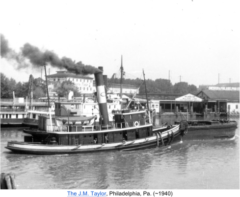
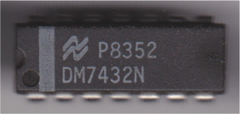
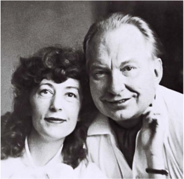
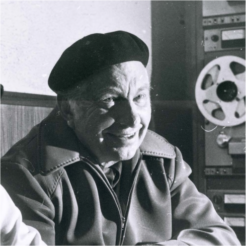

Section 5: Confidentiality 5.1: The Duty of Confidentiality
I don't know where you heard it. Don't know who's spreading it round. All I know is, I'm clean as a whistle, baby. I didn't utter a sound. I never said nothing.
63
Attorneys have a fiduciary duty of confidentiality to their clients. The duty of confidentiality provides that attorneys may not disclose confidential information provided to them by their clients, unless their clients consent to disclosure, or an exception to the duty of confidentiality permits disclosure. The duty of confidentiality applies to both current and former clients. Clients disclose confidential information to their attorneys in order to obtain legal advice. Generally, clients are entitled to assume that their attorney has a duty to maintain the confidentiality of any information disclosed in private. However, the duty of confidentiality does not apply to information that is "generally known" to the public.
The duty of confidentiality is broader in scope than the attorney-client privilege and the work product doctrine. Information that is not privileged or protected from disclosure as attorney work product may still be protected by the duty of confidentiality. Attorneys may not disclose confidential information about their clients without informed consent, unless one of the exceptions to confidentiality applies. Accordingly, the duty of confidentiality provides less protection to confidential client information than the attorney-client privilege or the work product doctrine, which may preclude the disclosure of confidential information when the duty of confidentiality alone would not.
Model Rule 1.6: Confidentiality of Information
a. A lawyer shall not reveal information relating to the representation of a client unless the client gives informed consent, the disclosure is impliedly authorized in order to carry out the representation or the disclosure is permitted by paragraph (b).
b. A lawyer may reveal information relating to the representation of a client to the extent the lawyer reasonably believes necessary:
1. to prevent reasonably certain death or substantial bodily harm;
2. to prevent the client from committing a crime or fraud that is reasonably certain to result in substantial injury to the financial interests or property of another and in furtherance of which the client has used or is using the lawyer's services;
3. to prevent, mitigate or rectify substantial injury to the financial interests or property of another that is reasonably certain to result or has resulted from the client's commission of a crime or fraud in furtherance of which the client has used the lawyer's services;
4. to secure legal advice about the lawyer's compliance with these Rules;
63
Liz Phair,
Never Said,
Exile in Guyville (1993).
5. to establish a claim or defense on behalf of the lawyer in a controversy between the lawyer and the client, to establish a defense to a criminal charge or civil claim against the lawyer based upon conduct in which the client was involved, or to respond to allegations in any proceeding concerning the lawyer's representation of the client;
6. to comply with other law or a court order; or
7. to detect and resolve conflicts of interest arising from the lawyer's change of employment or from changes in the composition or ownership of a firm, but only if the revealed information would not compromise the attorney-client privilege or otherwise prejudice the client.
c. A lawyer shall make reasonable efforts to prevent the inadvertent or unauthorized disclosure of, or unauthorized access to, information relating to the representation of a client.
Model Rule 1.6: Confidentiality of Information, Comment [21
A fundamental principle in the client-lawyer relationship is that, in the absence of the client's informed consent, the lawyer must not reveal information relating to the representation. This contributes to the trust that is the hallmark of the client-lawyer relationship. The client is thereby encouraged to seek legal assistance and to communicate fully and frankly with the lawyer even as to embarrassing or legally damaging subject matter. The lawyer needs this information to represent the client effectively and, if necessary, to advise the client to refrain from wrongful conduct. Almost without exception, clients come to lawyers in order to determine their rights and what is, in the complex of laws and regulations, deemed to be legal and correct. Based upon experience, lawyers know that almost all clients follow the advice given, and the law is upheld.
Restatement (Third) of the Law Governing Lawyers § 59 (2000): Definition of "Confidential Client Information"
Confidential client information consists of information relating to representation of a client, other than information that is generally known.
Restatement (Third) of the Law Governing Lawyers § 59 (2000): Comment b, Kinds of confidential client information
A client's approach to a lawyer for legal assistance implies that the client trusts the lawyer to advance and protect the interests of the client. The resulting duty of loyalty is the predicate of the duty of confidentiality. The information that a lawyer is obliged to protect and safeguard is called confidential client information in this Restatement.
This definition covers all information relating to representation of a client, whether in oral, documentary, electronic, photographic, or other forms. It covers information gathered
from any source, including sources such as third persons whose communications are not protected by the attorney-client privilege. It includes work product that the lawyer develops in representing the client, such as the lawyer's notes to a personal file, whether or not the information is immune from discovery as lawyer work product. It includes information acquired by a lawyer in all client-lawyer relationships, including functioning as inside or outside legal counsel, government or private-practice lawyer, counselor or litigator, advocate or intermediary. It applies whether or not the client paid a fee, and whether a lawyer learns the information personally or through an agent, for example information acquired by a lawyer's partners or associate lawyers or by an investigator, paralegal, or secretary. Information acquired by an agent is protected even if it was not thereafter communicated to the lawyer, such as material acquired by an investigator and kept in the investigator's files.
The definition includes information that becomes known by others, so long as the information does not become generally known. The fact that information falls outside the attorney-client privilege or work-product immunity does not determine its confidentiality under this Section.
A lawyer may learn information relevant to representation of a client in the course of representing another client, from casual reading or in other accidental ways. In the course of representation, a lawyer may learn confidential information about the client that is not necessary for the representation but which is of a personal or proprietary nature or other character such that the client evidently would not wish it disclosed. Such information is confidential under this Section.
Restatement (Third) of the Law Governing Lawyers § 60 (2000): A Lawyer's Duty to
Safeguard Confidential Client Information
1. Except as provided in §§ 61- 67, during and after representation of a client:
a. the lawyer may not use or disclose confidential client information as defined in § 59 if there is a reasonable prospect that doing so will adversely affect a material interest of the client or if the client has instructed the lawyer not to use or disclose such information;
b. the lawyer must take steps reasonable in the circumstances to protect confidential client information against impermissible use or disclosure by the lawyer's associates or agents that may adversely affect a material interest of the client or otherwise than as instructed by the client.
2. Except as stated in § 62, a lawyer who uses confidential information of a client for the lawyer's pecuniary gain other than in the practice of law must account to the client for any profits made.
Confidential & Privileged Information
In re Advisory Opinion No. 544 of NJ Sup. Court,
511 A. 2d 609 (N.J. 1986)
Summary:
The Community Health Law Project represented indigent and disabled clients in New Jersey. Organizations providing funding requested client-identifying information, but the Law Project provided only anonymized information. Some of the funders objected, and the Advisory Committee on Professional Ethics found that disclosure would not violate client confidence. The Law Project appealed, and the court held that the attorney-client privilege and duty of confidentiality precluded the Law Project from disclosing identifying information about its clients without informed consent or a reasonable regulatory obligation.
We are called to consider in this case the application of attorney-client protections to the relationship between a public legal services organization and the individuals whom it assists. The issue posed is whether certain information relating to the clients of a legal services organization, which provides legal assistance to mentally impaired or disabled and indigent persons, may be disclosed to the private and governmental entities that provide funds to the organization, without violating the protections of confidentiality accorded attorney-client communications and relationships.
The legal services organization resisting such disclosure is the Community Health Law Project.
It is a non-profit organization providing legal services to indigent, mentally disabled and retarded persons in Essex, Mercer, Union, and Camden counties. Its legal services are funded by private and public sources. Various contracts with the funding entities obligate the Law Project to make periodic reports relating to the services provided, including in some instances information about the individual clients served.
Under the funding plans of several community mental health centers, identifying, descriptive information, such as a client's name, address, and date of birth, have been sought by the entities providing funds. The Law Project has chosen not to reveal the identity of individual clients by furnishing such information. Rather, it has attempted to accommodate these requests by providing data that have been aggregated and by disclosing information on individual clients only to the extent and in a manner that the revelation would not serve to identify the clients directly or indirectly. However, several funding entities expressed their dissatisfaction with the generalized nature of the information received from the Law Project and have insisted upon obtaining individual client-identifying information.
In the face of these more particularized demands, the Law Project has taken the position that such identifying information is or may be protected from disclosure under the strictures governing the professional conduct of lawyers. However, confronted by this genuine ethical dilemma, the Law Project sought guidance from the Advisory Committee on Professional Ethics in January 1984 to ensure that disclosure would not violate any ethical precepts.
In Opinion No. 544, the ACPE ruled that the disclosure of the information requested by private and public funding entities does not violate the confidences of the Law Project's clients and that the information requested would not violate client secrets or confidences within the meaning of
then-applicable ethics standards. The Law Project then filed a petition with this Court to review the determination of the ACPE, which was originally denied. A motion for reconsideration of the denial was then granted by this Court.
We must initially consider the applicability of the attorney-client privilege to the relationships that exist between the Law Project and its clientele. The Law Project, as we have noted, is an organization that provides legal services to a particular class of persons, consisting of indigent, mentally-retarded, or disabled individuals. These persons are in need of legal assistance but cannot otherwise afford to retain an attorney and hence turn to the Law Project for legal help. The Law Project engages licensed attorneys of the State, who furnish legal advice and counselling to the individuals eligible for such services.
As licensed attorneys, the Law Project's lawyers are subject in every respect to the rules governing the professional conduct of lawyers. Accordingly, lawyers employed by governmental or public interest organizations are bound by the same ethical mandates of the Supreme Court's Rules of Professional Conduct, as well as other standards governing the professional activities of licensed attorneys.
Further, the persons who receive the legal services of the Law Project through its individual staff attorney are "clients." A client, in the context of the attorney-client privilege, is a person who "consults a lawyer for the purpose of retaining the lawyer or securing legal service or advice from him in his professional capacity." Consequently, it is not questioned that there exists between the Law Project and its attorneys who render legal services and the persons who receive those services an attorney-client relationship to which the attorney-client privilege fully applies.
It is also beyond question that indigent, needy, or otherwise eligible clients, assisted by attorneys without fees, are entitled to the same protections as clients who retain private counsel. Because the status of clients in every sense is ascribed to these persons, we must accordingly consider in this case the extent of these client-protections, particularly as to matters falling within the ambit of the attorney-client privilege.
The major focus of the attorney-client privilege has historically and traditionally been upon the communications that occur or information that is exchanged between an attorney and his or her client relating to the special attorney-client relationship. The attorney-client privilege is recognized as one of "the oldest of the privileges for confidential communications." While the attorney-client privilege has evolved and changed in terms of its emphasis and applications, the primary justification and dominant rationale for the privilege has come to be the encouragement of free and full disclosure of information from the client to the attorney. This has led to the recognition that the privilege belongs to the client, rather than the attorney.
The extent of the protection accorded communications and other information arising in the course of any attorney-client relationship is governed by the attorney-client privilege as well as several ethics standards. The attorney-client privilege itself, while rooted in the common law,
has acquired a basis in both statute and rule. This codification provides that communications between a lawyer and his or her client in the course of that relationship and in professional confidence are privileged; a client has a privilege (a) to refuse to disclose any such communication, and (b) to prevent his or her lawyer from disclosing it. While in a sense the privilege belongs to the client, the lawyer is obligated to claim the privilege unless otherwise instructed by the client or the client's representative.
The scope of the attorney-client privilege or protections is also subject to ethics rules governing attorney conduct. In this case, the ACPE determined the issue posed by the Law Project under the former Disciplinary Rules. It applied Disciplinary Rule 4-101 (A), entitled "Preservation of Confidences and Secrets of a Client." Under this rule, confidences are defined as information protected by the attorney-client privilege under applicable law. Ibid. The rule also deals with "secrets," which are defined as other information gained in the professional relationship that the client has requested be held inviolate or the disclosure of which would be embarrassing or detrimental to the client.
The Disciplinary Rules have been superseded by the Rules of Professional Conduct. The relevant rule now provides that a lawyer shall not reveal information relating to representation of a client unless the client consents after consultation except for disclosures that are impliedly authorized in order to carry out the representation. In comparison to the provisions of the former Disciplinary Rule, this Rule expands the scope of protected information to include all information relating to the representation, regardless of the source or whether the client has requested it be kept confidential or whether disclosure of the information would be embarrassing or detrimental to the client. Thus, the definition of confidential information under Rules of Professional Conduct 1.6(a) is broader and more inclusive than that of Disciplinary Rule 4-101 (A).
The ethics rules generally forbid disclosure of client information, without the client's consent, unless one of the exceptions to the rule is available. Disclosure of client information is permissible if the client consents after consultation. In this case no one urges the possible applicability of this provision dealing with consent. In situations such as this where the clients receiving legal services are indigent as well as mentally impaired or disabled, they may not be able to appreciate the nature or importance of their own interests or their ability to resist or decline consent or disclosure.
The appropriate analysis must therefore focus upon whether the revelation of client information to someone other than the lawyer amounts to the impermissible disclosure of a privileged communication or a secret or information relating to the relationship. That inquiry is here particularized in terms of whether certain information that identifies the disabled and indigent persons receiving legal services from a legal services project may be disclosed to funding sources without violating the attorney-client privilege as defined by both statute and the Court's ethics strictures governing professional conduct.
Arguably "information gained in the course of an attorney-client relationship," as provided under the former Disciplinary Rule 4-101 (A), might not include information that consists of only the
identity of the client. The thrust of this definitional standard appears to be directed to information in the nature of communications. While a client's identity per se might not be necessarily considered a privileged communication as such, in some instances disclosure of identity may indirectly reveal other information about the client. Hence, depending upon the nature of such additional or collateral information that is revealed by the disclosure of a client's identity, the need for confidentiality could appropriately cloak even identity. In this case, for example, disclosure of the identity of clients of the Law Project would be tantamount to the revelation of the mental and financial status of the individuals, as well as the fact that he or she has a legal problem that required the services of an attorney.
Furthermore, under the former Disciplinary Rules, it would appear that matters such as the identification or address of a client could still be considered to be a "secret" entitled to nondisclosure. In
Fellerman v. Bradley
, an attorney refused to disclose the address of his client, thereby thwarting the enforcement of a divorce judgment against the client. The Court concluded that this information could be considered a confidence or in the nature of a protected secret covered by the attorney-client privilege and the Disciplinary Rule, holding nonetheless that, in the circumstances, the fraud exception to the privilege applied to preclude nondisclosure of the client's address.
The dilemma posed by requests for client-identity information has been addressed by the American Bar Association Committee on Professional Ethics and various state advisory committees. In an opinion issued in 1969, the Committee ruled that a legal services office could allow the accounting office to examine its intake and disposition forms provided all identifying data were deleted. Similarly, in 1974, the Committee determined that a legal services organization could reveal client information to its Board of Directors if anonymity was preserved, the information was reasonably required by the board for a legitimate purpose, and the client expressed an informed consent.
The Board of Professional Responsibility of the Supreme Court of Tennessee reached a similar result. It determined that a client's name, address, zip code, sex, race, age, social security number, phone number, source of referral, and the dates representation began were all secrets within the meaning of Disciplinary Rule 4-101 and could not be disclosed to funding sources unless the client consented.
We are persuaded by the soundness of these opinions. Also highly relevant to our analysis is the fact that client information that serves to identify the client would clearly be protected under the current Rules of Professional Conduct, RPC 1.6. As noted, this rule accords confidentiality to any information relating to the representation of a client. Manifestly this would include a client's identity.
Accordingly, we hold that under current standards governing attorney conduct, client-identity may not be disclosed to any private or public funding agency in the absence of appropriate consent or other legal justification. In so ruling, we determine that a client's identity constitutes information relating to the representation of a client under the current Rules of Professional
Conduct and a secret entitled to non-disclosure, if not a protected confidential communication, under the attorney-client privilege and former Disciplinary Rule 4-101 (A), which was relied upon by the ACPE in this case.
It is further suggested that even though this information might otherwise be subject to a privilege against disclosure, there may be a legal justification that would allow such disclosure.
Disclosure of such information is permissible because, it is contended, the information sought is required to be furnished by law. The Division of Mental Health and Hospitals has promulgated regulations requiring reporting for all agencies receiving financial assistance through the Division, to aid in monitoring compliance and for program planning and development. Also, under N.J.A.C. 10:37-6.84 information such as client services and fiscal reports are to be submitted to the Division. Further, the Divisions of Mental Health and Hospitals and Developmental Disabilities and the various county mental health agencies are required to maintain the confidentiality of any client information it receives from the Law Project. It is contended that the reporting of information is needed to comply with these regulations and that this would not constitute either impermissible disclosure or public disclosure of client information violative of applicable ethics restrictions.
Under the Rules of Professional Conduct a lawyer may reveal such information to the extent the lawyer reasonably believes necessary to comply with the law. However, the regulations promulgated by the Division that provide for reporting as related to the persons assisted by the Law Project do not specifically require client-identifying information. Moreover, there is no legal requirement that client-identifying information be disclosed to private funding agencies. In the absence of such requirements, we may not infer that this client-identifying information is necessary to be disclosed as a matter of law. Hence, it may remain privileged under the Rules of Professional Conduct.
This result, we point out, would not be different under the former ethics rules. In
Fellerman v. Bradley
, the compliance-with-law exception of Disciplinary Rule 4-101 (C)(3), was deemed to prohibit disclosure of attorney-client information except in a situation in which the client was attempting through non-disclosure to evade an order of a court. We expressed the view that the policies underlying the privilege would not be advanced by allowing the client through his attorney to perpetrate a fraud on the court or to thwart justice by consenting to and subsequently ignoring a judgment of the court by refusing to disclose the client's address.
We acknowledge that if by statute or valid rule or regulation information concerning the identity of clients of a legal services organization were clearly required to be reported for legitimate governmental purposes, the analysis and result could well be different. A different conclusion as to the propriety of disclosure might also obtain in the event private funding sources sought client information under enforceable rules or regulations. It can reasonably be assumed that in such a context, the welfare and interests of clients would remain a paramount concern and that the disclosure occasioned by such necessary reporting would be attended by suitable protections reflecting needs for confidentiality and privacy.
II.
We conclude that client-identifying data with respect to persons receiving legal assistance through the Law Project constitute matters clearly covered by the Rules of Professional Conduct as "information relating to representation." Such material is also covered under the attorneyclient privilege and the former Disciplinary Rule as information in the nature of client secrets that could be embarrassing or detrimental to the client if revealed. Under these strictures we are satisfied that it would be improper to reveal such information to either public or private funding sources in the absence of valid consent or reasonable rules clearly requiring such disclosure for legitimate purposes.
Accordingly, we reverse Opinion No. 544.
Questions:
1. Why did the court hold that the Law Project could not produce identifying information?
2. What is the difference between confidential information and privileged information?
When can an attorney disclose confidential information? When can an attorney disclose privileged information?
3. When should attorneys address the disclosure of confidential information, if their clients cannot provide informed consent?
"Generally Known" Information
The duty of confidentiality prevents attorneys from using information about their current or former clients only if the information is "confidential." Accordingly, the duty of confidentiality does not apply to information that is "generally known." Of course, whether information is "generally known" may be unclear.
Restatement (Third) of the Law Governing Lawyers § 59 (2000): Comment d, Generally Known Information
The "generally known" standard of this Section is the standard of ABA Model Rules of Professional Conduct, Rule 1.9(b), which is not further elaborated upon in its Comment. The ABA Model Code of Professional Responsibility (1969) included in DR 4-101 (A) all information, without regard to its public or private nature, within its definition of "confidences and secrets." ABA Model Rule 1.9(b), on the other hand, excepts from its requirement of confidentiality information that "has become generally known." No similar exception is contained, however, in the general-purpose analog to ABA Model Rule 1.9(b), ABA Model Rule 1.8(b) Commentators have differed over the wisdom of the ABA Model Rule approach. Case law is sparse, but extant authority agrees with the position taken in the Section and Comment.
The law generally provides that a client communication cannot become public and still remain protected by the attorney-client privilege. The general law of agency also permits a former agent to compete with a former principal so long as the agent employs only information about the principal that is "a matter of general knowledge." The scant case authority is divided on the question whether the definition of confidential client information includes publicly available information.
The position taken in the Section and Comment—that "generally known" information is not part of the definition of confidential client information for either present or past clients—adheres to ABA Model Rule 1.9(b). The absence of a similarly limiting provision in ABA Model Rule 1.8(b), which applies to ongoing representations, is not inconsistent. Any such lawyer use would be impermissible on the broad ground that a lawyer may not use even publicly known information to the detriment of a current client, whether to further a personal interest of the lawyer or to further the interest of another client. Revealing client information adversely in a way that is gratuitous or negligent would violate the duty to take all reasonably available steps to advance the client's lawful objectives.
Dougherty v. Pepper Hamilton LLP,
133 A. 3d 792 (Pa. Super. Ct. 2016)
Summary:
Pepper Hamilton LLP represented John J. Dougherty in a federal grand jury investigation, which included a search of his house. The search warrant affidavit was filed under seal, but the FBI later attached it to an unrelated public document by accident. When Dougherty ran for public office, the Philadelphia Inquirer published several articles stating that he had committed crimes. Daugherty filed a defamation action against the Inquirer, which hired Pepper Hamilton. When Pepper Hamilton threatened to submit the affidavit and other information, Daugherty filed a motion to disqualify, as well as a malpractice action. The trial court granted the Inquirer's motion for summary judgment, but the appellate court reversed, holding that the affidavit was still "confidential," despite being attached to a public document, because it was not "generally known."
OPINION BY SHOGAN, J.:
Appellant, John J. Dougherty, appeals from the order granting summary judgment in favor of Pepper Hamilton LLP and its attorneys Amy B. Ginensky, Michael E. Baughman, Peter M.
Smith, and Raphael Cunniff, in this civil action alleging breach of fiduciary duty and breach of contract. For the reasons that follow, we reverse and remand for further proceedings.
We summarize the protracted history of this case as follows. On October 30, 2003, Appellant retained Pepper Hamilton to represent him in relation to a federal matter involving a grand jury subpoena he received. Although Appellant was not the target of the grand jury investigation, an FBI Affidavit was filed to secure a search of Appellant's residence. Appellant has alleged that he provided Pepper Hamilton unfettered access to documents during the firm's representation of
Appellant. Also, counsel from Pepper Hamilton was present during the execution of the search warrant at Appellant's home in November of 2006.
Initially, the FBI Affidavit securing the search warrant was under seal, but, somehow, the FBI Affidavit inadvertently became attached to a document presented in an unrelated criminal matter involving an unrelated person named "Donald Dougherty, Jr." According to Appellant, on January 30, 2008, the federal government filed a response to Donald Dougherty Jr.'s motion to suppress evidence, which was entered as Document No. 27 on the federal criminal docket for the prosecution of Donald Dougherty, Jr. This filing was allegedly made under "restricted status."
64
Document No. 27 referenced, as Exhibit "A," a copy of an affidavit by an FBI agent in support of the issuance of a search warrant for Donald Dougherty, Jr.'s premises. However, the affidavit that was attached to Document No. 27 as Exhibit "A" was actually the FBI Affidavit in support of the search of Appellant's premises.
At least some of the documents in Donald Dougherty Jr.'s case were filed under seal and, thus, not accessible to the public. Subsequently, however, in April of 2008, certain documents in Donald Dougherty Jr.'s case were unsealed by Judge Robreno of the United States District Court for the Eastern District of Pennsylvania. More specifically, Judge Robreno's April 11, 2008 order authorized the eastern district Clerk of Court to lift the seal on Documents 31,32, 48 and 38. Appellant alleges that Document No. 27 was also, albeit mistakenly, removed from "restrictive status" around this time.
When Appellant was running for a vacant seat in the Pennsylvania Senate in April of 2008, the Philadelphia Inquirer published several articles about Appellant. The articles implied that Appellant had engaged in criminal conduct in the past and was likely to do so again if elected to the Pennsylvania Senate. In March of 2009, Appellant initiated a defamation suit against the Inquirer in state court. In 2011, Pepper Hamilton assumed representation of the defense for the Inquirer in the defamation suit filed by Appellant. In 2012, Pepper Hamilton informed the trial court that the defense of the defamation action would rely on information relating to the federal investigation in which Pepper Hamilton had previously represented Appellant. In 2013,
Appellant moved to have Pepper Hamilton removed as defense counsel in his defamation action against the Inquirer. The trial court denied the motion to disqualify Pepper Hamilton. On appeal this Court reversed the decision of the trial court and remanded the matter for the entry of an order barring Pepper Hamilton and its attorneys from representing the Inquirer.
On December 10, 2012, while Pepper Hamilton and its attorneys were still representing the Inquirer, the firm filed a motion for summary judgment in the defamation suit and included in the attached exhibits a copy of the FBI Affidavit. On December 12, 2012, the Inquirer then published a front-page article, which included detailed references to the FBI Affidavit.
Documents filed on the federal court's PACER system are publicly available for a fee to those who have registered for and received a PACER account. However, in his memorandum of law in support of his response to Pepper Hamilton's motion for summary judgment, Appellant asserts that a document on "restricted status" is unavailable to anyone but the court and the parties.
On February 11,2013, Appellant initiated the instant action by filing a complaint against Appellees alleging breach of fiduciary duty and breach of contract. Appellant alleged that, in representing the Inquirer in the defamation suit, Pepper Hamilton acted against the interests of Appellant, its former client. The trial court has summarized the subsequent procedural history of this case as follows:
Appellees filed Preliminary Objections on April 3, 2013. These Preliminary Objections were overruled by this Court by Order dated June 18, 2013. An Answer was filed by Appellees on July 8, 2013. On May 27, 2014, after some discovery was conducted and a Revised Case Management Order entered, Appellees filed a Motion for Summary Judgment. An Answer in response to the Motion for Summary Judgment was filed by Appellant on June 27, 2014. A Reply in Support of the Motion for Summary Judgment was filed by Appellees on July 2, 2014. A Supplemental Memorandum in Support of the Motion for Summary Judgment was filed by Appellees on July 25, 2014, and a Supplemental Memorandum in Opposition was filed by Appellant on July 29, 2014. By Order dated July 29, 2014, and entered on the docket on July 30, 2014, Summary Judgment was granted.
This timely appeal followed.
Appellant presents the following issues for our review:
A. Whether the Trial Court erred in granting Appellees' motion for summary judgment on the mistaken basis that, because Pepper's breach of fiduciary duty was also a violation of the Pennsylvania Rules of Professional Conduct, Appellant cannot assert a claim against Pepper as a matter of law.
B. Whether the Trial Court erred in holding that Appellees were entitled to summary judgment because, although they used information against Appellant that is substantially related to their former representation of him, that information is publicly available and thus cannot form the basis of a disloyalty claim.
C. Whether the Trial Court prematurely granted Appellees motion for summary judgment where the parties had exchanged limited written discovery and taken no depositions.
Each of Appellant's issues challenges the propriety of the trial court's determination granting summary judgment.
A legal malpractice claim based on breach of contract, "involves (1) the existence of a contract, (2) a breach of a duty imposed by the contract, and (3) damages." With respect to a legal malpractice claim based on breach of contract, this Court has stated the following:
The attorney's liability must be assessed under the terms of the contract. Thus, if the attorney agrees to provide her best efforts and fails to do so, an action in assumpsit will accrue. An attorney who agrees for a fee to represent a client is by implication agreeing
to provide that client with professional services consistent with those expected of the profession at large.
With respect to a breach of fiduciary duty claim, "a confidential relationship and the resulting fiduciary duty may attach wherever one occupies toward another such a position of advisor or counsellor as reasonably to inspire confidence that he will act in good faith for the other's interest." The leading case in Pennsylvania discussing breach of a fiduciary duty by an attorney with regard to a conflict of interest is
Maritrans GP Inc. v. Pepper, Hamilton & Scheetz.
In Maritrans,
our Supreme Court upheld the trial court's issuance of a preliminary injunction preventing Pepper Hamilton from representing its former clients' competitors. The Court found that a cause of action for breach of a fiduciary duty against a law firm was actionable where the firm acquired confidential information during the course of its representation. In discussing actionability for breach of a fiduciary duty, our Supreme Court reiterated the following longstanding principles:
Activity is actionable if it constitutes breach of a duty imposed by statute or by common law. Our common law imposes on attorneys the status of fiduciaries vis a vis their clients; that is, attorneys are bound, at law, to perform their fiduciary duties properly. Failure to so perform gives rise to a cause of action. It is "actionable."
At common law, an attorney owes a fiduciary duty to his client; such duty demands undivided loyalty and prohibits the attorney from engaging in conflicts of interest, and breach of such duty is actionable.
The
Maritrans
Court highlighted that Pepper Hamilton "was furnished with substantial confidential commercial information" and "came to know the complete inner-workings of the company along with Maritrans' longterm objectives, and competitive strategies." As explained by the Court, adherence to a fiduciary duty "ensures that clients will feel secure that everything they discuss with counsel will be kept in confidence" and that Pepper Hamilton "had a duty to administer properly their responsibilities to respect the confidences of Maritrans." It further explained that the rationale behind this policy is to prevent an attorney from taking "undue advantage of the confidential communications of such client."
In reaching its determination, the Court in
Maritrans
emphasized the confidential information that Pepper Hamilton garnered during the course of its representations.
Pennsylvania Rule of Professional Conduct 1.9 further addresses attorney duties to former clients and provides, in relevant part, as follows:
(a) A lawyer who has formerly represented a client in a matter shall not thereafter represent another person in the same or a substantially related matter in which that person's interests are materially adverse to the interests of the former client unless the former client gives informed consent.
(c) A lawyer who has formerly represented a client in a matter or whose present or former firm has formerly represented a client in a matter shall not thereafter:
(1) use information relating to the representation to the disadvantage of the former client except as these Rules would permit or require with respect to a client, or when the information has become generally known; or
(2) reveal information relating to the representation except as these Rules would permit or require with respect to a client.
The explanatory comment to Rule 1.9(c) offers the following pertinent insight:
[8] Paragraph (c) provides that information acquired by the lawyer in the course of representing a client may not subsequently be used or revealed by the lawyer to the disadvantage of the client. However, the fact that a lawyer has once served a client does not preclude the lawyer from using generally known information about that client when later representing another client.
In addition, section 59 of the Restatement (Third) of the Law Governing Lawyers defines the term "Confidential Client Information" as "Confidential client information consists of information relating to representation of a client, other than information that is generally known." Comment b to the above definition explains that "the definition includes information that becomes known by others, so long as the information does not become generally known." Furthermore, comment d states the following:
d.
Generally known information.
Confidential client information does not include information that is generally known. Such information may be employed by a lawyer who possesses it in permissibly representing other clients and in other contexts where there is a specific justification for doing so. Information might be generally known at the time it is conveyed to the lawyer or might become generally known thereafter. At the same time, the fact that information has become known to some others does not deprive it of protection if it has not become generally known in the relevant sector of the public.
Whether information is generally known depends on all circumstances relevant in obtaining the information. Information contained in books or records in public libraries, public-record depositaries such as government offices, or in publicly accessible electronic-data storage is generally known if the particular information is obtainable through publicly available indexes and similar methods of access. Information is not generally known when a person interested in knowing the information could obtain it only by means of special knowledge or substantial difficulty or expense. Special knowledge includes information about the whereabouts or identity of a person or other source from which the information can be acquired, if those facts are not themselves generally known.
A lawyer may not justify adverse use or disclosure of client information simply because the information has become known to third persons, if it is not otherwise generally
known. Moreover, if a current client specifically requests that information of any kind not be used or disclosed in ways otherwise permissible, the lawyer must either honor that request or withdraw from the representation.
We further observe that there is no Pennsylvania case law directly on point. However, as the Supreme Court of Ohio aptly stated in
Akron Bar Association v. Holder,
"An attorney is not free to disclose embarrassing or harmful features of a client's life just because they are documented in public records or the attorney learned of them in some other way." Likewise, in
Lawyer Disciplinary Board v. McGraw,
the Supreme Court of West Virginia observed that "the ethical duty of confidentiality is not nullified by the fact that the information is part of a public record or by the fact that someone else is privy to it."
Here, the trial court concluded that because the FBI Affidavit was inadvertently appended to a document in an unrelated criminal matter, the information contained therein was public. Specifically, the trial court stated that "the fact that the FBI Affidavit in question was publicly available for many years precludes a determination that the receipt of the improperly filed FBI Affidavit through a breach by Appellees of the attorney-client relationship and duty of fidelity is actionable."
Our review of the record, in the light most favorable to Appellant as the non-moving party, reflects that the trial court erred in granting summary judgment in this case. Indeed, this case presents genuine issues of fact. The record reveals that the FBI Affidavit in question became part of another criminal matter through inadvertence. Even accepting that the FBI Affidavit was publicly available through PACER prior to December 10, 2012, we are left to ponder whether the FBI Affidavit was actually "generally known." All that is acknowledged at this point in the proceedings is that the FBI Affidavit was inadvertently appended to a document in a case that did not involve Appellant as a party. Therefore, it appears that such document was not "indexed" under Appellant's name and that a person interested in the FBI Affidavit "could obtain it only by means of special knowledge." Furthermore, it is unknown exactly how and when the FBI Affidavit came into the possession of the Inquirer and eventually became the subject of an article in the Inquirer during Pepper Hamilton's representation of the Inquirer. Whether Pepper Hamilton committed a breach of its duties to Appellant depends on the answers to these questions. Thus, these questions are sufficient to establish genuine issues of material fact regarding Pepper Hamilton's conduct. Contrary to the trial court's conclusion, in the event that the FBI Affidavit was not generally known information, it appears that Pepper Hamilton breached its duty to Appellant as a former client and such breach was actionable. Accordingly, we reverse the order granting summary judgment.
Questions:
1. Why did the court hold that the information about Daugherty was protected by the duty of confidentiality, even though it was publicly available?
2. How well-known does information have to be before it becomes "generally known"? Why didn't the Inquirer's articles make the information at issue "generally known"?
Matter of Tennant,
392 P. 3d 143 (Mont. 2017)
Summary:
Attorney David G. Tennant was the subject of a disciplinary complaint based on his representation of Richard and Debbie Harshman. When the Harshmans did not pay Tennant's bill, he filed an attorney's lien on their property and purchased it at the Sheriff's sale. The Harshmans filed a complaint against Tennant with the Office of Disciplinary Counsel, claiming that Tennant improperly used confidential client information to their detriment. The Commission on Practice found no violation of the duty of confidentiality, but the Montana Supreme Court reversed, because the information was not "generally known."
Justice Beth Baker delivered the Opinion and Order of the Court.
These consolidated proceedings include two formal disciplinary complaints filed against Montana attorney David G. Tennant. The complaints, which arise from Tennant's debt collection practices against clients and former clients, will be referenced in this Opinion and Order as the Ray complaint and the Harshman complaint.
BACKGROUND
Tennant represented Richard and Debbie Harshman in an action for eviction of tenants from, and possession of, real property in Hungry Horse, Montana. The Harshmans obtained a default judgment against their tenants for damages to the property, including attorney fees of $3,063.54. When he was unable to collect the attorney fees through execution on the tenants and the Harshmans did not pay their bill to Tennant's firm, Tennant filed an attorney's lien on the property. He later filed a complaint against the Harshmans alleging breach of contract, account stated, and foreclosure of the attorney's lien, in which action he was granted a default judgment of $8,148.68. Tennant assigned the judgment to a collection agency, which obtained a writ of execution on the Harshmans' property. A sheriffs sale was held, at which the collection agency was the successful bidder. The Harshmans later redeemed their property.
Both Ray and the Harshmans filed complaints against Tennant with the Office of Disciplinary Counsel, and ODC filed formal disciplinary complaints in both matters. On August 31,2016, Tennant filed conditional admissions and an affidavit of consent to discipline in these consolidated proceedings, pursuant to Rule 26, Montana Rules for Lawyer Disciplinary Enforcement. ODC objected to Tennant's conditional admissions. On October 20, 2016, the Commission on Practice held a hearing on the complaints and to consider Tennant's conditional admissions. Tennant was present with counsel and testified on his own behalf.
On January 5, 2017, the Commission submitted to this Court its Findings of Fact, Conclusions of Law, and Recommendation for Discipline. The Commission rejected Tennant's conditional admissions. The Commission concluded that ODC failed to carry its burden of proving by clear and convincing evidence any MRPC violations alleged in the Harshman complaint.
The Commission recommends that, as a result of his violations of the Montana Rules of Professional Conduct, Tennant be disciplined by public censure by this Court. The Commission recommends that, in the future, Tennant be required to provide to clients and former clients copies of any attorney's liens he or his firm files against them. In addition, the Commission recommends that, for a period of three years, Tennant be required to provide to ODC copies of any attorney's liens filed by him or his firm, copies of all complaints filed by him or his firm and served against former clients for unpaid fees, and copies of judgments or assignments of judgments obtained by him or his firm against former clients.
ODC has filed written objections to the Commission's findings, conclusions, and recommendation, and Tennant has filed a response.
DISCUSSION
ODC argues that the Commission erred in concluding that it failed to prove violation of Rule 1.9, MRPC, in relation to the Harshmans. Rule 1.9(c) provides:
A lawyer who has formerly represented a client in a matter or whose present or former firm has formerly represented a client in a matter shall not thereafter:
(1) use information relating to the representation to the disadvantage of the former client except as these Rules would permit or require with respect to a client, or when the information has become generally known.
ODC alleged Tennant violated this Rule when he bid on the Harshmans' Hungry Horse property at the sheriffs sale, because Tennant's knowledge of the property derived from his representation of the Harshmans. The Commission determined that because Tennant could have found out that the Harshmans owned property in Hungry Horse via public record and then foreclosed his fee lien and bid at the sheriffs sale, no violation of Rule 1.9 occurred.
As ODC emphasizes, Rule 1,9's language requires that, in order for the attorney to be free from the prohibition against using representation-related information to the disadvantage of a former client, the information at issue must be "generally known."
Whether information is generally known depends on all circumstances relevant in obtaining the information. Information contained in books or records in public libraries, public-record depositories such as government offices, or in publicly accessible electronic-data storage is generally known if the particular information is obtainable through publicly available indexes and similar methods of access. Information is not generally known when a person interested in knowing the information could obtain it only by means of special knowledge or substantial difficulty or expense.
A lawyer may not justify adverse use or disclosure of client information simply because the information has become known to third persons, if it is not otherwise generally known.
Some courts have applied a strict definition of "generally known" in the context of a Rule 1.9 analysis. That the information at issue is generally available does not suffice; the information must be within the basic understanding and knowledge of the public. "The client's privilege in confidential information disclosed to his attorney is not nullified by the fact that the circumstances to be disclosed are part of a public record, or that there are other available sources for such information, or by the fact that the lawyer received the same information from other sources."
In this case, although it would have been possible for Tennant to discover the existence of the Harshmans' property through searches of public records, he undisputedly learned of the property as part of his representation of the Harshmans. Tennant used that information to the Harshmans' disadvantage. We will not interpret the "generally known" provision of Rule 1.9(c) to allow Tennant to take advantage of his former clients by retroactively relying on public records of their information for self-dealing. The Commission erred in concluding that Tennant did not violate Rule 1.9, MRPC.
ODC further claims that, absent the Harshmans' redemption of their property, Tennant would have exceeded his fee claim and lien by receiving a windfall from the sheriff's sale of upwards of $80,000 — his former clients' equity in their property. ODC submits that this is a clear violation of Rule 1.9(c), MRPC. However, the Harshmans did redeem their property, and ODC's assumptions do not satisfy its burden of proof.
Sanctions
Finally, ODC argues that the Commission's recommended sanctions are inadequate given Tennant's unethical conduct and will not deter the same type of conduct by other Montana attorneys. ODC had recommended that Tennant be suspended from the practice of law for at least seven months and that he be required to retake and pass the Multistate Professional Responsibility Exam.
We have concluded that ODC established one ethical violation in addition to those recognized by the Commission. However, that violation ultimately did not harm Tennant's clients — the Harshmans redeemed their property. Further, the additional violation does not undermine the Commission's overall conclusions on the evidence presented, and on this record we are not inclined to deviate from the discipline recommended by the Commission.
Questions:
1. A Sheriff's sale is a public event. Why did the court hold that the duty of confidentiality protected this information about the Harshmans?
2. What would have happened if someone other than Tennant had purchased the Harshmans' property?
Stanley A. Kaplan,
The Case of the Unwanted Will,
65 ABA J. 484 (1979)
John Smith and his wife Mary go to a lawyer who has handled some minor legal matters for John to make their wills prior to going on a trip abroad.
John tells his lawyer what disposition he and his wife desire to make of their estates, and the lawyer prepares separate wills for them to sign prior to their departure. After John has signed his will, the lawyer suggests to John that he would like to be alone with Mary before she signs. John withdraws to another office. The lawyer asks Mary if the will is as she would have made it had her husband not been present at the conference and if the will were to be secret from her husband.
She says no, that the will as drawn contains several provisions that are contrary to her wishes, and that she would change if her husband were not to know the ultimate disposition of her estate. However, she says that she would not be willing to precipitate the domestic discord and confrontation that would occur if her husband were to learn that she had drawn a will contrary to his wishes and in accordance with her own desires.
Mary asks the lawyer if he will write one page of her will to provide that certain persons benefiting by her will as drawn will be replaced by certain other persons. The lawyer states that under the circumstances he does not think that he can in fairness represent her in making these changes but suggests that she go ahead and sign this will and then, as soon as possible, go to some other lawyer and have her will rewritten in accordance with her true wishes.
The departure time for the trip comes on Mary before she is able to make arrangements to have her will rewritten. John and Mary are involved in an airplane accident and both are killed while on the trip. Their son, Tom, who is named as executor in each of their wills, comes to the lawyer who drew the wills and asks him to represent him as executor in connection with probating the wills and distributing the estate.
What are the ethical problems the lawyer faces in connection with probate and distribution in accordance with the wills as drawn? Did the lawyer have any obligation to speak to Mary separately, as he did, about her will? When the lawyer learned from Mary that she had other wishes that were being suppressed, what were his obligations? What, if anything, should the lawyer have done and, did not do after learning Mary's true wishes? Do Mary's true but unfulfilled wishes concerning the revision of her will have any legal effect? Does the lawyer have any right or obligation to disclose what Mary told him about her testamentary desires?
Comments from George W. Overton
The first question to be asked in all problems involving professional responsibility or ethics is "Who is the client?" Not "Who brought Mary to my office?" Not even "Who is paying my bill?"
And emphatically not "Whose anger will cost me the most business?" In facts given, John probably presumes that the lawyer is his and that he is the lawyer's client, and that's all that need be said. The lawyer probably accepted this notion without clarification.
The problem is that in the drafting of Mary's will Mary is the client, no matter who pays the bill and no matter what chain of events brought Mary to the lawyer's office. The first issue that has to be disposed of is: Can the lawyer continue to serve Mary in the preparation of any will other than the one first drafted? Can he do so without John's knowledge? I suggest that he cannot.
The lawyer must explain to Mary her three alternatives:
1. To execute the will, and she and the lawyer remain silent unless questioned.
Presumably this won't work, because the lawyer, if questioned by John, cannot lie to him, although I do not believe the lawyer has a duty to volunteer any information. It is enough that he says, in response to a question, either "John, I cannot answer your question" or "Mary did not execute the will I drafted" and the lawyer should refuse to answer further questions.
2. To execute the will as drafted, hoping to replace it soon. In this case he must explain to Mary that it is unquestionably her will, until revoked, and that even if all their conversation were reproduced in court, it would not affect the validity of the will, since it could easily be proved that she had testamentary capacity, and contemporaneous inconsistent statements are admissable only as to capacity.
3. To have a new will drawn (or a new insertion) but let the lawyer tell John: "Mary changed her will." The lawyer need not say more to John.
If, as we presuppose in 2, the lawyer explains to Mary her alternatives and the conclusiveness of the execution of the will, he is out of trouble at the time of execution.
However, he should reflect, for the future, on how to avoid this awkward box. First of all, the custom of separating spouses at execution of wills, although not uncommon, is an anachronism, based on the notion that one spouse, presumably the husband, could coerce the other into an unintended result? or someone could so claim. The time to elicit separate responses is at the first meeting or immediately there after. Probably a letter, following the first meeting, could state something like the following:
"I will proceed as instructed to draft both your wills, on the assumption that each of you has given me your wishes. If there is anything on this subject that either of you wishes to discuss this subject with me separately, please let me know and I will then decide if I can go further."
As stated above, in preparing Mary's will the lawyer can only be Mary's lawyer, but has he made this clear to John? Has he been guilty of any implied communication to John inducing John to execute a will based on John's presuppositions of Mary's will that is misleading or false? In the
technical sense, he has not. If John wanted his will to be conditioned on certain dispositions by Mary, legal mechanisms existed (conditional bequests, or mutual wills, or a joint will) to effectuate those purposes. But the lawyer has undoubtedly not outlined these alternatives.
On the other hand, it should not be said that there is an inherent conflict of interest in representing both husband and wife in estate planning. Obviously, most couples would be appalled at the notion of having to pay two lawyers' fees for this service. What is necessary is that the lawyer identify the possibility of disagreements at the earliest possible stage.
After Mary's death the lawyer's responsibility is to file the will and assist, as necessary, in its probate. For the reasons stated, Mary's inconsistent comments made at the time of execution are relevant only to the issue of capacity, and I do not see that the lawyer has a duty to anyone to raise that issue if he has no doubts on that score.
The intricate ramifications of the ethical problem emerge, however, if the question of capacity is raised. Let us suppose that her will excluded some heir by intestacy who attacks the will on this ground. Probably in this event the lawyer should inform Tom of the facts, and Tom can decide as the personal representative of Mary whether to attempt to assert privilege as to the testimony involved. He is not likely to succeed in that endeavor. I cannot see that the lawyer has any duty to Mary's heirs at law to volunteer any information.
Comments from John C. Williams
The problems the lawyer faces concerning John and Mary and their wills are essentially problems involving the interests of multiple clients. The special problems are these:
1. How do the general principles of multiple representation apply to estate planning work for a married couple?
2. When a lawyer represents two clients on a common project, what are his responsibilities in preserving the confidences of one client from the other?
3. When a lawyer who represents two clients learns that their interests are in fact conflicting, what does the lawyer do about it, particularly in a case in which the conflict is known to one of the clients but not the other?
Surprisingly, neither the Code of Professional Responsibility nor published opinions of the American Bar Association Committee on Ethics and Professional Responsibility nor Drinker offers much guidance, yet the second two questions presumably arise frequently in the practice of, say, a lawyer who represents codefendants in criminal cases or coplaintiffs in personal injury cases.
Who is the client? That's the first question. There may be lawyers who suppose that the husband and wife have such a community of interest or that the wife is so subservient to her husband that they are, collectively, one client. Mr. Bumble would advise that if the lawyer
supposes that, the lawyer is "a ass—a idiot" and probably a bachelor. Clearly, both must be considered clients.
As was suggested in the first "Legal Ethics Forum," there are many good, perhaps compelling, reasons to avoid bringing multiple lawyers into an amicable situation. Expense may be a prohibitive factor, and one must consider the risk that multiple lawyers will create problems where none existed. These considerations are important enough when the clients are two business partners. They are even more important when the clients are a happily married husband and wife whose interest in the continuity and development of their marital relationship may be more important than the outcome of a particularly legal negotiation.
Most married couples probably never consider consulting separate lawyers for the preparation of their wills. They assume that their mutual interests will be served by working co-operatively toward a co-ordinated estate plan and by confiding in one another in seeking to understand and reconcile what differences may exist between them.
This assumption is so prevalent, on behalf of both clients and lawyers, that in most cases the "multiple representation" problem is never discussed. Ethical Consideration 5-16 requires that before a lawyer may represent multiple clients, he should explain fully to each client the implications of the common representation and should accept or continue employment only if the clients consent. I believe this is rarely done when the clients are husband and wife who retain a lawyer for the preparation of wills. In my judgment it is unnecessary for a lawyer formally to seek an express consent to multiple representation when the clients are a married couple who want wills drawn, unless the lawyer knows of special circumstances that lead to the belief that there is a substantial conflict of interests. An informed consent may properly be inferred from the circumstances.
Problems such as those presented by this case might have been avoided, however, if at the initial interview with John and Mary the lawyer had probed for possible conflicts. This is especially important in cases in which the likelihood is great that the interests of the husband and wife may be conflicting, such as in a marriage that is in the process of disintegration, in a second marriage in which there are children by the spouses' prior marriages, or in other cases in which the natural objects of the bounty of the husband and wife are not identical.
Finally, one should recognize that women are taking an increasingly active voice in the conduct of their personal business. A "liberated woman" may feel that sharing a lawyer with her husband enhances neither her personal dignity nor the marital relationship. She may prefer independent representation and be prepared to pay for it.
Confidentiality with multiple clients. Disciplinary Rule 4-101 directs that a lawyer shall not knowingly reveal a confidence or secret of a client during or after the termination of the professional relationship. In a multiple representation case the difficulty is determining what constitutes a client's "confidence." When John, Mary, and the lawyer meet together face to face, what Mary tells the lawyer is not a confidence, so far as John is concerned. But what if Mary
meets privately with the lawyer, or telephones or writes him? There is an implied understanding, when two or more clients retain a lawyer for work on a common project, that the lawyer is free to disclose to all of his clients his communications with each of them.
It was a mistake for the lawyer to ask to meet privately with Mary before she signed her will. By doing so, he invited Mary to speak "confidentially" with him and opened the door to the dilemma that confronted him when Mary told him that she was dissatisfied with her will.
If, after the lawyer met with John and Mary jointly, he had no reason to be concerned as to lack of testamentary capacity on Mary's part or undue influence or duress by John, the private meeting with Mary was a mistake. If he had these concerns, he should have resolved them by withdrawing from employment.
The execution of Mary's will. The lawyer was correct in refusing to cooperate with Mary in making a secret change in her will. As E.C. 5-14 states, "maintaining the independence of professional judgment required of a lawyer precludes his acceptance or continuation of employment that will adversely affect his judgment on behalf of or dilute his loyalty to a client. This problem arises whenever a lawyer is asked to represent two or more clients who may have differing interests."
Though a husband and wife do not agree completely on the provisions of their wills, a lawyer may prepare wills for both, but only if there is an informed consent. That prerequisite is missing here. The consent given by implication at the initial meeting was vitiated when Mary sought to make a change of which John was not informed.
The root of the conflict is Mary's problem. She doesn't like the will that was discussed in her husband's presence, but she doesn't want to disclose to him her dissatisfaction with it. This dilemma is Mary's and she should decide what to do about it. The lawyer, by meeting privately with Mary, has permitted her to transfer the problem to him.
I agree that the lawyer should have presented alternatives to Mary and required her to make the choice. I disagree that it would be proper for the lawyer to draw a revised will for Mary on the condition that he be permitted to tell John simply that "Mary changed her will." This is not the full disclosure that the canons require.
Validity of Mary's will. Mary's will is valid as signed. She understood the provisions of the will and the significance of signing it. To my knowledge, there is no authority for refusing to probate or for reforming a will on the basis of statements made by the testator at the time of signing that he or she was not entirely satisfied with its provisions.
Most lawyers with extensive experience in writing wills have clients who never sign a will without protesting that it is not final—perhaps they feel that acceptance of the will somehow involves an acceptance of death. The courts properly attach no significance to these statements. There is
no evidence that Mary did not understand what she was doing or of lack of capacity, undue influence, or duress. The will should be probated as written.
The lawyer's dilemma. After Mary advised the lawyer that she was dissatisfied with the will and intended to change it, did the lawyer have further responsibilities? In the circumstances it is clear that Mary considered her statements to the lawyer confidential, and the lawyer led her to believe that they would be so treated. If the lawyer discloses to John what Mary has told him about her intentions, he is revealing a client's confidence.
On the other hand, if by silence the lawyer permits John to leave the office with the false impression that Mary has signed the will she discussed in John's presence, the lawyer may be seen to have conspired with Mary to defraud John. By doing this, the lawyer has permitted Mary's desires to dilute his loyalty to John.
There is no easy way out for the lawyer. D.R. 5-105 requires that a lawyer shall not continue employment if it would be likely to involve him in representing differing interests, unless it is obvious that he can adequately represent the interest of each and if each consents, after full disclosure. It is strange that the authorities offer little guidance as to what the lawyer must do when multiple representation is no longer proper. There is some authority for the proposition that the lawyer may continue to represent the client with the most seniority. The better view would seem to be that when the interests of clients diverge and become antagonistic, their lawyer must be absolutely impartial, which, unless they both or all desire him to represent them both or all, usually means that he may represent none.
In most cases the conflict between clients will have become apparent to everyone. Here John does not know that the conflict exists. The lawyer may not disclose Mary's confidences to John, but he must disclose to both John and Mary that they have differing interests and that he may no longer represent either of them in connection with their estate planning. This will alert John to the fact that something is amiss, with out directly breaching Mary's confidence. This, in my judgment, is the least bad solution.
Postdeath disclosure. Mary's statements to the lawyer about her dissatisfaction with the will were confidences not to be disclosed during her lifetime. It is well established, however, that after the testator's death the attorney is at liberty to disclose all that affects the execution and tenor of a will. If the lawyer were subpoenaed, he would be obliged to testify concerning these matters, but Mary's statements about her will would not be material in any suit to challenge it. Thus, even though the privilege expires on her death, the lawyer should not be required to testify.
Further Reading:
•
Thomas Shaffer,
The Legal Ethics of Radical Individualism
, 65 Tex. L. Rev. 963 (1987)
•
Teresa Stanton Collett,
The Ethics of Intergenerational Representation,
62 Fordham L.
Rev. 1453 (1994)
•
Alysa Christmas Rollock,
Professional Responsibility and Organization of the Family
Business: The Lawyer as Intermediary
, 73 Ind. L.J. 567 (1998)
•
Russell G. Pearce,
Family Values and Legal Ethics: Competing Approaches to Conflicts
in Representing Spouses
, 62 Fordham L. Rev. 1253 (1994)
5.2: Exceptions to the Duty of Confidentiality
Tell me at least six things you may or may not consider personal. I'm not talking about jet ski accidents, rather truly things you'd never thought you'd tell.
65
This very secret you're trying to conceal, is the very same one you're dying to reveal.
66
1. Exceptions to the Professional Duty of Confidentiality
There are many state variations in the scope of the duty of confidentiality. As a result, a practicing lawyer should be particularly attentive to local law. The lawyer should be attentive to the distinction between a permission to disclose and a requirement to disclose. This distinction is indicated by the use of "may" or "shall" in the language. Remember that the ethical duty of confidentiality covers a broader range of information than the privilege. The ethical duty also covers the
use of information
to the disadvantage of a client, a prospective client, or a former client.
The third-party doctrine (the presence of a nonprivileged third person) does
not necessarily destroy an attorney's duty of confidentiality. Confidential information remains confidential even if it is known to others,
unless the information becomes generally known.
There are eight exceptions to the Duty of Confidentiality: client's consent, dispute concerning attorney's conduct, disclosure to obtain legal ethics advice, disclosure required by law or court order, disclosure to prevent death or substantial bodily harm, disclosure to prevent or mitigate substantial financial harm, and disclosure to detect and resolve conflicts of interest.
a. Client's Informed Consent
Model Rule 1.6 implicitly says that an attorney may reveal or use confidential information if the client gives informed consent. "Informed consent" means that the client agrees to a proposed course of action after the lawyer has adequately explained the risks and reasonable alternatives.
Model Rule 1.6(a)
_
Model Rule 1.0(e)
Restatement (Third) of the Law Governing Lawyers § 62 (2000): Using or Disclosing Information with Client Consent
65
The Blow, Jet Ski Accidents.
66
Ronald Eldon Sexsmith,
Secret Heart,
Ron Sexsmith (1995).
A lawyer may use or disclose confidential client information when the client consents after being adequately informed concerning the use or disclosure.
b. Implied Authority
An attorney has implied authority from the client to use or disclose confidential information when appropriate to carry out the representation, unless the client gives specific instructions to the contrary.
Restatement (Third) of the Law Governing Lawyers § 61 (2000): Using or Disclosing Information to Advance Client Interests
A lawyer may use or disclose confidential client information when the lawyer reasonably believes that doing so will advance the interests of the client in the representation.
c. Dispute Concerning Attorney's Conduct
An attorney may reveal a client's confidential information to the extent necessary to protect the attorney's interests in a dispute that involves the conduct of the attorney. An attorney wishing to use this exception should reveal only what is necessary, attempt to limit the disclosure to those who need to know it, and obtain protective orders or take other steps to minimize the risk of unnecessary harm to the client.
d. Disclosure to Obtain Legal Ethics Advice
A lawyer may disclose enough of the client's confidential information as is necessary to obtain legal ethics advice for the lawyer.
e. Disclosure Required by Law or Court Order
ABA Model Rule 1.6(b)(6) permits a lawyer to reveal her client's confidential information to the extent that she is required to do so by law or court order.
Restatement (Third) of the Law Governing Lawyers § 63 (2000): Using or Disclosing Information When Required by Law
A lawyer may use or disclose confidential client information when required by law, after the lawyer takes reasonably appropriate steps to assert that the information is privileged or otherwise protected against disclosure.
f. Disclosure to Prevent Death or Substantial Bodily Harm
ABA Model Rule 1.6(b)(1) permits a lawyer to reveal the client's confidential information to the extent that the lawyer reasonably believes necessary to prevent
reasonably certain death or substantial bodily harm.
This exception applies to death or bodily harm whatever the cause; it does not need to be caused by the client, and the cause need not be a criminal act. It also does not need to be imminent, just reasonably certain.
The exception also gives the lawyer discretion to disclose the confidential information-- it does not require disclosure. Some states may require disclosure if they have not accepted the Model Rules.
Restatement (Third) of the Law Governing Lawyers § 66 (2000): Using or Disclosing Information to Prevent Death or Serious Bodily Harm
(1) A lawyer may use or disclose confidential client information when the lawyer reasonably believes that its use or disclosure is necessary to prevent reasonably certain death or serious bodily harm to a person.
(2) Before using or disclosing information under this Section, the lawyer must, if feasible, make a good-faith effort to persuade the client not to act. If the client or another person has already acted, the lawyer must, if feasible, advise the client to warn the victim or to take other action to prevent the harm and advise the client of the lawyer's ability to use or disclose information as provided in this Section and the consequences thereof.
(3) A lawyer who takes action or decides not to take action permitted under this Section is not, solely by reason of such action or inaction, subject to professional discipline, liable for damages to the lawyer's client or any third person, or barred from recovery against a client or third person.
g. Disclosure to Prevent or Mitigate Substantial Financial Harm
The Model Rules permit a lawyer to reveal the client's confidential information to the extent necessary to prevent the client from committing a crime or fraud that is reasonably certain to result in
substantial financial harm
to someone if the client is using or has used the lawyer's services in the matter. The exception also applies if the client has already acted, and the lawyer's disclosure can prevent or mitigate the consequent financial harm.
Restatement (Third) of the Law Governing Lawyers § 67 (2000): Using or Disclosing Information to Prevent, Rectify, or Mitigate Substantial Financial Loss
(1) A lawyer may use or disclose confidential client information when the lawyer reasonably believes that its use or disclosure is necessary to prevent a crime or fraud, and:
(a) the crime or fraud threatens substantial financial loss;
(b) the loss has not yet occurred;
(c) the lawyer's client intends to commit the crime or fraud either personally or through a third person; and
(d) the client has employed or is employing the lawyer's services in the matter in which the crime or fraud is committed.
(2) If a crime or fraud described in Subsection (1) has already occurred, a lawyer may use or disclose confidential client information when the lawyer reasonably believes its use or disclosure is necessary to prevent, rectify, or mitigate the loss.
(3) Before using or disclosing information under this Section, the lawyer must, if feasible, make a good-faith effort to persuade the client not to act. If the client or another person has already acted, the lawyer must, if feasible, advise the client to warn the victim or to take other action to prevent, rectify, or mitigate the loss. The lawyer must, if feasible, also advise the client of the lawyer's ability to use or disclose information as provided in this Section and the consequences thereof.
(4) A lawyer who takes action or decides not to take action permitted under this Section is not, solely by reason of such action or inaction, subject to professional discipline, liable for damages to the lawyer's client or any third person, or barred from recovery against a client or third person.
h. Disclosure to Detect and Resolve Conflicts of Interest
Lawyers may disclose limited client information, such as client names and a summary of general issues, when a lawyer changes firms, when two firms merge, or when a law practice is being purchased. This is allowed in order to detect and resolve conflicts of interest. This exception is subject to four conditions:
1. The disclosure may be made only after substantive discussions regarding the new relationship have occurred
2. The disclosure must be limited to the minimum necessary to detect any conflicts of interest
3. The disclosed information must not compromise the attorney-client privilege or otherwise prejudice the clients; and
4. The disclosed information may be used only to the extent necessary to detect and resolve any conflicts of interest
i. Protecting Confidential Information
A lawyer must make reasonable efforts to protect a client's confidential information from inadvertent or unauthorized disclosure by the lawyer and those under the lawyer's supervision, and from unauthorized access by third parties. The reasonableness of the lawyer's efforts is determined by considering such factors as the sensitivity of the client's information, the cost of additional safeguards, and the difficulty of implementing the safeguards.
Model Rule of Professional Conduct 1.6: Confidentiality of Information, Comment T31
The principle of client-lawyer confidentiality is given effect by related bodies of law: the attorneyclient privilege, the work product doctrine and the rule of confidentiality established in professional ethics. The attorney-client privilege and work product doctrine apply in judicial and other proceedings in which a lawyer may be called as a witness or otherwise required to produce evidence concerning a client. The rule of client-lawyer confidentiality applies in situations other than those where evidence is sought from the lawyer through compulsion of law. The confidentiality rule, for example, applies not only to matters communicated in confidence by the client but also to all information relating to the representation, whatever its source. A lawyer may not disclose such information except as authorized or required by the Rules of Professional Conduct or other law.
United States v. Franklin,
598 F. 2d 954 (5th Cir. 1979)
Summary: Attorney Robert Senor represented Morton Franklin in relation to various criminal charges. Senor offered confidential client information to the government in an unsuccessful attempt to obtain more lenient treatment. Franklin filed a motion to dismiss his indictment, on the ground that Senor improperly disclosed confidential information. The district court denied the motion, and the circuit court affirmed, because Senor disclosed the information in order to benefit Franklin, among other things.
PER CURIAM:
Appealing his false loan application and obstruction of justice convictions, defendant contends that the indictment should have been dismissed because it was based on information obtained by the Government from his attorney. Concluding that the facts of this case do not support the relief requested, we affirm.
Defendant was charged with assisting in the submission of a materially false statement to a federally insured bank to obtain financing for a gun smuggling operation and with obstructing justice by preventing an investigation into these financial arrangements.
DISMISSAL OF INDICTMENT
Prior to trial, defendant moved to dismiss the indictment on the ground that the Government had improperly obtained information from his attorney, Robert Senor. Senor had contacted Government agents for the purpose of arranging leniency for the defendant on a marijuana charge. Without detailing the evidence in relation to these contacts and the information revealed to the Government by Senor, it appears from the record that defendant cannot prevail under any theory presented.
In
Weatherford v. Bursey,
the Supreme Court held it fatal to a conviction for the Government to obtain defense strategy from an attorney only where there was "a realistic possibility of injury to defendant or benefit to the State."
Senor testified he had discussed defense strategy with his friend Edward Ragen, a Supervisory Customs Air Officer. Since Ragen did not communicate this information to his superiors and was not officially assigned to this case, and the Government did not purposely infiltrate the defense camp, there was no realistic possibility of harm to defendant or benefit to the Government. Senor's statement to Zisk that Franklin maintained his innocence cannot be regarded as a disclosure of the defense strategy.
Defendant further contends that the Government had made Senor its undercover agent. Although the affidavit for warrants to search codefendants' premises and automobiles had listed Senor as a "confidential source" and contained information relayed by Senor, the facts do not support the contention here made.
Acting on defendant's behalf in seeking to barter information for leniency on the marijuana charge, defendant's attorney initiated the contact. It appeared to the Government that he was acting with the approval of his client in his client's best interests. Throughout these communications Senor insisted that his client was innocent of any wrongdoing in the gun smuggling operation and only wished to exchange information incriminating others for leniency. This case is thus fundamentally different from
Messelt v. Alabama,
in which an "utter perversion of the attorney-client relationship" resulted from the defense attorney's effort to gain leverage for the payment of his fee by suggesting to the prosecution that his client be charged with more serious offenses, and his proposal to his client that they participate together in a drug scheme.
The Government's response to Senor's efforts was restrained and proper. The Government agent, Philip Zisk, told Senor he was not interested in bargaining and already had access to information about the smuggling operation. Although Zisk did list Senor as a source of information in the application for the search warrants, he testified that the information on which the affidavit was based came primarily from undercover officers, that Senor was only one of four sources, and that the information provided by him was merely cumulative. Defendant had no interest in the property searched, was without standing to challenge the validity of the search, and did not attempt to do so. Senor thus was not, as claimed, a confidential agent in the service of the Government.
Basically, Senor communicated three items of information to Zisk: (1) defendant's role in arranging the financing of what he thought was to be a legitimate gun operation; (2) trips to Cleveland by a codefendant to secure financing; and (3) details concerning Franklin's later discovery of gun smuggling. That Senor communicated information given by his client to the Government does not taint his conviction for several reasons. First, the information was available to the Government from other sources and not based on Senor's communications. Second, the information did not incriminate defendant. Third, the information was communicated voluntarily as an inducement to a plea bargain. Fourth, at a later meeting defendant himself communicated substantially the same information to the Government through Senor, thereby waiving any privilege he may have had and ratifying Senor's communication, if he had not in fact approved it from the outset. Fifth, neither the information communicated by Senor nor the fact the communication took place was introduced at trial.
The only evidence introduced at the trial that implicated defendant and which related to Senor's communication was a codefendant's diary seized during the search. Even assuming that evidence was obtained by the Government in an illegal manner, the proper remedy would be suppression, not dismissal of the prosecution. Suppression was not sought. In any event, the evidence had minimal impact.
Therefore, the district court did not err in denying the motion to dismiss the indictment.
Questions:
1. Why did Franklin think he was entitled to relief?
2. Did Senor violate his duty of confidentiality to Franklin by disclosing the information at issue?
3. Did disclosure of the information materially impact Franklin's trial? Should it matter?
In re Original Grand Jury Investigation,
89 Ohio St. 3d 544 (Ohio 2000)
Summary:
An attorney represented a client in relation to grand jury investigation. The attorney received a letter written by the client that disclosed a possible crime. The attorney asked the court how to proceed, and ultimately orally disclosed the contents of the letter, without disclosing the letter itself. The Ohio Supreme Court held that the letter was a client "secret," but that disclosure was required in order to prevent a crime.
FRANCIS E. SWEENEY, SR., J.
The issue presented in this case is whether an attorney can be compelled to disclose to the grand jury a letter written by a client and discovered by an investigator that contains evidence of a possible crime or whether the Ohio Code of Professional Responsibility prohibits such disclosure.
At the outset, we understand that appellant was faced with an ethical dilemma and had the difficult decision of determining how to respond to the competing challenges of maintaining client confidentiality and preserving the safety concerns of the public. We appreciate that appellant confronted the problem head-on by first asking the Secretary of the Board of Commissioners on Grievances and Discipline of the Supreme Court for advice on whether he had an obligation to report a possible crime and then by heeding that advice by reporting the matter to the court and cooperating with the police. Nevertheless, for the reasons that follow, we find that appellant must comply with the grand jury subpoena and relinquish the letter in question.
The concept of client confidentiality, including the attorney's ethical obligations concerning confidentiality, is embodied in DR 4-101. DR 4-101 (A) defines the terms "confidence" and "secret" as follows:
"Confidence" refers to information protected by the attorney-client privilege under applicable law and "secret" refers to other information gained in the professional relationship that the client has requested to be held inviolate or the disclosure of which would be embarrassing or would be likely detrimental to the client.
DR 4-101 (B) states, "Except when permitted under DR 4-101 (C), a lawyer shall not knowingly reveal a confidence or secret of a client."
We must first determine whether the letter sought falls within the definition of a client "secret." Unlike "confidence," which is limited to information an attorney obtains directly from his or her client, the term "secret" is defined in broad terms. Therefore, a client secret includes information obtained from third-party sources, including "information obtained by a lawyer from witnesses, by personal investigation, or by an investigation of an agent of the lawyer, disclosure of which would be embarrassing or harmful to the client."
The court of appeals found that the letter was not a secret because it was not information gained in the professional relationship. Instead, the court said that the letter was simply physical evidence, which needed to be disclosed to the authorities. Even though the letter does constitute physical evidence of a possible crime, it also contains information detrimental to appellant. Thus, we find that the letter falls within the definition of a client "secret," since it was obtained in the professional attorney-client relationship, by appellant's agent (the investigator), and since it contains detrimental information detailing a possible crime committed by appellant's former client.
Although the letter is a client secret, this does not necessarily mean that disclosure of the letter is absolutely prohibited. An attorney may disclose a client secret if one of the four listed exceptions in DR 4-101 (C) applies.
Appellant concedes that DR 4-101 (C)(3) permits him to "reveal the intention of his client to commit a crime and the information necessary to prevent the crime."
67
Nevertheless, appellant contends that this provision is narrow in its scope and permits him to orally disclose the information contained in the letter, but does not permit him to disclose the physical evidence (the letter). Therefore, appellant maintains that DR 4-101 (C)(3) did not permit him to reveal more than he did when he orally disclosed the intention of his former client to commit a crime and prevented a crime from occurring.
We agree with appellant that he was authorized by DR 4-101 (C)(3) when he chose to reveal the intent of his client to commit a crime, and, actually, went beyond what DR 4-101 (C)(3) allows by reading the entire letter to the trial court and police. However, the fact that he revealed this
67
Appellant points out that this provision is written in permissive terms, since it states that a lawyer "may" reveal the client's intent to commit a crime. We acknowledge that DR 4-101 (C)(3) is permissive. Nevertheless, this has no bearing on the outcome in this case, since appellant concedes that he already disclosed the relevant information to the authorities.
information does not answer the question whether he is obligated to produce the letter itself. Thus, the question that remains is whether appellant is required to relinquish the letter itself and present it to the grand jury. We find that the exception found in DR 4-102(C)(2) governs disposition of this issue.
DR 4-101 (C)(2) provides that an attorney may reveal "confidences or secrets when permitted under Disciplinary Rules or required by law or court order." Although the language contained in DR 4-101 (C)(2), like that of DR 4-101 (C)(3), is written in permissive terms, courts have interpreted provisions similar to DR 4-101 (C)(2) in such a manner as to require disclosure. The exception of DR 4-101 (C)(2) for disclosures required by law has been construed so that "the effect of other rules compels disclosures." Consequently, if a lawyer is "required by law" to disclose information to the authorities, "these legal obligations create 'forced' exceptions to confidentiality." Under these circumstances, a lawyer's duty "not to use or disclose confidential client information is superseded when the law specifically requires such use or disclosure."
The exception of DR 4-101 (C)(2) for disclosures required by law has been applied in the context of mandating that attorneys relinquish evidence and instrumentalities of crime to lawenforcement agencies. Thus, the rule has emerged that, despite any confidentiality concerns, a criminal defense attorney must produce real evidence obtained from his or her client or from a third-party source, regardless of whether the evidence is mere evidence of a client's crime, or is a fruit or instrumentality of a crime. In either event, the physical evidence must be turned over to the proper authorities. In essence, the confidentiality rules do not give an attorney the right to withhold evidence.
Appellant contends, however, that there are strong policy reasons against mandating disclosure. Appellant believes that mandatory disclosure will discourage attorneys from reporting possible threats made by their clients and will therefore run contrary to the intent of the code, which is to prevent crimes from occurring. Appellant cites the Massachusetts decision of Purcell v. Dist. Atty. for Suffolk Dist.,
which highlights these concerns.
In
Purcell,
an attorney informed police about his client's intention to commit arson. The trial court ordered the attorney to testify about the conversation he had with his client concerning his client's intention to commit this crime, and the state defended the order on the basis of the crime-fraud exception to the attorney-client privilege. The Massachusetts Supreme Court vacated the trial court's order and held that the attorney did not have to testify against his client. In so holding, the court noted:
We must be cautious in permitting the use of client communications that a lawyer has revealed only because of a threat to others. Lawyers will be reluctant to come forward if they know that the information that they disclose may lead to adverse consequences to their clients. A practice of the use of such disclosures might prompt a lawyer to warn a client in advance that the disclosure of certain information may not be held in confidence, thereby chilling free discourse between lawyer and client and reducing the prospect that the lawyer will learn of a serious threat to the well-being of others.
Although these may be valid concerns, we find that the
Purcell
decision is distinguishable from the instant case, and that the policy reasons cited in
Purcell
have less validity here.
Purcell involved direct communications between an attorney and client. The issue in that case was whether the attorney was required to testify against his client. In this case, the attorney-client privilege is not at issue. Nor is appellant being asked to testify against his former client. Instead, the instant case revolves around whether a physical piece of evidence must be relinquished to the grand jury. While we recognize the importance of maintaining a client's confidences and secrets and understand that an attorney may have concerns in turning over incriminating evidence against his or her client, we do not believe that these concerns should override the public interest in maintaining public safety and promoting the administration of justice by prosecuting individuals for their alleged criminal activity.
Since the letter sought in this case contains evidence of a possible crime, we find that the letter must be turned over to the grand jury. Accordingly, we hold that where an attorney receives physical evidence from a third party relating to a possible crime committed by his or her client, the attorney is obligated to relinquish that evidence to law-enforcement authorities and must comply with a subpoena issued to that effect.
Other provisions of the code support our holding that appellant must relinquish the letter to the grand jury. DR 7-109(A) provides, "A lawyer shall not suppress any evidence that he or his client has a legal obligation to reveal or produce." Furthermore, DR 7-102(A)(3) provides, "In his representation of a client, a lawyer shall not conceal or knowingly fail to disclose that which he is required by law to reveal." Reading these rules together, we believe that under the facts presented in this case, appellant has a legal obligation to turn the letter over to the grand jury.
We agree with the court of appeals that the sanction imposed against appellant stemming from the contempt proceedings should be vacated, given that appellant challenged the subpoena on confidentiality grounds in good faith. Under these circumstances, we do not believe appellant should be punished and held in contempt. The finding of contempt is vacated on condition that appellant comply with the subpoena. Accordingly, we affirm the judgment of the court of appeals and order appellant to relinquish the letter in question to the grand jury.
PFEIFER, J., concurring in part and dissenting in part.
I agree with the majority that the letter is a client secret and that Helmick was authorized to reveal the intent of his client to commit a crime. DR 4-101 (C)(3). Revealing "the information necessary to prevent the crime" should have concluded the matter. Unfortunately, the trial court and now a majority of this court chose to read DR 4-101 (C)(2) liberally. That reading of the exception swallows the rule of DR 4-101 (B)(1), which states that a lawyer "shall not knowingly reveal a confidence or secret of his client," and declares open season on defense attorney files.
The majority relies on cases from other jurisdictions in which attorneys were required to turn over to the proper authorities the fruits and instrumentalities, including a gun, of crime. Those
cases are not similar factually to this case.
Purcell
is, and we should have taken a similarly cautious approach. Otherwise, "lawyers will be reluctant to come forward if they know that the information that they disclose may lead to adverse consequences to their clients, thereby chilling free discourse between lawyer and client and reducing the prospect that the lawyer will learn of a serious threat to the well-being of others."
Helmick acted the way all attorneys with an ethical dilemma should: he sought out competent counsel and followed the advice given. He acted in a manner designed to prevent the commission of a crime, which is what the (C)(3) exception to DR 4-101 is all about.
Today's opinion will likely have two unfortunate results. First, overzealous prosecutors will be more likely to engage in fishing expeditions. Second, attorneys and their clients will be less likely to discuss potential crimes, which will decrease the likelihood that the crimes can be prevented. I concur in part and dissent in part.
Questions:
1. Why did the appellate court and the Ohio Supreme Court disagree about whether the letter was "confidential information" for the purpose of the duty of confidentiality?
2. Why did the court find that the attorney could disclose the contents of the letter? Do you agree?
3. What is the difference between disclosing the information necessary to prevent a crime from occurring and disclosing confidential information?
McClure v. Thompson,
323 F.3d 1233 (9th Cir. 2003)
Summary: Robert McClure was arrested for the murder of Carol Jones and the disappearance of her two children. Attorney Christopher Mecca represented McClure. In the course of representation, McClure told Mecca the location of the children. Mecca disclosed that information to the police, who found their bodies. McClure was convicted for three murders. He filed a habeas petition, alleging that Mecca improperly disclosed confidential information. The district court denied the petition, and the Ninth Circuit affirmed, holding that McClure had not provided informed consent to disclosure, but Mecca reasonably believed disclosure could save the children.
WILLIAM W. FLETCHER, Circuit Judge:
Oregon state prisoner Robert A. McClure appeals the district court's denial of his habeas corpus petition challenging his jury trial conviction for three aggravated murders. McClure's original defense attorney, Christopher Mecca, placed an anonymous telephone call to law enforcement officials directing them to the locations of what turned out to be the bodies of two children whom McClure was ultimately convicted of killing. The district court rejected McClure's arguments that the disclosure constituted ineffective assistance of counsel, holding there was no breach of the duty of confidentiality and no actual conflict of interest. We affirm.
I. Background
A. Offense, Arrest and Conviction
On Tuesday, April 24, 1984, the body of Carol Jones was found in her home in Grants Pass, Oregon. She had been struck numerous times on the head, arms and hands with a blunt object. A gun cabinet in the home had been forced open and a .44 caliber revolver was missing. Two of Jones' children — Michael, age 14, and Tanya, age 10 — were also missing. The fingerprints of Robert McClure, a friend of Jones, were found in the blood in the home. On Saturday, April 28, McClure was arrested in connection with the death of Carol Jones and the disappearance of the children.
That same day, McClure's mother contacted attorney Christopher Mecca and asked him to represent her son. As discussed in more detail below, sometime in the next three days, under circumstances described differently by McClure and Mecca, McClure revealed to Mecca the separate remote locations where the children could be found. On Tuesday, May 1, Mecca, armed with a map produced during his conversations with McClure, arranged for his secretary to place an anonymous phone call to a sheriffs department telephone number belonging to a law enforcement officer with whom Mecca had met earlier.
Later that day and the following day, sheriff's deputies located the children's bodies, which were in locations more than 60 miles apart. The children had each died from a single gunshot wound to the head. Mecca then withdrew from representation. On May 3, McClure was indicted for the murders of Carol Jones and her children. At trial, the prosecution produced extensive evidence that stemmed from the discovery of the children's bodies and introduced testimony regarding the anonymous phone call. McClure was found guilty of all three murders and was sentenced to three consecutive life sentences with 30-year minimums. On direct appeal, his conviction was affirmed without opinion.
B. Disclosure of the Children's Whereabouts
The parties agree that Mecca and McClure met at the jail and spoke on the telephone on a number of occasions between April 28 and May 1. However, the substance of the conversations between McClure and Mecca are the subject of significant dispute.
Mecca recorded his account in notes that he wrote immediately after the children's bodies were discovered. Mecca also gave deposition testimony for McClure's state post conviction proceeding, submitted an affidavit prior to McClure's federal habeas proceeding, and gave testimony at the federal district court evidentiary hearing in the habeas proceeding. In his notes, Mecca wrote that McClure had initially claimed that he was "being framed" for the murder, but that he was nervous about his fingerprints being in the house. He had asked Mecca to help him remove some other potential evidence, which Mecca declined to do.
According to the notes, on the Sunday night after McClure's Saturday arrest, Mecca received a "frantic phone call" from McClure's sister, who was convinced that McClure had murdered Jones, but had reason to believe that the children were alive and perhaps "tied up or bound someplace." In response, Mecca set up a meeting with McClure, his sister and his mother at the jail, at which McClure's sister "directly confronted McClure and begged him to divulge information about the whereabouts of the kids." McClure and his sister discussed how McClure sometimes did "crazy things" when he was using drugs, but McClure strongly maintained his innocence as to Carol Jones' murder and the children's disappearance.
According to his notes, when Mecca next spoke with McClure on Monday, McClure was less adamant in his denial. Mecca described how, when they met on Monday afternoon, McClure began to tell him of his "sexual hallucinations and fantasies" involving young girls and about "other situations that happened in the past involving things he would do while under the influence of drugs." "It was at that time," Mecca wrote, "when I realized in my own mind that he had committed the crime and the problem regarding the children intensified." Mecca wrote that he "was extremely agitated over the fact that these children might still be alive."
After a Monday night visit to the crime scene, Mecca returned to the jail to speak with McClure again, at which time he "peeled off most of the outer layers of McClure and realized that there was no doubt in my mind that he had killed Carol Jones." McClure told Mecca he wanted to see a psychiatrist, then launched into "bizarre ramblings." "Each time as I would try to leave," Mecca recalled in his notes, "McClure would spew out other information, bits about the children, and he would do it in the form of a fantasy." Mecca wrote that he "wanted to learn from him what happened to those children." He told McClure "that we all have hiding places, that we all know when we go hiking or driving or something, we all remember certain back roads and remote places," and that McClure "related to me one place where a body might be" and then "described where the other body would be located." Mecca wrote that he "wasn't going to push him for anything more," but "when I tried to leave, he said, and he said it tentatively, 'would you like me to draw you a map and just give you an idea?' and I said 'Yes' and he did." Mecca recorded that "at that time, I felt in my own mind the children were dead, but, of course, I wasn't sure."
Very late on Monday evening, McClure telephoned Mecca at home and said, "I know who did it." Mecca recorded in his notes that the next morning he went to meet with McClure, and asked him about this statement. McClure told Mecca that "Satan killed Carol." When Mecca asked, "What about the kids?" McClure replied, "Jesus saved the kids." Mecca wrote in his notes that this statement "hit me so abruptly, I immediately assumed that if Jesus saved the kids, that the kids are alive." Mecca wrote that he "kind of felt that McClure was talking about a sexual thing, but, in any event, I wasn't sure."
Mecca's notes indicate that on Monday, before McClure made the "Jesus saved the kids" comment, and again on Tuesday, immediately after the meeting at which he made that comment, Mecca had conversations with fellow lawyers, seeking advice regarding "the dilemma that he faced." After the second of these conversations, which took place Tuesday morning, Mecca arranged for a noon meeting with the undersheriff and the prosecutor. At the meeting, he
"mentioned to them that I may have information which would be of interest to the State" and attempted to negotiate a plea. When the prosecutor responded that there would be no deal, Mecca recorded in his notes, "I had made up my mind then that I had to do the correct thing.
The only option I had, as far as I was concerned, was to disclose the whereabouts of the bodies." (Recall that by the time Mecca wrote these notes, he had learned that the children were dead.) A law enforcement official testified in a federal court deposition that, after both the state bar association and the attorney general "recommended that it would be unwise for Mr. Mecca to provide us information," Mecca "indicated that, even though there might be sanctions, that he still was wanting to provide information that he had regarding the children." Mecca stated that when he spoke with McClure's sister and mother, they were adamant that he do whatever he could to locate the children, and that "they were still under the impression that one or both of the children were alive, or at least there was a chance they were alive."
Mecca then returned to the jail Tuesday afternoon and, according to his notes, "advised McClure that if there was any possibility that these children were alive, we were obligated to disclose that information in order to prevent, if possible, the occurrence of what could be the elevation of an assault to a murder, for instance. I further indicated that if he really requested psychiatric help, to help him deal with his problem, that this perhaps was the first step." "In any event," Mecca recorded in his notes, "he consented." "I arranged to have the information released anonymously to the Sheriffs Department with directions to the bodies." He noted that there was "no provable way to connect" McClure to the information, "but I think it's rather obvious from those in the know, who the information came from."
In the deposition conducted in conjunction with McClure's state habeas proceeding, Mecca gave a similar account of the events surrounding disclosure of the locations of the children. He emphasized that "it all happened relatively quickly" and that there was a public "hysteria about these kids, whether the kids were dead, whether the kids were alive." Mecca reiterated that much of the later conversations with McClure consisted of hypotheticals and fantasies — "like he was playing a game with me" — but that it was clear that McClure wanted to tell him where the children were. Mecca stated in his deposition that "the condition of the children was never discussed," but that the insistence by McClure's mother and sister that McClure wouldn't hurt the children put him "in this mode of thinking these kids might be alive someplace."
Mecca testified in his deposition that he thought that if the children were alive, it might relieve McClure of additional murder charges, but that the children were his main concern. When asked if he was "primarily concerned with the children's welfare or with Mr. McClure's welfare" at the time he disclosed the location of the bodies, Mecca replied, "At that point I was concerned with the children's welfare." When asked if he explained to McClure that "if they were in fact dead, that revealing the location of the bodies would lead to evidence which could implicate Mr. McClure in their murders," Mecca answered: "No. I don't think I had the presence of mind to sit down and analyze every single detail and go over with him, 'Geez, you know, if they are really dead, why don't you tell me.'" However, he testified, "McClure knew I thought there was a chance those kids were alive."
Mecca testified in the deposition that the plan to place the anonymous telephone call was his, but that McClure knew that he planned to do it, and that, in his late-night call, McClure had made clear that he "absolutely wanted to disclose where those kids were." When asked, "Did he give you permission to reveal this information?" Mecca responded, "Oh, yes."
In a 1999 affidavit submitted in conjunction with McClure's federal habeas proceeding, Mecca gave an additional statement regarding McClure's consent: "Mr. McClure did not orally or expressly consent to the disclosure. I inferred consent from the circumstances, specifically, the fact that Mr. McClure called me at home on several occasions with the request that I see him at the jail, and the fact that he drew a map of the location of the bodies of the victim in his own handwriting and gave me the map."
In addition to reviewing Mecca's notes, his state-court deposition testimony, and his federalcourt affidavit, the federal district court heard testimony from Mecca at an evidentiary hearing. In this testimony, Mecca emphasized that he generally takes a low-keyed approach to questioning his clients. He also emphasized that McClure was "fully engaged in his defense" and "was running the show." Every time they met or conversed, he said, it was at McClure's request. He said that he and McClure "discussed at various times various methods of what I was going to do with this information." Mecca testified that McClure never expressly said that he consented to the disclosure, and that Mecca never asked for such consent. He confirmed his earlier testimony that he inferred consent, and added for the first time that this inference was based on McClure's nodding, saying "okay," and otherwise manifesting assent. He said this was what he had meant when he had written in his notes that McClure consented. Mecca also reiterated that he never told McClure of the legal risks involved in disclosing the children's locations.
Mecca testified that after the Monday conversation with McClure, "the conclusion I came to was that, without telling me, he told me he had killed three people." But he stated that he did not confirm that conclusion by directly asking McClure if it was the case. Instead, he said, he emphasized to McClure that if there was a chance the children were alive, they needed to save them, and in response McClure "never said they were dead." After the "Jesus saved the kids" comment on Tuesday, Mecca testified, "I allowed myself to believe that these kids might somehow be alive." When asked on cross examination whether, at the time he decided to make the anonymous call, he thought there was "a strong possibility the kids still may be alive," Mecca responded that he "felt that it was a possibility. I wouldn't say a strong possibility." One of the reasons he felt this possibility existed, he said, was that his "client had not indicated anything differently." He testified that the possibility of saving his client from additional murder charges "was something that was going through his mind" during his decisionmaking. He noted that the weather at that time of year was "warm" and "pleasant," and that if the children had been left in the woods it was possible that the weather would not have contributed to their death.
McClure disagreed with Mecca's account of the events leading up to the anonymous call. In testimony in both the state and federal district court proceedings, he repeatedly insisted that he did not give Mecca permission to disclose any information and that he was reassured that everything he told Mecca would remain confidential. He said Mecca pressured him into
disclosing information by setting up the meeting with his sister and mother, and then disseminated that information to his detriment without his knowledge or consent.
McClure testified that Mecca never asked him directly if the children were alive or dead, but that the hypothetical conversations that they had were about where Mecca might find dead "bodies," not live "children." He said his disclosure of those locations was his way of admitting to having killed them. He testified that Mecca never told him that he intended to make an anonymous telephone call.
III. Discussion
McClure's single claim is that habeas relief is appropriate because he received ineffective assistance of counsel under the Sixth Amendment. He asserts three independent grounds on which ineffectiveness could be found. The first two are based on alleged breaches of Mecca's professional duty to maintain client confidentiality. McClure argues that this duty was breached both by a failure to obtain informed consent prior to the disclosure of confidential information and by a failure to inquire thoroughly before concluding that disclosure was necessary to prevent the deaths of the children. The third ground is that the primacy of Mecca's concern for the victims constituted a conflict of interest that rendered Mecca's counsel constitutionally ineffective.
The Duty of Confidentiality
McClure contends that Mecca's disclosure of McClure's confidential statements about the location of the children violated McClure's Sixth Amendment right to effective assistance of counsel. ABA Model Rule of Professional Conduct 1.6 sets forth a widely recognized duty of confidentiality: "A lawyer shall not reveal information relating to representation of a client." Our legal system is premised on the strict adherence to this principle of confidentiality, and "the Supreme Court has long held attorneys to stringent standards of loyalty and fairness with respect to their clients." There are few professional relationships "involving a higher trust and confidence than that of attorney and client," and "few more anxiously guarded by the law, or governed by sterner principles of morality and justice."
As critical as this confidential relationship is to our system of justice, the duty to refrain from disclosing information relating to the representation of a client is not absolute. The ABA Model Rule provides a list of well-established exceptions to the general principle of confidentiality, two of which are pertinent to the present case. First, a lawyer may reveal confidential information if "the client consents after consultation." Second, "a lawyer may reveal such information to the extent the lawyer reasonably believes necessary to prevent the client from committing a criminal act that the lawyer believes is likely to result in imminent death or substantial bodily harm." The relevant provisions of the Oregon Code of Professional Responsibility echo both the general principle of confidentiality and these particular exceptions.
The duty of an attorney to keep his or her client's confidences in all but a handful of carefully defined circumstances is so deeply ingrained in our legal system and so uniformly acknowledged as a critical component of reasonable representation by counsel that departure from this rule "makes out a deprivation of the Sixth Amendment right to counsel." With this uncontested premise as our starting point, we examine whether the circumstances surrounding Mecca's revelation of a confidential client communication excused his disclosure, such that his performance could have been found by the state court and the district court to be constitutionally adequate. Specifically, we look to see if Mecca's client "consented after consultation" or if Mecca "reasonably believed the revelation was necessary to prevent the client from committing a criminal act that Mecca believed was likely to result in imminent death or substantial bodily harm." We conclude that the first of these exceptions does not apply to justify Mecca's behavior, but that the second does.
1. Consent After Consultation
McClure argues that Mecca rendered constitutionally ineffective assistance because he breached his duty of confidentiality by not obtaining McClure's informed consent before disclosure. The professional standard that allows disclosure of confidential communications when "the client consents after consultation" has two distinct parts: consent by the client, and consultation by the counsel. Our required deference to both the state court's factual findings and the district court's credibility determination leads us to hold that the first of these elements was met. However, despite this deference, we hold that the second element was not met.
a. Consent
The state court made the following finding: "Trial counsel received petitioner's permission to anonymously disclose the whereabouts of the children to the authorities." AEDPA demands that this finding of consent be presumed correct and accepted as true unless McClure rebuts the presumption with clear and convincing evidence to the contrary. The district court, whose credibility determinations are given great weight, and whose findings of fact are reviewed only for clear error, explicitly accepted that finding, and stated that it did "not find credible petitioner's assertion that he did not consent to the disclosure of the information contained in the map." It found that McClure "voluntarily drew the map and gave it to Mecca," and that, even in the absence of the words "I consent," Mecca could infer consent from the circumstances and from McClure's conduct. It stated that it found Mecca's testimony "entirely credible and corroborated by his contemporaneous notes which state specifically that petitioner consented to the disclosure."
There is evidence in the record to cast doubt on these consent findings — indeed, enough evidence that if we were sitting as trier of fact, we might find that McClure did not give consent. McClure repeatedly denied that he consented, and certainly would have had good reason not to consent. The state court determination that McClure had consented was made before Mecca clarified that the consent was implied and not express. Moreover, it was based on Mecca's unconditional affirmative response, in his state-court deposition, to the question of whether
permission to reveal the information was granted. Only later, in the federal habeas proceeding, did it come to light that Mecca had merely inferred McClure's consent.
Further, Mecca's account of the circumstances from which he inferred McClure's consent changed over the years. His initial account stated that he inferred consent from the fact that McClure called him at home, drew the map, and gave it to him. It is a significant leap to infer McClure's consent to disclose the map to law enforcement authorities from the fact that McClure gave the map to Mecca. Virtually all clients provide information to their attorneys, but they do so assuming that the attorneys will not breach their duty of confidentiality. Further, Mecca's behavior at the time of the disclosure suggested that he thought he lacked the kind of informed consent that would give him the legal authority to act.
However, the findings reached by the state and district courts are not so "implausible" — particularly in light of the district court's credibility determinations — that they produce a "definite and firm conviction that a mistake has been committed." The district court believed Mecca's account at the evidentiary hearing, disbelieved McClure's, and found the discrepancies in Mecca's testimony to be "minor." Because there are "two permissible views of the evidence, the factfinder's choice between them cannot be clearly erroneous." We therefore hold that McClure gave his consent to the disclosure.
b. Consultation
However, the mere fact of consent is not sufficient to excuse what would otherwise be a breach of the duty of confidentiality. Consent must also be informed. That is, the client can provide valid consent only if there has been appropriate "consultation" with his or her attorney. Mecca's consultation with McClure regarding his consent to disclosure was addressed in the state court and district court findings. Both courts found that Mecca did not advise McClure about the potential harmful consequences of disclosure. The state court found that "before petitioner authorized trial counsel to reveal the childrens' locations to authorities, trial counsel did not advise petitioner that if authorities located the children, he could be further implicated in the criminal activity and the evidence against him would be stronger." The district court found that "Mecca admits that he did not advise petitioner of all potential adverse consequences."
Emphasizing that McClure was "fully engaged" in his defense and that he was told that the obligation to disclose the children's location arose only if the children were alive, the district court held that "under the circumstances, Mecca's failure to advise petitioner of all possible adverse consequences was not unreasonable." We believe this holding is inconsistent with the consultation requirement because it does not attach sufficient importance to the role that an attorney's advice plays in the attorney-client relationship. It is not enough, as the district court suggests, that McClure "did not dissuade Mecca from his intentions" to share the map with authorities. The onus is not on the client to perceive the legal risks himself and then to dissuade his attorney from a particular course of action. The district court's statement that Mecca was relieved of his duty to counsel his client because "common sense dictated that petitioner understood the consequences of his actions" fails to acknowledge the seriousness of those
consequences and the importance of good counsel regarding them. Even in cases in which the negative ramifications seem obvious — for example, when criminal defendants opt for selfrepresentation — we require that a criminal defendant's decision be made on the basis of legal guidance and with full cautionary explanation. We disagree with the district court's conclusion that this case was so exceptional that the attorney's basic consultation duties did not apply. It is precisely because the stakes were so high that Mecca had an obligation to consult carefully with his client. In the absence of some other exception to the duty of confidentiality, his failure to obtain informed consent would demonstrate constitutionally deficient performance under the Sixth Amendment.
2. Prevention of Further Criminal Acts
The State contends that, even if Mecca did not have informed consent, his revelation of client confidences did not amount to ineffective assistance of counsel because he reasonably believed that disclosing the location of the children was necessary in order to prevent further criminal acts. That is, Mecca reasonably believed that revealing the children's locations could have prevented the escalation of kidnapping to murder. This is not a traditional "prevention of further criminal acts" case, because all of the affirmative criminal acts performed by McClure had been completed at the time Mecca made his disclosure. Mecca was thus acting to prevent an earlier criminal act from being transformed by the passage of time into a more serious criminal offense. Nonetheless, we believe that where an attorney's or a client's omission to act could result in "imminent death or substantial bodily harm" constituting a separate and more severe crime from the one already committed, the exception to the duty of confidentiality may be triggered.
This exception, however, requires that an attorney reveal confidences only to the extent that he "reasonably believes necessary to prevent" those criminal acts and imminent harms. In assessing the effectiveness of McClure's counsel in light of this standard, the first step is to determine what a constitutionally effective counsel should be required to do before making a disclosure. That is, we must determine what basis the attorney had for believing that the precondition to disclosure was present, and how much investigation he or she must have undertaken before it was "reasonable" to "believe it necessary" to make the disclosure to prevent the harm. The second step is to apply that standard to the facts surrounding Mecca's decision to disclose.
There is remarkably little case law addressing the first analytical step. Citing cases dealing with a separate confidentiality exception allowing attorneys to reveal intended perjury on the part of their clients, McClure argues that a lawyer must have a "firm factual basis" before adopting a belief of impending criminal conduct. However, we are not persuaded that the perjury cases provide the proper standard.
McClure is correct that our inquiry must acknowledge the importance of the confidential attorney-client relationship and the gravity of the harm that results from an unwarranted breach of that duty. However, the standard applied in the professional responsibility code asks only if
the attorney "reasonably believes" disclosure is necessary to prevent the crime. Further, the Strickland
standard likewise focuses on "whether counsel's assistance was reasonable considering all the circumstances." Accordingly, we hold that the guiding rule for purposes of the exception for preventing criminal acts is objective reasonableness in light of the surrounding circumstances.
Reasonableness of belief may be strongly connected to adequacy of investigation or sufficiency of inquiry in the face of uncertainty. Significantly, as indicated above,
Strickland
explicitly imposes a duty on counsel "to make reasonable investigations or to make a reasonable decision that makes particular investigations unnecessary." In any ineffectiveness of counsel case, "a particular decision not to investigate must be directly assessed for reasonableness in all the circumstances, applying a heavy measure of deference to counsel's judgments." Thus, in determining whether Mecca's disclosure of confidential client information constituted ineffective assistance of counsel, we must examine whether Mecca "reasonably believed" that the precondition for disclosure existed and whether, in coming to that belief, Mecca conducted a reasonable investigation and inquiry.
The parties vigorously debate both the reasonableness of Mecca's belief that the children were alive and the reasonableness of his level of investigation and inquiry on that point. McClure argues that any conclusion that Mecca had a reasonable belief is unsupported because Mecca himself indicated that he harbored doubts as to the children's state, and yet failed to inquire further. He points to evidence in the record that Mecca, at least at some stages of his representation of McClure, did not believe the children were alive—or that he, at the least, suspected that they were dead. It is indisputable that this evidence exists, and that most of this evidence is contained in statements by Mecca himself, whom the district court found "highly credible." Mecca's notes state that, after McClure drew the map, Mecca "felt in my own mind that the children were dead, but, of course, I wasn't sure." He testified in the district court evidentiary hearing that the conclusion he came to was that, "without telling me, McClure had told me he had killed three people." And he stated in this same testimony that, at the time he had his secretary place the anonymous call, he thought there was a "possibility," but not a "strong possibility," that the children were alive.
McClure argues that the statement Mecca says abruptly changed his mind about the status of the children — McClure's comment that "Jesus saved the kids" — was so vague and ambiguous that it was not a sufficient basis for a "reasonable belief" that disclosure was necessary. Despite Mecca's acknowledgment that this comment led him only to "assume" that McClure was saying the children were alive, Mecca never directly asked a question that could have confirmed or refuted that assumption. Mecca repeatedly testified that he never squarely asked about the condition of the children or whether McClure had killed them. Accordingly, McClure argues, any finding that Mecca believed the children were alive is not sufficient to establish effective assistance of counsel, because Mecca's failure to engage in a reasonable level of investigation and inquiry rendered that belief unreasonable.
Given the implicit factual findings of the state court, and the explicit factual findings of the district court, which are at least plausible in light of the record viewed in its entirety, we disagree. The ultimate question of the reasonableness of Mecca's belief is a question of law, which we review de novo.
In answering that question, however, we look to the facts and circumstances of the case, and as to these facts, we give great deference to the findings of the state court and the district court.
The district court made a number of specific findings regarding the factual basis for Mecca's belief that the children were alive. It found that only McClure knew the true facts and that he deliberately withheld them, leading Mecca to believe the children were alive. It found that McClure controlled the flow of information, and that when Mecca informed McClure that he had an obligation to disclose the children's whereabouts if there were a chance they were alive, McClure did not tell him they were dead. It specifically rejected McClure's assertion that Mecca in fact believed that the children were dead or that he lacked information that they were alive, noting that at the time there was no evidence, other than their disappearance and the passage of time, that they had been injured or killed.
The district court also made specific factual findings regarding the nature of Mecca's investigation and inquiry. It found that "Mecca attempted to discern whether the children were alive" and "that Mecca investigated to the best of his ability under extremely difficult circumstances." McClure argues that these findings are clearly erroneous, and that "arguments that Mr. McClure was manipulative and difficult are essentially irrelevant to the lawyer's obligations." But
Strickland
holds otherwise. The
Strickland
Court emphasized that "the reasonableness of counsel's actions may be determined or substantially influenced by the defendant's own statements or actions." More specifically, it held that "what investigation decisions are reasonable depends critically" on the "information supplied by the defendant."
This is a close case, even after we give the required deference to the state and district courts. The choices made by McClure's counsel give us significant pause, and, were we deciding this case as an original matter, we might decide it differently. But we take as true the district court's specific factual findings as to what transpired — including what McClure said and did, and what actions Mecca took and why he took them — and we conclude that Mecca made the disclosure "reasonably believing it was necessary to prevent the client from committing a criminal act that Mecca believed was likely to result in imminent death or substantial bodily harm." Mecca therefore did not violate the duty of confidentiality in a manner that rendered his assistance constitutionally ineffective.
Conclusion
For the foregoing reasons, we conclude that McClure did not receive constitutionally ineffective assistance of counsel. Accordingly, the district court's denial of McClure's petition for writ of habeas corpus is affirmed.
Questions:
1. Do you agree with the court's conclusion that McClure did not provide informed consent to disclosure?
2. Do you agree with the court's conclusion that Mecca reasonably believed that disclosure could save the children?
3. Should Mecca have disclosed the information under the circumstances? Should Mecca have consulted with McClure about disclosure?
5.3: The Attorney-Client Privilege
Nobody knows, nobody sees. Nobody knows, but me.
68
The "attorney-client privilege" is an evidentiary privilege that protects certain confidential communications between attorneys and their clients. Attorneys have a fiduciary duty of confidentiality that prohibits them from disclosing any confidential client information unless their client consents or they are required to disclose by law. The attorney-client privilege resembles the duty of confidentiality, but provides broader protection for particular kinds of confidential communications.
Specifically, the attorney-client privilege applies to confidential attorney-client communications for the purpose of obtaining legal advice. All confidential client information is protected by the duty of confidentiality, but only confidential attorney-client communications for the purpose of obtaining legal advice are protected by the attorney-client privilege.
The attorney-client privilege provides broader protection than the duty of confidentiality. The government can require the disclosure of confidential client information in circumstances where it could not require the disclosure of privileged attorney-client communications. In fact, the government can rarely require the disclosure of privileged information, and courts interpret the exceptions to attorney-client privilege quite narrowly. But they also interpret the scope of the attorney-client privilege quite strictly. The attorney-client privilege is quite strong, when it applies. But it only applies to certain kinds of communications, and it is easy to lose.
To begin with, the attorney-client privilege only protects confidential attorney-client communications. In other words, if a third-party receives the communication, then it is not privileged, although it may still be confidential. So, if anyone other than the attorney and the client participate in the communication, then it is not privileged.
Moreover, the attorney-client privilege only covers communications for the purpose of obtaining legal advice. If an attorney-client communication does not concern legal advice, then it is not privileged, even if it is confidential. The attorney-client privilege does not cover business advice, or other non-legal advice.
In addition, the attorney-client privilege is easily destroyed. Like the duty of confidentiality, the attorney-client privilege belongs to the client, not the attorney. Accordingly, only the client can waive the privilege, not the attorney. But the client waives the privilege by disclosing privileged information to a third-party, whether or not the client intended to waive the privilege. By contrast, information remains "confidential" until it is "generally known."
Danny Dill & Marijohn Wilkin,
Long Black Veil
(1959).
Attorneys should emphasize to their clients the fragility of the attorney-client privilege. Clients should know that any disclosure to a third-party destroys the privilege, regardless of the context. Some courts have even held that inadvertent disclosure destroys the privilege.
Identifying Privileged Information
The definition of communications protected by the attorney-client privilege may differ slightly from jurisdiction to jurisdiction. However, as a general rule, information is protected by the attorney-client privilege only if:
1. An attorney-client relationship existed when the communication occurred;
2. The information was confidential and not shared with any third-parties; and
3. The information was communicated for the purpose of obtaining legal advice.
So, the attorney-client privilege only applies to communications made in the context of an attorney-client relationship. Of course, the privilege applies whether the attorney-client relationship is express or implied. But if no attorney-client relationship had formed or the attorney-client relationship had ended when the communication occurred, then the information is not privileged, although it may still be protected by the duty of confidentiality.
In addition, the attorney-client privilege only applies to information that is absolutely confidential. If the information is disclosed to any third-parties, it is not privileged, although it may still be protected by the duty of confidentiality. This limitation applies to third-parties who participate in the initial communication as well as third-parties who receive the communication after the fact. If a lawyer with whom the client lacks an attorney-client relationship receives the information, then it is not privileged. And if a non-lawyer who is not part of the attorney-client relationship receives the information, then it is not privileged. Notably, the "joint-defense privilege" or "common defense rule" provides that joint defendants can share certain confidential information under certain circumstances, without destroying the privilege.
Finally, the attorney-client privilege only protects information communicated for the purpose of obtaining legal advice. Confidential communication between attorneys and clients for the purpose of obtaining non-legal advice are not privileged, although they may be protected by the duty of confidentiality. Attorneys often provide non-legal advice to their clients, especially when those lawyers are employees of companies. Such non-legal advice is not protected by the attorney client privilege.
The attorney-client privilege belongs to the client, not the attorney. Accordingly, only the client can waive the privilege. And clients can waive the privilege either intentionally or unintentionally. Attorneys should explicitly inform their clients that sharing privileged information with any thirdparty will destroy the privilege, and discourage their clients from sharing any privileged information without consultation.
Sometimes, attorneys or clients inadvertently disclose privileged information to third-parties. Different courts treat such disclosures differently. Some courts hold that accidental disclosure does not destroy the privilege, and that the recipient of the information must return or destroy it, and may not use it. Other courts hold that accidental disclosure does destroy the privilege. In those courts, an attorney may accidentally destroy the privilege, even though the attorney lacks the authority to waive the privilege.
While the attorney-client privilege is quite strong, when it applies, there are certain exceptions to the privilege.
There are a number of exceptions to the attorney-client privilege. Chief among them is the "crime-fraud exception," which provides that the privilege does not protect attorney-client communications made for the purpose of committing or furthering a crime, fraud, or tort. However, the exception applies only if the crime, fraud, or tort actually occurs. For example, confidential communications between clients and attorneys for the purpose of determining whether an action is a crime, fraud, or tort are protected by the privilege, so long as the crime, fraud, or tort in questions is not actually committed.
The Purpose Attorney-Client Privilege
WANTED BY THE NEW YORK STATE POLICE
FOR
MURDER
ROBERT FRANCIS GARROW, SR.
Description, white—ma!c—38—DOB—March 4, 1936 . 5-1H & ■ 215—well built • very muscular—brown hair (bald on top)—blue eyes—("Foster Grant" type) glasses Varied Density "adjust to light"—brown framesslight speech Impediment—tattoo "Mom and .Dad" and a heart on left forearm—scar Index finger right hand ■ tip of thumb left hand—large scar (48 stitches) inside left thigh ■ small scar left eyebrow to bridge of nose—full upper and partial lower dentures—Habit of Always wearing a Hat and Being Clean Shaven) •
When last seen was wearing forest green workpanfs and medium blue long-sleeved sport shirt. (Aug. 2, 1973 ) Residence: 111 Berwyn Avenue, Syracuse. N. Y-—has relatives in Witherbee • Port Henry and Minevllle (Essex County) and Schenectady. N. Y
Has extensive record for Rape and various sex crimes usually Involving females under the age of 16—Burglary ■
Grand Larceny ■ Attempted Robbery. DC1 .
566621
X
• FBI—121770C
CAUTION
SUBJECT IS
EXTREMELY DANGEROUS
Is known to be armed with a 30-30 cal. Olln lever-action rifle, unknown quantity of ammunition and a knife of unknown description.
ANY INFORMATION CONTACT: NEW YORK STATE POLICE
Troop B
Westport, New York Telephone: 518- 546-7611 or 962-8235 873-2111 or 585-6200 or ANY STATE POLICE STATION
People v. Beige,
83 Misc. 2d 186 (NY County Court 1975)
Summary:
Robert F. Garrow, Jr. was charged with murder and represented by Frank
H. Armani and Francis R. Beige, who presented an insanity defense. In the course of representation, Garrow disclosed three other murders to his attorneys. Based on information provided by Garrow, Beige discovered the body of one of the victims, but did not disclose it to the police until the trial.
Ormand N. Gale, J.
In the summer of 1973 Robert F. Garrow, Jr., stood charged in Hamilton County with the crime of murder. The defendant was assigned two attorneys, Frank H. Armani and Francis R. Beige. A defense of insanity had been interposed by counsel for Mr. Garrow. During the course of the discussions between Garrow and his two counsel, three other murders were admitted by Garrow, one being in Onondaga County. On or about September of 1973 Mr. Beige conducted his own investigation based upon what his client had told him and with the assistance of a friend the location of the body of Alicia Hauck was found in Oakwood Cemetery in Syracuse. Mr.
Beige personally inspected the body and was satisfied, presumably, that this was the Alicia Hauck that his client had told him that he murdered.
This discovery was not disclosed to the authorities, but became public during the trial of Mr. Garrow in June of 1974, when to affirmatively establish the defense of insanity, these three other murders were brought before the jury by the defense in the Hamilton County trial. Public indignation reached the fever pitch, statements were made by the District Attorney of Onondaga County relative to the situation and he caused the Grand Jury of Onondaga County, then sitting, to conduct a thorough investigation. As a result of this investigation Frank Armani was no-billed by the Grand Jury but Indictment No. 75-55 was returned as against Francis R. Beige, Esq., accusing him of having violated subdivision 1 of section 4200 of the Public Health Law, which, in essence, requires that a decent burial be accorded the dead, and section 4143 of the Public Health Law, which, in essence, requires anyone knowing of the death of a person without medical attendance, to report the same to the proper authorities. Defense counsel moves for a dismissal of the indictment on the grounds that a confidential, privileged communication existed between him and Mr. Garrow, which should excuse the attorney from making full disclosure to the authorities.
The National Association of Criminal Defense Lawyers, as amicus curiae, succintly state the issue in the following language: If this indictment stands, "The attorney-client privilege will be effectively destroyed. No defendant will be able to freely discuss the facts of his case with his attorney. No attorney will be able to listen to those facts without being faced with the Hobson's choice of violating the law or violating his professional code of Ethics."
Initially in England the practice of law was not recognized as a profession, and certainly some people are skeptics today. However, the practice of learned and capable men appearing before the court on behalf of a friend or an acquaintance became more and more demanding. Consequently, the King granted a privilege to certain of these men to engage in such practice.
There had to be rules governing their duties. These came to be known as "Canons." The King has, in this country, been substituted by a democracy, but the "Canons" are with us today, having been honed and refined over the years to meet the changes of time. Most are constantly being studied and revamped by the American Bar Association and by the bar associations of the various States. While they are, for the most part, general by definition, they can be brought to bear in a particular situation. Among those is the following, cited in
United States v. Funk\ "Confidential communications between an attorney and his client are privileged from disclosure as a rule of necessity in the administration of justice."
In the most recent issue of the New York State Bar Journal there is an article by Jack B. Weinstein, entitled "Educating Ethical Lawyers." In a subcaption to this article is the following language which is pertinent: "The most difficult ethical dilemmas result from the frequent conflicts between the obligation to one's client and those to the legal system and to society. It is in this area that legal education has its greatest responsibility, and can have its greatest effects." In the course of his article Mr. Weinstein states that there are three major types of pressure facing a practicing lawyer. He uses the following language to describe these: "First, there are those that originate in the attorney's search for his own wellbeing. Second, pressures arise from the attorney's obligation to his client. Third, the lawyer has certain obligations to the courts, the legal system, and society in general."
Our system of criminal justice is an adversary system and the interests of the State are not absolute, or even paramount. "The dignity of the individual is respected to the point that even when the citizen is known by the state to have committed a heinous offense, the individual is nevertheless accorded such rights as counsel, trial by jury, due process, and the privilege against self incrimination."
A trial is in part a search for truth, but it is only partly a search for truth. The mantle of innocence is flung over the defendant to such an extent that he is safeguarded by rules of evidence which frequently keep out absolute truth, much to the chagrin of juries. Nevertheless, this has been a part of our system since our laws were taken from the laws of England and over these many years has been found to best protect a balance between the rights of the individual and the rights of society.
The concept of the right to counsel has again been with us for a long time, but since the decision of
Gideon v. Wainwright,
it has been extended more and more so that at the present time a defendant is entitled to have counsel at a parole hearing or a probation violation hearing.
The effectiveness of counsel is only as great as the confidentiality of its client-attorney relationship. If the lawyer cannot get all the facts about the case, he can only give his client half of a defense. This, of necessity, involves the client telling his attorney everything remotely connected with the crime.
Apparently, in the instant case, after analyzing all the evidence, and after hearing of the bizarre episodes in the life of their client, they decided that the only possibility of salvation was in a
defense of insanity. For the client to disclose not only everything about this particular crime but also everything about other crimes which might have a bearing upon his defense, requires the strictest confidence in, and on the part of, the attorney.
When the facts of the other homicides became public, as a result of the defendant's testimony to substantiate his claim of insanity, "Members of the public were shocked at the apparent callousness of these lawyers, whose conduct was seen as typifying the unhealthy lack of concern of most lawyers with the public interest and with simple decency." A hue and cry went up from the press and other news media suggesting that the attorneys should be found guilty of such crimes as obstruction of justice or becoming an accomplice after the fact. From a layman's standpoint, this certainly was a logical conclusion. However, the Constitution of the United States of America attempts to preserve the dignity of the individual and to do that guarantees him the services of an attorney who will bring to the Bar and to the Bench every conceivable protection from the inroads of the State against such rights as are vested in the Constitution for one accused of crime. Among those substantial constitutional rights is that a defendant does not have to incriminate himself. His attorneys were bound to uphold that concept and maintain what has been called a sacred trust of confidentiality.
The following language from the brief of the amicus curiae further points up the statements just made: "The client's Fifth Amendment rights cannot be violated by his attorney. There is no viable distinction between the personal papers and criminal evidence in the hands or mind of the client. Because the discovery of the body of Alicia Hauck would have presented 'a significant link in a chain of evidence tending to establish his guilt,' Garrow was constitutionally exempt from any statutory requirement to disclose the location of the body. And Attorney Beige, as Garrow's attorney, was not only equally exempt, but under a positive stricture precluding such disclosure. Garrow, although constitutionally privileged against a requirement of compulsory disclosure, was free to make such a revelation if he chose to do so. Attorney Beige was affirmatively required to withhold disclosure. The criminal defendant's self-incrimination rights become completely nugatory if compulsory disclosure can be exacted through his attorney."
In the recent and landmark case of
United States v. Nixon
the court stated: "the constitutional need for production of relevant evidence in a criminal proceeding is specific and neutral to the fair adjudication of a particular criminal case in the administration of justice. Without access to specific facts a criminal prosecution may be totally frustrated." In the case at bar we must weigh the importance of the general privilege of confidentiality in the performance of the defendant's duties as an attorney, against the inroads of such a privilege on the fair administration of criminal justice as well as the heart tearing that went on in the victim's family by reason of their uncertainty as to the whereabouts of Alicia Hauck. In this type situation the court must balance the rights of the individual against the rights of society as a whole. There is no question but Attorney Beige's failure to bring to the attention of the authorities the whereabouts of Alicia Hauck when he first verified it, prevented bringing Garrow to the immediate bar of justice for this particular murder. This was in a sense, obstruction of justice. This duty, I am sure, loomed large in the mind of Attorney Beige. However, against this was the Fifth Amendment right of his client,
Garrow, not to incriminate himself. If the Grand Jury had returned an indictment charging Mr. Beige with obstruction of justice under a proper statute, the work of this court would have been much more difficult than it is.
There must always be a conflict between the obstruction of the administration of criminal justice and the preservation of the right against self incrimination which permeates the mind of the attorney as the alter ego of his client. But that is not the situation before this court. We have the Fifth Amendment right, derived from the Constitution, on the one hand, as against the trivia of a pseudo-criminal statute on the other, which has seldom been brought into play. Clearly the latter is completely out of focus when placed alongside the client-attorney privilege. An examination of the Grand Jury testimony sheds little light on their reasoning. The testimony of Mr. Armani added nothing new to the facts as already presented to the Grand Jury. He and Mr. Beige were cocounsel. Both were answerable to the Canons of professional ethics. The Grand Jury chose to indict one and not the other. It appears as if that body were grasping at straws.
It is the decision of this court that Francis R. Beige conducted himself as an officer of the court with all the zeal at his command to protect the constitutional rights of his client. Both on the grounds of a privileged communication and in the interests of justice the indictment is dismissed.
Questions:
1. You may find this
video
about the
People v. Beige
case interesting.
2. Why did the court hold that the attorney-client privilege superseded the criminal law requiring Beige to disclose the location of the victim's body? Do you agree?
3. What if Garrow had not been convicted of any other crime? Would the attorney-client privilege have prevented Beige from disclosing the location of the victim's body indefinitely?
4. What if Beige had reason to believe the victim was still alive? Would the privilege have prevented him from disclosing the victim's location?
The Scope of the Attorney-Client Privilege
Colton v. United States,
306 F. 2d 633 (2d Cir. 1962)
Summary:
Attorney Edward E. Colton represented Herbert and Mercedes Matter in relation to their taxes. The IRS began an investigation of the Matters, and asked Colton to provide testimony and relevant documents. Colton refused, citing the attorney-client privilege. The district court ordered Colton to answer certain questions and produce certain documents, and the circuit court affirmed, holding that those questions and documents were not privileged.
LUMBARD, Chief Judge.
These appeals raise questions concerning the propriety of a virtually complete refusal by tax counsel, primarily on the ground of the attorney-client privilege, to answer questions and produce files at an examination conducted by special agents of the Internal Revenue Service concerning the tax liability of a client. We hold that it was proper to require counsel to answer questions concerning the years during which they performed legal services and the general nature of the services. We also affirm the order requiring counsel to produce certain documents or files and to answer relevant questions concerning the nature of papers in their possession.
At some time prior to July 29, 1960, the Internal Revenue Service began an investigation into the tax liabilities of Herbert Matter and his wife, Mercedes, apparently with a view to possible criminal prosecution. On July 29, 1960, the Service served identical summonses upon Edward E. Colton, an attorney, and Lillian Kaltman, an attorney associated with Mr. Colton, directing them to appear in New York City before special agent Anton Kurtzuk on August 9, 1960 to give testimony and to bring with them and produce "retained copies of income tax returns, workpapers, correspondence files, memoranda and all other data relating to the preparation and the filing of Federal Income Tax Returns for or on the behalf of the Matters covering and including the years 1951 through 1958." The appellants state, and the government does not deny, that special agent Kurtzuk informed Miss Kaltman that "he wished to question the attorneys about the reasons which the taxpayers gave their counsel for filing certain tax returns late"; an affidavit submitted by agent Kurtzuk below states the primary purpose of the investigation in similar language. The Service later consented to the adjournment of the return date of the summonses to September 21, 1960.
On September 20, 1960, the appellants obtained from the district court an order requiring the government to show cause why the summonses should not be quashed or modified and staying compliance. The appellants stated that "the subject matter of Mr. Kurtzuk's proposed inquiry would so flagrantly induce a violation of their duty to the taxpayers arising out of the relationship of attorney and client that this petition was deemed necessary by the petitioners." Pending the hearing of the petition, the appellants entered into a stipulation with the government that the above quoted portion of the summonses be amended to add the phrase "except for such portions of said testimony and production that are within the attorney-client privilege." Pursuant to further terms of the stipulation the appellants appeared to testify on November 23, 1960; the stipulation provided that if the appearance was not accepted by the Service as adequate compliance with the summonses, then the petition to quash should proceed for hearing in the district court.
At the November 23 hearing, Mr. Colton and Miss Kaltman testified only that the Matters were clients of their firm, refusing to give any substantial information as to the firm's role, if any, in preparing the tax returns in question. They had with them records of the firm pertaining to the Matters, but refused to turn them over to the agents for examination without the consent of the Matters. Virtually all of the questions asked by the agents were objected to on the basis of the attorney-client privilege. Dissatisfied with the results of the hearing, the government caused the appellants' pending motion to quash to come on for hearing in the district court, on February 28,
1961. Judge Dawson denied the motion and vacated the stay without opinion, and Mr. Colton and Miss Kaltman filed their notice of appeal to this court.
Apparently the Internal Revenue Service requested Colton to return for further questioning and he refused. The Service on March 7, 1961 served on Colton alone a new summons in substance identical to the earlier ones as modified by the stipulation. Colton again appeared on March 24, 1961, in response to this second summons, but gave the Service no more satisfaction than he had at his first appearance, again declining on the basis of the attorneyclient privilege to answer certain questions concerning tax work his firm might have done for the Matters.
Colton now offers to answer by affidavit thirteen of the questions he objected to at the March 24, 1961 hearing, and the government has accepted the offer, making the appeal moot insofar as these questions are concerned. The remaining questions, all of which were objected to as infringing upon the attorney-client privilege, may be grouped under two general headings: those inquiring into the date and nature of the services performed by the Colton firm for the Matters, and those relating to the files of the firm which the Service sought to have Mr. Colton turn over to it.
Those questions which pertain to the date and general nature of the legal services performed by the Colton firm for the Matters should be answered as they do not call for any confidential communication. The question numbered 16 in the Internal Revenue Service's transcript of the hearing, although ambiguous,
69
appears to inquire whether in 1951 the firm performed any services for the Matters other than the preparation of income tax returns. (Colton now agrees to answer the preceding question, which asked whether or not the firm had prepared, or caused to be prepared, a 1951 tax return.) Question 18 asked Colton to state the nature of the services he admitted to having rendered the Matters in the years prior to 1951. In directing Colton to answer this question, Judge Metzner limited the required information to "general responses, such as 'litigation,' 'drafting of documents,' 'tax advice' and the like," thus excluding inquiry into specific details; since the government does not here contest this interpretation, the question remains so limited for our purposes. Questions 52 and 54 inquire whether the firm performed any legal services for the Matters during 1954, 1955, 1956 and 1957. Question 55 asks whether the firm received "any remunerations" for legal services during those four years. Finally, Question 80 asks, "Did you or any member of your firm cause to have prepared a 1953 income tax return for or on behalf of Herbert and Mercedes Matter in 1954?"
This court has accepted, and few if any lawyers would quarrel with, Dean Wigmore's statement of the basic principle underlying the attorney-client privilege:
In order to promote freedom of consultation of legal advisers by clients, the apprehension of compelled disclosure by the legal advisers must be removed; hence the law must prohibit such disclosure except on the client's consent.
69
16. Q. Did you or any member of your firm perform any services, other than the preparation of income tax returns for the year 1951 for Herbert and/or Mercedes Matter?
It cannot be seriously argued that this policy justifies any member of the bar from refusing to testify as to all transactions he may have had with any person whom he chooses to designate a "client." Thus, according to Judge Wyzanski's much quoted formulation, it must be shown that:
(1) the asserted holder of the privilege is or sought to become a client; (2) the person to whom the communication was made (a) is a member of the bar of a court, or his subordinate and (b) in connection with this communication is acting as a lawyer; (3) the communication relates to a fact of which the attorney was informed (a) by his client (b) without the presence of strangers (c) for the purpose of securing primarily either (i) an opinion on law or (ii) legal services or (iii) assistance in some legal proceeding, and not (d) for the purpose of committing a crime or tort; and (4) the privilege has been (a) claimed and (b) not waived by the client.
There can, of course, be no question that the giving of tax advice and the preparation of tax returns — which unquestionably constituted a very substantial part of the legal services rendered the Matters by the Colton firm — are basically matters sufficiently within the professional competence of an attorney to make them prima facie subject to the attorney-client privilege. But, although the word "communications" must be broadly interpreted in this context, the authorities are clear that the privilege extends essentially only to the substance of matters communicated to an attorney in professional confidence. Thus the identity of a client, or the fact that a given individual has become a client are matters which an attorney normally may not refuse to disclose, even though the fact of having retained counsel may be used as evidence against the client. To be sure, there may be circumstances under which the identification of a client may amount to the prejudicial disclosure of a confidential communication, as where the substance of a disclosure has already been revealed but not its source.
We find, however, no such special circumstances in the case at bar. Nor was the permissible inquiry in this regard ended when Colton stated that the Matters were his clients and had been for some time. The principle that permits inquiry into the existence of a professional relationship obviously also permits questioning as to the years during which the relationship has continued. Thus, under the accepted doctrine, there was no basis for Colton's refusal to answer Questions 52 and 54.
For similar reasons there was no basis for Colton's refusal to state, in answer to Question 55, whether he had received any remuneration from the Matters for legal services rendered during the years 1954 through 1957. Although no question as to the relevancy of the matters inquired into is before us, we note that the government states that this question is relevant to a determination whether the attorney-client relationship actually existed, as well as to the propriety of deductions for legal fees taken by the taxpayers in their returns for those years. Such matters are surely relevant, and — in the absence of allegations as to special circumstances — we see no reason why an attorney should be any less subject to questioning about fees received from a taxpayer than should any other person who has dealt with the taxpayer. There is no further encroachment here upon any confidential relationship than there is in questioning about the
existence or date of the relationship. All these matters are quite separate and apart from the substance of anything that the client may have revealed to the attorney.
Moreover, a determination whether Colton rendered legal services to the Matters in a given year is proper as a basis for obtaining further unprivileged information from him. Not all communications between an attorney and his client are privileged. Particularly in the case of an attorney preparing a tax return (as the questioning agent attempted to establish Colton did for the Matters), a good deal of information transmitted to an attorney by a client is not intended to be confidential, but rather is given for transmittal by the attorney to others — for example, for inclusion in the tax return. Such information is, of course, not privileged.
It was also proper for agent Kurtzuk, in Questions 16 and 18, to inquire into the nature of the "legal services" rendered by Colton. Attorneys frequently give to their clients business or other advice which, at least insofar as it can be separated from their essentially professional legal services, gives rise to no privilege whatever. Indeed, Colton admitted at the Service hearing that he sometimes gave "a little investment advice" to his clients. Because Colton's work for the Matters — both legal and non-legal — may thus have involved unprivileged communications with them, it is proper for the Service in its search for unprivileged matters not only to inquire into the years during which he rendered "legal services" but also to explore, as it does in Questions 16 and 18, to some extent the nature of the services rendered. These questions are appropriate to a determination of what, if any, areas may be inquired into further and what is protected by the attorney-client privilege. Judge Metzner excluded detailed inquiry into the work done. Although it would be inappropriate for us to speculate regarding those questions which might properly be asked in this area, we note that some restriction may be necessary to protect the privilege and that none of the possible responses called for by Question 18 as now limited would reveal anything which could be regarded as a communication within the meaning of the privilege doctrine. Nor do we find anything in Question 80 which calls for the revelation of any communication by the Matters.
2. The remaining questions, which pertain to documents and files, can be subdivided into two categories. The colloquy relating to Questions 22, 73, 74 and 75 reflects Colton's total refusal, on grounds of the attorney-client privilege, to produce "retained copies of income tax returns, workpapers, correspondence, memoranda and all other data pertaining to the preparation and filing of the returns in question" and the fact that before and after the first hearing before the Service the firm had returned some of these papers to the Matters. The remaining questions inquire into the general nature of the papers presently or formerly in the firm's possession.
Judge Metzner ordered Colton to answer this last group of questions concerning the nature of the papers, and held that the privilege did not justify a blanket refusal to produce those documents and files still in the firm's possession. He did not require Colton to make any efforts to recapture any papers no longer in the firm's possession, and the government makes no contention here that he should have. The judge apparently also held, and in any event the government now concedes, that the privilege is still available to Colton to the extent of permitting him to withhold any particular confidential papers which were "specifically prepared
by the client for the purpose of consultation with his attorney" and any of the firm's memoranda and worksheets "to the extent of any unpublished expression made by an attorney therein of confidences which had passed between him and his clients."
It is self-evident that individual documents and files may still be withheld insofar as they thus are or report confidential communications between Colton and his clients, the Matters. Documentary evidence of confidential communications is necessarily privileged as much as testimonial evidence. Moreover, if a proper showing is made, Colton will be able to raise the Matters' privilege against self-incrimination as a basis for refusing to produce any independently preexisting records or other documents turned over to the firm by the Matters if the Matters could have refused to produce them under that privilege.
Clearly Colton's blanket refusal on the grounds of the attorney-client privilege to produce anything was unjustified. As we have noted, the attorney-client privilege protects only those papers prepared by the client for the purpose of confidential communication to the attorney or by the attorney to record confidential communications, and Colton has not made the necessary showing that the papers he refused to produce are of such nature.
Insofar as the papers include pre-existing documents and financial records not prepared by the Matters for the purpose of communicating with their lawyers in confidence, their contents have acquired no special protection from the simple fact of being turned over to an attorney. It is only if the client could have refused to produce such papers that the attorney may do so when they have passed into his possession. Any other rule would permit a person to prevent disclosure of any of his papers by the simple expedient of keeping them in the possession of his attorney.
Appellant admits in his brief that statements, correspondence, and documents received from third parties are not protected by the attorney-client privilege, and the principle is obvious. He argues, however, that in any event such papers are wholly unavailable to the government under the "work product" rule which the Supreme Court in
Hickman v. Taylor
held justified an attorney's refusal to permit discovery in a civil case of statements obtained by him from prospective witnesses. We need not reach the government's contention that the work-product rule is inapplicable to such administrative investigations as that conducted by the Internal Revenue Service here, because Colton has made no suggestion that any of the papers involved were collected or prepared in anticipation of litigation, as must be shown to justify invocation of this rule.
Because Colton was unjustified in his blanket refusal to produce all of his firm's papers concerning the Matters, it was, of course, appropriate for agent Kurtzuk to question him at the hearing concerning the nature of the papers in order to determine which of them were and which were not privileged. All of the remaining questions are relevant to the government's proper attempt to uncover papers not protected under the attorney-client privilege. Questions 23, 25 and 76 have the identical purpose of trying to find out whether the firm's files contain documents received from or correspondence with third parties. We have already noted that papers received from third parties are unprivileged and no theory has been presented on which
communications from an attorney to a third party are privileged. Question 65 inquires whether the firm's "papers contained retained copies of Herbert and Mercedes Matter's income tax returns" for the relevant years. Such copies would be unprivileged as not confidential because by definition they contain no information that was not intended to be given to the Internal Revenue Service. None of these questions call for any information which could possibly reveal protected communications. Thus these questions must be answered and the materials they refer to must be produced.
Questions:
1. Why did the court find information relating to the date and general nature of the legal services provided by Colton to the Matters was not privileged? Do you agree?
2. Why did the court found that the identity of a client is not privileged? Do you agree?
3. Why did the court find that pre-existing documents provided to Colton were not privileged? Could the government draw incriminating inferences from the fact the Matters provided those documents to Colton? Should that matter for the purpose of the attorney-client privilege?
Confidentiality & Privilege
X Corp. v. Doe, 805
F.
Supp. 1298 (E.D. Va. 1992)
ELLIS, District Judge.
Few problems are as vexing as determining what evidence justifies a lawyer's disclosure of a client's confidential information and documents, which the lawyer believes reflect an ongoing or future crime or fraud. This case presents precisely this problem. Plaintiff, X Corp. brings this suit, in part, to prevent defendant, John Doe, X Corp.'s former in-house counsel, from disclosing X Corp.'s confidential information and documents retained by Doe following his discharge from X Corp. X Corp. also seeks return of the documents. In support of the relief sought, X Corp. cites the attorney-client privilege, the parties' confidentiality agreement, and the lawyer's general duty to preserve a client's confidences. For his part, Doe claims that the documents in issue disclose ongoing civil and criminal frauds perpetrated by X Corp. against the federal government. As such, according to Doe, the documents fall within the public policy crime-fraud exception to the attorney-client privilege and to any general or contractual duty of confidentiality.
The matter is before the Court on X Corp.'s motion for a preliminary injunction. For the reasons stated here, the motion is granted in part and denied in part.
Facts
X Corp. hired Doe in March 1989 as a member of its in-house legal staff based in Northern California. Formerly an Associate Deputy Attorney General of the United States and Chief of Staff to the Attorney General, Doe was a member of the bar of the state of Pennsylvania. When
he was hired, Doe executed an "Employment, Invention and Confidential Information Agreement," in which he expressly agreed (i) to return to X Corp. all records obtained during, or in connection with, his employment and (ii) to preserve X Corp.'s confidential information. Thereafter, in the course of his employment, Doe regularly received confidential information from X Corp. management and its employees in order to provide legal opinions and advice. During approximately two years with X Corp., Doe apparently excelled; his professional performance was regarded as excellent. Eventually he was promoted to Group Counsel with primary responsibility worldwide for X Corp.'s compliance with numerous government regulations and antitrust laws.
In November 1990, Doe was transferred from X Corp.'s California office to Virginia as X Corp.'s only United States-based lawyer outside California. The parties sharply dispute the reason for the transfer. In X Corp.'s view, the transfer occurred because Doe failed the California bar examination. Doe, on the other hand, asserts that he initiated the transfer to escape California's high cost of living and because he and his wife wanted to live closer to their relatives in Virginia. Doe also contends that X Corp. negotiated with him to retain his services because he was "an important contributor and asset" and because X Corp. wanted to locate a regulatory and antitrust attorney near Washington, D.C.
X Corp. terminated Doe's employment effective February 28, 1992, providing him with thirty-one weeks severance pay. The reason for Doe's discharge is as hotly disputed as the reason for the transfer. X Corp. claims Doe was laid-off as part of a company-wide reduction in force involving over 700 employees. Doe counters, however, that he was unlawfully fired in retaliation for actions X Corp. believed he was taking in furtherance of a possible
qui tarn
suit. On leaving X Corp.'s employ, Doe took with him copies of certain documents and files, leaving the originals with X Corp. Doe claims these documents reveal that X Corp. is defrauding the federal government, in violation of the False Claims Act.
X Corp.'s complaint asserts breach of the Confidentiality Agreement. X Corp. claims that filing this action was necessary to prevent disclosure of X Corp.'s confidential information in the event Doe filed his draft complaint on the public record. That circumstance never materialized.
Following oral argument, the Court took the matter under advisement. Doe, by counsel, agreed to refrain from further disclosures of X Corp.'s claimed confidential information until the Court's ruling.
Analysis
Without doubt, this litigation presents "grave or serious questions," questions involving difficult and troubling ethical issues arising in the context of attorney-client confidentiality. Few questions are graver or more serious in the practice of law than determining what evidence of crime or fraud justifies a lawyer's disclosure of his client's confidential information. Moreover, allegations of attorney misconduct, or even potential misconduct, engender significant and serious questions of professional conduct critical to the client, to the accused attorney, and to the bar as
a whole. Such allegations, regardless of their veracity, erode the already fragile public confidence in the legal profession and in the administration of justice. And it is undeniable that our legal system cannot function effectively unless the public has confidence in the integrity and competence of the system and its participants. Thus, it is paramount that lawyers understand and abide by settled and accepted norms of professional conduct. But even settled and accepted norms frequently provide inadequate or ambiguous guidance in the face of specific factual circumstances. So it is here.
This litigation focuses on two professional standards of attorney confidentiality — (i) the evidentiary attorney-client privilege and (ii) the broader ethical duty of confidentiality — and their application to the specific facts presented. Understanding the distinction between these two standards is essential to the matter at bar. For that reason, it is worth describing them here in some detail.
The first of these standards, the evidentiary attorney-client privilege, is quite familiar, and the principles associated with it are well-settled. This evidentiary privilege applies to disclosures of certain types of confidences communicated between client and attorney during the course of the attorney's representation of the client. To prevent such disclosures, the client, through counsel or otherwise, may invoke the privilege. The purpose of the attorney-client privilege is to encourage full and frank communication between attorneys and their clients and thereby promote broader public interests in the observance of law and administration of justice. The privilege recognizes that sound legal advice or advocacy serves public ends and that such advice or advocacy depends upon the lawyer's being fully informed by the client.
Nevertheless, because it "impedes the full and free discovery of the truth," and is "in derogation of the public's 'right to every man's evidence,'" the attorney-client privilege is not "favored" by federal courts. Accordingly, the privilege is narrowly construed to apply only to those situations in which the party invoking the privilege consulted an attorney for the purpose of securing a legal opinion or services and in connection with that consultation communicated information intended to be kept confidential.
The evidentiary attorney-client privilege, while more familiar, is not the lawyer's only duty of confidentiality to a client. Too often unrecognized is the broader ethical duty of an attorney to preserve a client's confidences and secrets that may fall outside the attorney-client privilege.
The leading case discussing this ethical duty is the Fifth Circuit's decision in
Brennan's Inc. v. Brennan's Restaurants, Inc.
There, defendants took the position that the attorney-client privilege barred an attorney from further representation of a former joint client. The Fifth Circuit disagreed, noting that "the fundamental flaw in defendants' position is a confusion of the attorney-client evidentiary privilege with the ethical duty to preserve a client's confidences." The panel held that although a former joint client could not assert the attorney-client privilege as to matters encompassed by the former joint representation because confidences cannot arise between joint clients, a broader ethical duty protects joint clients. In this regard, the court stated:
Information acquired from a client is sheltered from use by the attorney against his client by virtue of the existence of the attorney-client relationship. This is true without regard to whether someone else may be privy to it. The obligation of an attorney not to misuse information acquired in the course of representation serves to vindicate the trust and reliance that client's place in their attorneys. A client would feel wronged if an opponent prevailed against him with the aid of an attorney who formerly represented the client in the same matter this would undermine public confidence in the legal system as a means for adjudicating disputes.
As the Fifth Circuit sensibly recognized in
Brennan's,
attorney confidentiality is essential to sustaining public confidence in the legal profession and the legal system. Clients therefore have a right to enforce that confidentiality, absent specific circumstances abrogating that right. Of course, an attorney's duty to his client is limited by his duty to comply with the law and the standards of professional conduct.
Consistent with most jurisdictions, Virginia recognizes a broad duty of confidentiality in Canon 4 of the Virginia Code of Professional Responsibility, which states: "A Lawyer Should Preserve the Confidences and Secrets of a Client." The corresponding Disciplinary Rules provide in relevant part:
DR4-101.
Preservation of Confidences and Secrets of a Client.
— (A) "Confidence" refers to information protected by the attorney-client privilege under applicable law, and "secret" refers to other information gained in the professional relationship that the client has requested be held inviolate or the disclosure of which would be embarrassing or would be likely to be detrimental to the client.
(B) Except as provided by DR 4-101(C) and (D), a lawyer shall not knowingly:
(1) Reveal a confidence or secret of his client.
(2) Use a confidence or secret of his client to the disadvantage of the client.
(3) Use a confidence or secret of his client for the advantage of himself or a third person, unless the client consents after full disclosure.
Thus, mandatory Disciplinary Rule 4-101 defines two categories of protected information: (i) a narrow category of "confidences," comprising information protected by the attorney-client privilege, and (ii) a broader category of "secrets," encompassing "other information gained in the professional relationship that the client has requested be held inviolate or the disclosure of which would be embarrassing or would be likely to be detrimental to the client." In distinguishing between these two categories, Virginia has manifest its intention to protect from disclosure a range of communications broader than that protected by the attorney-client privilege. Confidentiality of both categories of information must be maintained. Yet the duty of confidentiality imposed by the Virginia Code of Professional Responsibility is not absolute. A lawyer
may
reveal confidences and secrets in specific circumstances.
Yet despite its similar purpose, DR 4-101 (C)(3) "clearly establishes" standard imposes a heavier burden on the party seeking disclosure than the
prima facie
standard of the crime-fraud exception to the attorney-client privilege. In other words, matters subject to the attorney-client privilege seem to be less stringently protected from disclosure than matters subject to the ethical privilege. This, at first blush, seems puzzling, indeed paradoxical, for one would think that the attorney-client privilege deserves the greater protection. On reflection, however, the two different standards make sense given that they apply in different contexts. Succinctly put, the evidentiary attorney-client privilege arises only where disclosures are sought to be compelled in some litigation context, whereas the broader ethical duty arises in the context of voluntary or uncompelled disclosures, typically outside a litigation context. More particularly, the attorneyclient privilege is an evidentiary privilege applicable where someone seeks to compel an attorney or his client to reveal communications between lawyer and client made for the purpose of securing a legal opinion or legal services and intended to be kept confidential. Thus, the privilege arises in the context of litigation and is therefore subject to discipline of the adversary process and the safeguard of judicial scrutiny, if the affected client invokes the privilege and the opposing party seeks to overcome it. Significantly, however, the evidentiary attorney-client privilege does not control where disclosures occur, or potential disclosures are contemplated, in circumstances involving uncompelled disclosure and no judicial scrutiny. In such circumstances, the ethical duty — with its appropriately higher standard of protection against unwarranted disclosure of suspected fraudulent activities — governs.
Given this, in proving its claim that Doe is obligated to maintain its confidences pursuant to the ethical duty, X Corp. bears the initial burden of establishing that the duty exists and that the disputed communications are subject to it. To do so, X Corp. must show,
inter alia,
that the communications sought to be protected are "confidences" or "secrets" within the meaning of Virginia Code of Professional Responsibility DR4-101(A). If X Corp. carries this burden and establishes that Doe is ethically bound not to disclose this material, the burden then shifts to Doe.
Conclusion
In sum, the Court concludes that plaintiffs motion for preliminary injunction should be granted in part and denied in part. Specifically, an appropriately tailored preliminary injunction will issue with respect to disclosure of X Corp.'s claimed confidential information and documents.
Questions:
1. How is the duty of confidentiality different from the attorney-client privilege?
2. Why did the court hold that the information at issue is covered by the duty of confidentiality, rather than the attorney-client privilege?
5.4: Applying the Attorney-Client Privilege
Pay no mind to what they say, it doesn't matter anyway, our lips are sealed.
70
The fiduciary duty of confidentiality protects confidential communications between attorneys and their clients, as described in the Model Rules of Professional Conduct. The attorney-client privilege also protects certain confidential communications between attorneys and their clients, but it is not described by the Model Rules of Professional Conduct. In contrast to the duty of confidentiality, which imposes a fiduciary duty on attorneys, the attorney-client privilege is a common law doctrine that creates an evidentiary privilege for certain confidential attorney-client communications, specifically communications for the purpose of obtaining or providing legal advice.
The attorney-client privilege was created by the courts, and its scope is defined by the courts. Accordingly, the attorney-client privilege differs from jurisdiction to jurisdiction. However, the Restatement of the Law Governing Lawyer describes the paradigmatic form of the attorneyclient privilege.
Federal Rule of Evidence 501: Privilege in General
The common law—as interpreted by United States courts in the light of reason and experience governs a claim of privilege unless any of the following provides otherwise:
• the United States Constitution;
• a federal statute; or
• rules prescribed by the Supreme Court.
But in a civil case, state law governs privilege regarding a claim or defense for which state law supplies the rule of decision.
Restatement (Third) of the Law Governing Lawyers § 68 (2000): Attorney-Client Privilege
Except as otherwise provided in this Restatement, the attorney-client privilege may be invoked with respect to:
1. a communication
2. made between privileged persons
3. in confidence
4. for the purpose of obtaining or providing legal assistance for the client.
Restatement (Third) of the Law Governing Lawyers § 69 (2000): "Communication"
70
The Go-Gos,
Our Lips Are Sealed,
Beauty and the Beat (1981).
A communication within the meaning of § 68 is any expression through which a privileged person, as defined in § 70, undertakes to convey information to another privileged person and any document or other record revealing such an expression.
Restatement (Third) of the Law Governing Lawyers § 70 (2000): "Privileged Persons"
Privileged persons within the meaning of § 68 are the client (including a prospective client), the client's lawyer, agents of either who facilitate communications between them, and agents of the lawyer who facilitate the representation.
Restatement (Third) of the Law Governing Lawyers § 71 (2000): "In Confidence"
A communication is in confidence within the meaning of § 68 if, at the time and in the circumstances of the communication, the communicating person reasonably believes that no one will learn the contents of the communication except a privileged person as defined in § 70 or another person with whom communications are protected under a similar privilege.
Restatement (Third) of the Law Governing Lawyers § 72 (2000): Legal Assistance as the Object of a Privileged Communication
A communication is made for the purpose of obtaining or providing legal assistance within the meaning of § 68 if it is made to or to assist a person:
1. who is a lawyer or who the client or prospective client reasonably believes to be a lawyer; and
2. whom the client or prospective client consults for the purpose of obtaining legal assistance.
Who is a "Privileged Person"?
State v. Spell
, 399 So. 2d 551 (La. 1981)
Summary:
Jenkins, an inmate of the prison, worked at the law library. Defendant argues that Jenkins was acting as an attorney when the inculpatory statements were made. Jenkins wasn't an attorney and didn't hold himself out as a lawyer. Defendant knew Jenkins was not an attorney and voluntarily gave information to Jenkins. The communication is not subject to the attorney-client privilege.
JASPER E. JONES, Justice Ad Hoc.
Thomas Rhuel Spell was charged by grand jury indictment with the crime of second degree murder of Ricky Mire. On December 20, 1979 defendant was convicted before a jury of twelve by a vote of eleven to one. The defendant was sentenced to life imprisonment without eligibility for parole, probation, or suspension of sentence for forty years.
Defendant appealed his conviction. While the case was pending on appeal, defendant filed a motion for new trial based upon a contention that he had discovered new evidence which, if it had been introduced at trial, would probably have changed the verdict of guilty. The defendant's new trial motion contended that the new evidence could not have been discovered by him before or during the trial. This court remanded the case to the trial court for a hearing on defendant's motion for a new trial.
Following a hearing on the new trial motion the trial court denied the new trial. The case is now before this court on the merits of the appeal which were not considered before the remand.
The evidence at trial reflected the following facts:
On November 12, 1975, at about 4:00 p. m., Anthony Broussard was driving his car in the south part of Crowley, La. in the Parish of Acadia when he was stopped by defendant. Defendant asked Broussard to take him for a ride, and Broussard agreed to the request. Shortly after Broussard and defendant commenced their ride they observed Ricky Mire walking down the street. Defendant had Broussard stop and defendant went and talked to Mire. Mire returned to Broussard's car with defendant and got into the car with Broussard and defendant.
At defendant's direction Broussard drove to an isolated area in Crowley near a dried-up drainage canal and stopped. Mire and defendant got out of the car, and while Mire was standing near the front of the vehicle, defendant secured the car keys from Broussard, opened the trunk of the car and removed from it a tire tool. Mire and defendant then walked out of sight in the direction of the drainage ditch. Defendant carried the tire tool with him as he left the vehicle. Soon after defendant and Mire disappeared from view Broussard got out of the car and went in search of them and found them a short distance away, apparently over the drainage ditch levee. Broussard observed defendant push Mire who was in front of him. Broussard then returned to his car. After the elapse of about ten minutes defendant returned to Broussard's vehicle without Mire and advised Broussard not to ask any questions and to return him to his car which he had left at the point where he had entered Broussard's vehicle.
Broussard did not see the tire tool in defendant's hands when he returned to the car, but he heard defendant drop it upon the floor. When the pair arrived back at defendant's car, defendant got out of Broussard's car and the tire tool was not left in Broussard's vehicle. Broussard did not see defendant take the tire tool out of his car.
At about 5:00 p. m. that afternoon, three horseback riders found Mire in the drainage ditch apparently unconscious with his head and face covered with blood. There was a lot of blood on the ground near Mire. They notified the sheriff's office who obtained an ambulance and carried Mire to a Crowley hospital where his head was bandaged in the emergency room. The parish coroner arrived at 6:30 p. m. and observed that Mire was in a critical condition and ordered his immediate transfer to a Lafayette hospital where Mire died at 9:35 p. m. that night.
Mire's body was returned to Crowley and examined by the parish coroner who testified he died from several head injuries that appeared to have been caused by a blunt instrument with a sharp end.
ASSIGNMENT OF ERROR
Defendant contends that the trial judge erred in admitting over his objection the testimony of Ronald Jenkins that defendant had told him he had killed the victim. Defendant contends that these inculpatory statements were made to Jenkins in confidence and were therefore inadmissible. Jenkins, an inmate of the prison, was assigned to the law library to help other prisoners with their legal problems by writing letters, preparing pleadings, and otherwise giving them whatever advice he could. Defendant contends that the information was a privileged communication because Jenkins was acting as an attorney in the law library at the Dixon Correctional Institute when the inculpatory statements were made to him by defendant. Defendant cites no authority for his contention.
Jenkins was not an attorney and did not hold himself out as a lawyer. Defendant knew that Jenkins was a fellow inmate in the prison and was not an attorney. He voluntarily gave the information to Jenkins. The communication is not subject to the attorney-client privilege. In the case of
State v. Lassai,
the court rejected the contention that a communication given by the defendant to a counselor at a drug abuse center was privileged where communications to certified social workers are classified as privileged communication. The court there said:
Nor does the record disclose a privilege which would prevent the evidentiary use of an admission by defendant to the director of counseling at the Euterpe Center; it was not shown that she was a social worker, and for that reason R.S. 37:2714 is not applicable. Privileges are narrowly construed, and will not be extended to the counselor solely because she was "in the same position" as a physician or social worker.
Defendant's inculpatory statements to Jenkins were not subject to any privilege.
Questions:
1. What if Jenkins had been an imprisoned attorney?
2. Can Jenkins effectively provide legal advice to the prisoners if their communications with him are not privileged?
Jones v. US,
828 A. 2d 169 (DC App. 2003)
Summary:
The police contacted Stacy Jones about the murder of Darcie Silver, and asked for a DNA sample. Jones called his girlfriend, Tina Ducharme, an attorney employed by the federal government, and asked her for advice. Later, Jones was arrested and charged with murder. Ducharme testified at the trial. Jones argued that
their telephone conversation was protected by the attorney-client privilege. The trial court disagreed, and the appellate court affirmed.
TERRY, Associate Judge:
After a jury trial, appellant was convicted of first-degree burglary, first-degree sexual abuse, firstdegree felony murder, and second-degree murder. On appeal he contends that the trial court erred when it ruled that the attorney-client privilege did not require the exclusion of testimony about a conversation that appellant had with his girlfriend (at the time), who was an attorney employed by the federal government. We affirm on the merits, and remand for the sole purpose of vacating a redundant conviction.
I
On Saturday, March 23, 1996, at about 10:00 a.m., Metropolitan Police officers found Darcie Silver dead in her apartment after they received a call from her concerned co-workers reporting that she had failed to show up for work. The medical examiner determined that the cause of death was asphyxia by strangulation; other injuries indicated that she might also have been smothered. In addition, there were burns around her genital area; pieces of burned newspaper were found in the vicinity of her crotch. A vaginal swab revealed the presence of male deoxyribonucleic acid (DNA). In addition, investigators found semen stains on Ms. Silver's nightgown and on a denim jacket recovered from her apartment. The DNA evidence was later matched to appellant through testing by the FBI.
A police investigation revealed that on Friday evening, March 22, Ms. Silver had dinner with a co-worker from her job at Bread & Circus, a supermarket in the Georgetown area of the city.
She returned to her apartment at approximately 10:00 p.m. and spoke to her father on the telephone from 10:47 p.m. on Friday until 12:03 a.m. on Saturday.
Two neighbors in Ms. Silver's apartment building heard a knocking at the front door of the building at about 2:30 a.m. on Saturday. One of the neighbors looked out a window and saw a "stocky" man with a fair to medium complexion at the door. This description was similar to that of appellant, who is a weightlifter and bodybuilder. Both neighbors heard the man respond to the building intercom using the name "Darcie." They then heard him say that he had locked himself out of his apartment and needed to borrow a telephone. The intercom made a buzzing noise, which unlocked the front door, and the man walked upstairs to the area of Ms. Silver's apartment. About fifteen minutes later, one neighbor heard a "crash" coming from Silver's apartment, and the other heard a loud "thump."
II
Appellant's primary argument on appeal is that the court erred when it ruled that the attorneyclient privilege did not attach to a conversation that he had with his girlfriend at the time, Tina Ducharme, who was also a lawyer.
After Darcie Silver was murdered, the police interviewed several employees, including appellant, at the Bread & Circus store where Ms. Silver worked. The police requested hair and blood samples from appellant, but he declined to give them. He told the police that his girlfriend was a lawyer and that he "wanted to talk to her first and he even invited them to come to his house to talk to them if they wanted to, but only in her company." Later appellant called his girl friend, Tina Ducharme, a lawyer who worked for the federal government. At the time, she was away on business in San Diego. Appellant left a message at her hotel there, and she returned his call some time thereafter.
During their telephone conversation, appellant told Ms. Ducharme about the police interview at Bread & Circus. Defense counsel moved to exclude any testimony from Ms. Ducharme about that conversation. At a pre-trial hearing on the motion, Ms. Ducharme testified that appellant "told me that the police had been by his work and had questioned him and several other people who used to work with Darcie and had asked for blood samples from several individuals." Ms. Ducharme's response to appellant's concern was that "obviously he didn't have to provide the police with a sample if they didn't have a warrant." She also asked him, however, "why he wouldn't, since it would clear the air. Obviously he didn't have anything to do with it or didn't have anything to be concerned about. I didn't understand why he wouldn't just go ahead and do it." Appellant also told her that "he had been in Darcie's apartment before, and he questioned whether or not some fingerprints of his would be remaining in the apartment," particularly on some drinking glasses. Ms. Ducharme replied with the "common sense advice" that "probably Darcie had washed her glasses in the intervening amount of time." Finally, appellant asked "what if he had gone to the bathroom and left some sperm in there?" Ms. Ducharme laughed and commented that "unless he was masturbating in her bathroom, I really didn't think that would be a concern." Ms. Ducharme testified that appellant never said anything about her representing him in a criminal matter, nor did she intend to advise appellant as a lawyer, adding, "I wasn't qualified to advise anyone on criminal matters." Appellant, in fact, had never asked her to perform any legal work on his behalf. Besides, she said, she was barred by a regulation from representing any private individual "either criminally or civilly" because she was a government lawyer. Further, she believed the conversation was a typical call between boyfriend and girlfriend: "when either of us had a problem, we would call the other person to ask their advice or tell them about it."
Appellant's account of the conversation was different. He stated that he telephoned Ms. Ducharme because he "wanted to know what kind of position I would be putting myself in by giving hair and blood samples." Appellant said that he called her "because she's an attorney" and that he "was seeking legal advice." He testified, "I never thought she could be subpoenaed or anything because she was an attorney." On the basis of his prior experience with other attorneys, appellant believed their conversation would remain confidential.
At the close of the hearing, the court ruled that the conversation was not protected by the attorney-client privilege. Accepting Ms. Ducharme's version of the conversation as credible, the court found appellant's testimony incredible because he "kept switching around on the witness
stand as if he was waiting on which way to go." In addition, the court ruled that the only thing Ms. Ducharme "said as a lawyer" was that appellant did not have to give the police hair and blood samples, which he had already elected not to do. Otherwise, said the court, the types of questions appellant asked Ms. Ducharme were "what if" questions that were more scientific than legal:
They were questions about—they're scientific questions. And she wasn't a criminal lawyer to begin with. What if I used a glass, would the fingerprints still be there? Not a legal question. What if I went to the bathroom, would I have semen there? That's not a legal question. None of these were legal questions. The only legal question in this thing he already knew the answer to.
As a result, the court refused to allow appellant to invoke the attorney-client privilege, and Ms. Ducharme's testimony about the telephone conversation was later introduced into evidence at trial.
In the case at bar, the court heard testimony about the nature and substance of the conversation between appellant and his one-time girl friend, Ms. Ducharme. It made a credibility determination about the contents of the conversation and a factual finding that Ms. Ducharme was not acting as an attorney, but as a friend. On this record we see no reason to depart from our usual standard of review for factual findings by a trial court;
i.e.,
we must uphold that court's determination of the facts unless it is "plainly wrong or without evidence to support it." In particular, a trial court's "findings of fact relevant to the essential elements of a claim of attorneyclient privilege will not be overturned unless clearly erroneous." This standard of review places a heavy burden on appellant. Because appellant has not shown that the trial court's factual findings were clearly erroneous or, in the words of our statute, "plainly wrong," we uphold the court's rejection of his claim of privilege.
The attorney-client privilege is the oldest of the established privileges for confidential communications. Its main purpose is to encourage full and frank communication between attorneys and their clients. Nevertheless, courts construe the attorney-client privilege narrowly to protect only those purposes which it serves. Thus the privilege applies only in the following circumstances:
(1) where legal advice of any kind is sought (2) from a professional legal advisor in his capacity as such, (3) the communications relating to that purpose, (4) made in confidence (5) by the client, (6) are at his instance permanently protected (7) from disclosure by himself or by the legal adviser, (8) except the protection be waived.
The burden of proving that the attorney-client privilege shields a particular communication from disclosure rests with the party asserting the privilege. This means that the party asserting the privilege must clearly show that the communication was made "in a professional legal capacity." "In general, American decisions agree that the privilege applies if one of the significant purposes of a client in communicating with a lawyer is that of obtaining legal assistance."
Whether a purpose is significantly that of obtaining legal assistance or is for a nonlegal purpose depends upon the circumstances, including the extent to which the person performs legal and nonlegal work, the nature of the communication in question, and whether or not the person had previously provided legal assistance relating to the same matter.
In the case of someone seeking advice from a friend who is also a lawyer, the lawyer-friend must be giving advice as a lawyer and not as a friend in order for the privilege to attach. The nature of the relationship is a factual question for the trial court to decide.
Finally, the relationship between attorney and client hinges on the client's intention to seek legal advice and his belief that he is consulting an attorney. In this case the government argues that the conversation in question was not privileged because Ms. Ducharme was not a criminal lawyer; because, as a government employee, she was barred by a regulation from representing appellant—or any other individual—in a private capacity; and because she believed that she was speaking to appellant as his girlfriend and not as a lawyer.
71
These arguments fall short, however, because the intent of the person seeking advice is assessed from that person's viewpoint, not that of the attorney. The issue ultimately is what appellant believed when he was seeking advice and whether his belief about the confidentiality of the conversation was reasonable. Thus Ms. Ducharme's understanding of the conversation and of why appellant had called her is relevant only to whether appellant reasonably believed he was consulting her as an attorney, with the protections that such a relationship provides.
Guided by these principles, we agree with the trial court that appellant failed to make the clear showing necessary to establish that his conversation with Ms. Ducharme was within the protection of the attorney-client privilege. We note that the trial court found appellant's testimony incredible, in part, because he appeared to have tailored his testimony to fit the legal standard for the privilege, which counsel and the court had discussed in front of him during the hearing. The court said to defense counsel:
It's the court's observation that appellant is very bright. And I was especially fond of his answer to counsel's last question about whether he heard me. Then counsel and I had this legal discussion, at which time your client then answered the question, he didn't understand the concept. It's as if we helped him answer the question, the two of us.
In addition, the court ruled that the questions appellant asked Ms. Ducharme were not "legal" questions. The court noted that appellant knew his rights when he refused to provide blood and hair samples to the police. According to Ms. Ducharme, whose testimony the court expressly credited, appellant did not inquire about his right not to give samples without a warrant, but
71
During the evidentiary hearing, defense counsel attempted to impeach Ms. Ducharme with her grand jury testimony. Before the grand jury, Ms. Ducharme initially testified that she gave appellant advice "as a lawyer," but then stated a few moments later that appellant had called her "as his girlfriend." The trial court presumably considered this discrepancy but nevertheless found Ms. Ducharme credible.
instead asked "scientific" questions about whether or not his fingerprints might remain on a glass or whether his semen and hair might be discovered in the bathroom.
While such concerns about "bad facts" might fall within the privilege if they were expressed in a communication within a clearly established attorney-client relationship, we conclude, like the trial court, that appellant failed to establish that, as a matter of fact, such a relationship existed between him and Ms. Ducharme. We see no reason to upset the court's conclusion, which rested largely on its determination that Ms. Ducharme was credible and that appellant was not. We find no error in that determination.
72
Questions:
1. Why did the court hold that the communications at issue were not protected by the attorney-client privilege?
2. If Jones had been speaking to hired or appointed counsel, would the communications at issue have been protected by the attorney-client privilege?
What is a "Communication"?
In re Grand Jury Proceedings,
791 F. 2d 663 (8th Cir. 1986)
BRIGHT, Senior Circuit Judge.
Janet Cheetham appeals from the district court's denial of her motion to quash a subpoena requiring her testimony before a grand jury investigating one of her clients. We affirm.
I. BACKGROUND.
A grand jury is investigating John Doe on suspicion of bank and credit card fraud. As part of its investigation, the grand jury seeks photographs and handwriting exemplars of Doe for comparison with signatures used on the fraudulent documents.
The Immigration and Naturalization Service has produced documents purporting to bear the signatures and photograph of Doe. These documents also bear the signature of Cheetham attesting that she prepared the documents. Cheetham represented Doe in INS matters unrelated to the grand jury proceedings, and does not represent Doe in the grand jury investigation.
The grand jury subpoenaed Cheetham to testify regarding the authenticity of Doe's signatures and photograph on the INS documents. Cheetham brought a motion to quash before the
72
The government argues that even if there was error in the admission of the conversation, the error was harmless because the case against appellant was strong, noting in particular the DNA evidence and the testimony of the two neighbors. Given our conclusion that the conversation between appellant and Ms. Ducharme was not protected by the attorney-client privilege, we need not reach this issue.
magistrate, which was denied. She appealed to the district court, which also denied her motion and ordered her to testify.
73
Cheetham brings this appeal, contending that the district court erred in concluding that her testimony would not be protected by the attorney-client privilege, and in not requiring the Government to prove the need for her testimony through affidavit.
II. DISCUSSION.
The common law rule of attorney-client privilege
74
extends only to confidential communications from a client to his or her attorney. Confidential communications encompass that information communicated on the understanding that it would not be revealed to others, and to matters constituting protected attorney work product. The identity of one's client usually falls outside the scope of the attorney-client privilege. Moreover, matters existing in the public eye, such as a person's appearance and handwriting, are generally not confidential communications because they were not exposed on the assumption that others would not learn of them. Indeed, in this case, Doe voluntarily revealed his signatures and photograph to the INS.
Cheetham contends that the attorney-client privilege should apply here because the information sought might tend to incriminate her client. She argues that any information gained by an attorney in her relationship with a client is privileged if exposure of the information might become a link in a chain of evidence connecting her client with a crime. Cheetham asserts that she gained the information sought by the grand jury during her legal relationship with Doe, and that her testimony could provide the necessary link between Doe and the fraudulent scheme.
We disagree. It is true that certain information ordinarily outside the privilege may become privileged if, by revealing the information, the attorney would necessarily disclose confidential communications. Nonprivileged information is not suddenly transformed into confidential communications, however, whenever it becomes relevant to a criminal investigation or prosecution of a client. We conclude that the information sought by the grand jury does not constitute confidential communications protected by the attorney-client privilege.
When is a Communication "In Confidence"?
73
Cheetham was ordered to answer these specific questions:
1. Do you know John Doe?
2. When did you first meet him?
3. How many times have you met with him in person?
4. Would you recognize him if you saw him again?
5. Did you (or someone from your office) prepare Exhibits 1-5 [the INS documents] at his request?
6. Is the photograph on Exhibits 1 and 2 a true likeness of John Doe?
7. Did you witness John Doe sign his name on Exhibits 1-5?
8. If not, do you know who, if anyone, witnessed the signature?
74
Cheetham seeks to invoke the Texas statutory attorney-client privilege as controlling in this action. The "Texas Rule" provides that "an attorney shall not disclose any other facts which came into knowledge of such attorney by reason of such relationship." However, questions of privilege are governed by the common law as interpreted by federal courts in the absence of a relevant Supreme Court rule, federal statute, or constitutional provision. We therefore apply the common law rule in this action, and not the Texas Rule.
Hofmann v. Conder
, 712 P. 2d 216 (Utah 1985)
PER CURIAM.
This matter comes before the Court in an extraordinary proceeding to prohibit the district court from compelling petitioner's hospital nurse to testify about statements she overheard petitioner make to his attorney. The trial court made no findings of fact, although it prepared a memorandum decision. It appears from that decision that the controlling issue on which the trial court decided the matter was a legal one, namely, the standard determining when the presence of a third party during communications between a lawyer and client results in a waiver of the attorney-client privilege. We hold that the trial court erred in deciding that the attorney-client privilege applies only if the presence of a third person, who overhears a confidential communication, is "necessary for urgent or life-saving procedures." The proper standard is whether the third person's presence is reasonably necessary under the circumstances.
The record establishes that the presence of petitioner's hospital nurse was reasonably necessary under the circumstances. The threshold question of whether the communication was intended to be confidential was not ruled on by the trial court, or at least the judge's decision gives us no indication of his having made any factual findings on that question. Although there are ambiguities in the record, the totality of the circumstances surrounding petitioner's communications to his attorney require the inference that the communication was intended to be confidential and within the protection of the statutory privilege. Immediately before the communication, petitioner had requested the presence of his attorney, he had stated that he would not make a statement to the police that night, and he had acquiesced in the request of his attorney that the police and hospital security personnel not only leave the room but also go far enough away to be out of earshot. Given his helpless physical condition and the intensive nature of the hospital care he had been receiving throughout the evening and during this incident, we cannot infer that petitioner intended his communications to his attorney to be public. Since the presence of the hospital nurse was reasonably necessary under all the circumstances, the privilege was not waived because of that presence.
The order of the trial court is vacated, and this matter is remanded for the entry of a protective order preventing the disclosure by the witness of confidential communications overheard by her.
ZIMMERMAN, Justice (dissenting).
I agree that Judge Conder applied the wrong standard in concluding that the presence of the nurse made the attorney-client privilege unavailable. A third person's presence should not avoid an otherwise available privilege if the third person's presence is reasonably necessary under the
circumstances. The evidence indicates that the nurse's presence was reasonably necessary for Hofmann's well-being.
75
I disagree with the result reached by the Court, however, and would uphold the ruling below, because I conclude that petitioner has not met the threshold requirement for claiming an attorney-client privilege — petitioner has failed to establish that the communication between the client and the attorney was intended by the client to be confidential. "The mere fact that the relationship of attorney and client exists between two individuals does not ipso facto make all communications between them confidential. The circumstances must indicate whether by implication the communication was of a sort intended to be confidential." I think the Court slights this inquiry. By failing to carefully consider the question of the client's intent, courts may shield from scrutiny communications that the privilege was not created to protect.
There is evidence in the record sufficient to establish that the attorney thought the communication was at least private and perhaps confidential. However, I find the record very sparse on the question of the client's intention. Although the client was available to give an affidavit in support of his claim of privilege, the record is strangely devoid of direct evidence as to the client's state of mind at the time of the communication. As for the facts and circumstances in the record that constitute indirect evidence of his intent, I find them ambiguous at best. All persons must give evidence, unless they establish a recognized justification for refusing to do so. Petitioner has the burden of establishing that the communication was privileged. On the present state of the record, I conclude that petitioner has not carried this burden. Therefore, I would uphold the trial court's refusal to find the communication privileged.
Communication for the Purpose of Legal Advice
In the Matter of a Grand Jury Investigation,
453 Mass. 453 (Mass. 2009)
SPINA, J.
This case requires us to decide whether the attorney-client privilege applies where a client leaves messages on his counsel's telephone answering machine threatening to harm others and the attorney discloses those communications in order to protect those threatened.
The salient facts are not in dispute. Attorney John Doe was representing Michael Moe, a father, in a care and protection proceeding in the Juvenile Court. On November 8, 2007, two days after an adverse ruling by a Juvenile Court judge, Moe left six messages on Attorney Doe's answering machine between 1:08 A.M. and 1:24 A.M. Moe indicated that he knew where the judge lived and that she had two children. In the fourth message, a voice that Attorney Doe
75
1 also conclude that the privilege is not lost if a third person whose presence is not otherwise justified overhears a confidential attorney-client communication without the client's knowledge, so long as reasonable precautions were taken to protect against overhearing. However, because the nurse's presence was justified, the reasonableness of the precautions taken to exclude third parties has no bearing on the question before us.
recognized as Moe's wife stated that she and Moe were going to "raise some hell." In the fifth message, Moe stated that "some people need to be exterminated with prejudice." Attorney Doe subsequently erased the messages from the answering machine.
During the following week, Attorney Doe observed that Moe had become "more and more angry," and on November 13, 2007, he filed a motion to withdraw as Moe's counsel, which was subsequently allowed. Concerned for the safety of the judge and her family, he disclosed the substance of the messages to the judge.
On November 21,2007, Attorney Doe was interviewed by a State trooper regarding the substance of the messages, but declined to sign a written statement.
A District Court complaint alleging threats to commit a crime and intimidation of a witness subsequently issued against Moe. The Commonwealth then initiated grand jury proceedings and filed a motion to summons Attorney Doe before the grand jury. That motion was allowed.
On December 21,2007, Attorney Doe, citing the attorney-client privilege, moved to quash the summons. A judge in the Superior Court denied Attorney Doe's motion, reasoning that Attorney Doe and Moe had not carried their burden of demonstrating that the attorney-client privilege applied "because they failed to show that the messages were left in an attempt to obtain legal services." Attorney Doe filed a motion to reconsider, requesting,
inter alia,
an evidentiary hearing. The motion was denied. The Commonwealth and Attorney Doe submitted a joint request to report the decision to the Appeals Court. The Superior Court judge reported the case, and we transferred the case here on our own motion.
Neither party disputes that Attorney Doe could, consistent with rule 1.6, disclose the substance of Moe's messages. Rule 1.6 provides, in pertinent part:
(a) A lawyer shall not reveal confidential information relating to representation of a client unless the client consents after consultation, except for disclosures that are impliedly authorized in order to carry out the representation, and except as stated in paragraph
(b) .
(b) A lawyer may reveal, and to the extent required by Rule 3.3, Rule 4.1 (b), or Rule 8.3 must reveal, such information: (1) to prevent the commission of a criminal or fraudulent act that the lawyer reasonably believes is likely to result in death or substantial bodily harm."
While nothing in rule 1.6 (b) required Attorney Doe to disclose Moe's communications to the judge or police, he had discretion to do so. However, the ethical permissibility of Attorney Doe's disclosure does not resolve the distinct issue presented here: whether Attorney Doe can be compelled to testify before the grand jury.
Evidentiary privileges "are exceptions to the general duty imposed on all people to testify." We accept such privileges "only to the very limited extent that permitting a refusal to testify or excluding relevant evidence has a public good transcending the normally predominant principle
of utilizing all rational means for ascertaining truth." The attorney-client privilege "is founded upon the necessity, in the interest and administration of justice, of the aid of persons having knowledge of the law and skilled in its practice, which assistance can only be safely and readily availed of when free from the consequences or the apprehension of disclosure." A party asserting the privilege must show that (1) the communications were received from the client in furtherance of the rendition of legal services; (2) the communications were made in confidence; and (3) the privilege has not been waived.
The Commonwealth contends that the attorney-client privilege does not apply because Moe's communications were not made "for the purpose of facilitating the rendition of legal services." In making this argument, the Commonwealth implicitly asks us to reconsider a portion of our discussion in the
Purcell
case.
In
Purcell,
the client was discharged as a maintenance man at the apartment building in which his apartment was located and had received an order to vacate his apartment. During consultation with an attorney, the client stated an intent to burn the apartment building. The attorney disclosed these communications to police and criminal charges were brought against the client. When the prosecutor subpoenaed the attorney to testify at trial, the attorney filed a motion to quash, which was denied. The central issue in that case was whether the crime-fraud exception to the attorney-client privilege applied. We concluded that the communications would not fall within the crime-fraud exception unless the district attorney could establish facts by a preponderance of the evidence showing that the client's communication sought assistance in or furtherance of future criminal conduct.
Recognizing that whether the attorney-client privilege applied at all was open on remand, we also considered whether a communication of an intention to commit a crime, if not within the crime-fraud exception, could be considered a communication for the purposes of facilitating the rendition of legal services. We held that a "statement of an intention to commit a crime made in the course of seeking legal advice is protected by the privilege, unless the crime-fraud exception applies." We reasoned that a gap between the crime-fraud exception and the applicability of the privilege "would make no sense," because the attorney-client privilege was premised on the benefits of unimpeded communication between attorney and client, and noted that "an informed lawyer may be able to dissuade the client from improper future conduct and, if not, under the ethical rules may elect in the public interest to make a limited disclosure of the client's threatened conduct."
The limited disclosure adverted to in the
Purcell
case occurred here. Concerned for the safety of the judge, her family, and a social worker, Attorney Doe disclosed Moe's communications to the judge and law enforcement authorities to protect them from harm.
We discern no reason to depart from the
Purcell
decision, and hold that Moe's communications were made in furtherance of the rendition of legal services and thus protected by the attorneyclient privilege. The Commonwealth's argument to the contrary essentially raises an issue of germaneness. Scholars, commentators, and courts have formulated a number of tests for
determining the germaneness of a client's communication. However, none of these formulations appears to give clients breathing room to express frustration and dissatisfaction with the legal system and its participants. The expression of such sentiments is a not uncommon incident of the attorney-client relationship, particularly in an adversarial context, and may serve as a springboard for further discussion regarding a client's legal options. If a lawyer suspects that the client intends to act on an expressed intent to commit a crime, the lawyer may attempt to dissuade the client from such action, and failing that, may make a limited disclosure to protect the likely targets. Requiring the privilege to yield for purposes of a criminal prosecution not only would hamper attorney-client discourse, but also would discourage lawyers from exercising their discretion to make such disclosures, as occurred here, and thereby frustrate the beneficial public purpose underpinning the discretionary disclosure provision of rule 1.6. Furthermore, any test to ascertain the germaneness of an ostensibly threatening communication on a case-bycase basis would make the privilege's applicability uncertain, rendering the privilege "little better than no privilege." Warning clients that communications deemed irrelevant to the matter for which they have retained counsel will not be protected not only may discourage clients from disclosing germane information, but also may disincline clients to share their intentions to engage in criminal behavior. In the latter circumstance, a lawyer's ability to aid in the administration of justice by dissuading a client from engaging in such behavior is impaired. The lawyer also may never receive the very information necessary for him or her to determine whether to make a limited disclosure to prevent the harm contemplated by the client.
In sum, we reaffirm that a client's communications to his lawyer threatening harm are privileged unless the crime-fraud exception applies. Because the Commonwealth does not assert that Moe's communications come within the crime-fraud exception, they were privileged. The order denying Attorney Doe's motion to quash is hereby vacated and the case is remanded to the Superior Court for further proceedings consistent with this opinion.
Keating v. McCahill,
Civil Action No. 11-518 (E.D. Pa. 2012)
Summary:
Equisoft hired Keating as a management consultant. Soon afterward,
Keating quit Equisoft and joined Capgemini. Equisoft hired Synnott, a Canadian lawyer, to provide legal advice. After consultation with Synnott, Equisoft sent a letter to Capgemini making certain demands. After receiving the letter, Capgemini fired Keating, who filed a tort action against Equisoft, asserting several claims. During discovery, Equisoft produced certain documents, as well as a privilege log listing relevant documents not produced. Keating filed a motion to compel those documents. The court found that some of the documents were protected by the attorney-client privilege or the work product doctrine, and others were not.
GENE E.K. PRATTER, District Judge.
Plaintiff Daniel Keating has objected to Defendants Equisoft, Inc., Thomas McCahill, and Luis Romero's assertion of attorney-client privilege and work product protection over certain documents in the Defendants' privilege log. The parties have submitted twenty-five documents
— twenty-four produced with redactions and one withheld in full — to the Court for an
in camera review to determine whether the communications at issue are shielded from disclosure by the attorney-client privilege and/or the work product doctrine.
For the reasons that follow, the Court finds that the twenty-four redacted documents may remain redacted as presented to the Court, but Equisoft shall produce the one unproduced document in redacted form as more fully set forth below.
I. FACTUAL BACKGROUND
Mr. Keating, a management consultant in the software industry, alleges that in late November 2009, his consulting business, the Keating Consulting Group, Inc., entered into a three month consulting services contract with Equisoft, Inc. The consulting services contract was terminable at-will by either party with 30 days written notice. Mr. Keating also entered into a NonSolicitation Agreement, a Confidentiality Agreement, and an Intellectual Property Agreement with Equisoft, Inc.
Approximately halfway through the term of the consulting agreement, Mr. Keating was offered and accepted a position with Capgemini Financial Services USA, Inc. and entered an employment agreement with Capgemini on January 14, 2010. The next day, Mr. Keating traveled to Equisoft's Pennsylvania offices to give Mr. McCahill, Equisoft, Inc.'s Life Insurance Division President, the required 30 days notice pursuant to the contract. On January 21, 2010, Mr. Keating began working for Capgemini.
In the immediate wake of Mr. Keating giving his notice, Mr. McCahill and certain members of Equisoft's senior management convened to address the issues posed by Mr. Keating's resignation. These individuals included the Equisoft CEO Mr. Romero, Equisoft Vice President and COO Steeve Michaud, and then-Equisoft General Manager for Philadelphia Operations William O'Donnell. Equisoft hired Bernard Synnott, a Canadian attorney to advise senior management on issues relating to Mr. Keating's resignation. Mr. Michaud was responsible for communicating with Mr. Synnott on behalf of Equisoft, and "relayed questions, information, comments, and advice from Mr. Synnott to senior management, and conveyed questions, information and comments from the senior management to Mr. Synnott."
From January 18, 2010 to February 8, 2010, Messrs. Michaud, O'Donnell, and Romero activity assisted Mr. Synnott in formulating strategy and drafting a demand letter to effectuate that strategy. On February 8, 2010, Mr. Synnott sent the final version of this demand letter to Mr. Keating and Capgemini representatives threatening litigation if Mr. Keating continued to work for Capgemini. Three weeks after he began his new job, on February 16, 2010, Mr. Keating was terminated by Capgemini.
In September 2010, Mr. Synnott received a letter from Mr. Keating's attorney, Heather Sussman, Esq., threatening to commence litigation if Equisoft did not comply with various demands. For the remainder of September 2010, Messrs. Michaud, O'Donnell, and Romero
assisted Mr. Synnott in evaluating Ms. Sussman's demand letter and drafting a response, which was sent on September 24, 2010.
On January 25, 2011, Mr. Keating filed this lawsuit, asserting that his termination from Capgemini was the result of Equisoft's unlawful actions. He claims tortious interference with his contractual relationship with Capgemini and his prospective economic advantage, defamation via slander and libel, intentional infliction of emotional distress, and prima facie tort.
After Mr. Keating served his initial document requests, the Defendants provided Mr. Keating with a privilege log. On October 17, 2011, one week after Equisoft provided Mr. Keating with their privilege log, Mr. Keating filed a motion to compel requesting that Equisoft produce every document on its privilege log not already produced because (1) Mr. Synnott, a foreign attorney, is not "a member of the bar of a court" as, Mr. Keating claims, is necessary for the attorneyclient privilege to apply, (2) the attorney-client privilege cannot apply where the challenged communications do not include a lawyer as a sender or a recipient, and (3) the work product doctrine cannot apply where the documents at issue were not prepared by an attorney or his representative.
Since the filing of that motion — which was mooted by Order of the Court — the parties have reduced the universe of documents in dispute from 253 to 25. Twenty-four of these disputed documents have been produced in redacted form, and one document has been withheld in its entirety. These 25 documents have been submitted to the Court for an
in camera
review to determine whether the attorney-client privilege and/or the work product doctrine shields them from disclosure. Along with the documents submitted for judicial review, Equisoft submitted affidavits from Mr. Synnott, Mr. Romero, Mr. O'Donnell, and Mr. Michaud in support of its assertion of privilege and work product protection.
II. LEGAL STANDARDS
A. Attorney-Client Privilege
Federal courts sitting in diversity, as in this case, apply the law of the host state to determine privilege. Thus, Pennsylvania law governs the privilege issues in this case. In order for the attorney-client privilege to apply in Pennsylvania, the following conditions must be met: "(1) the asserted holder of the privilege is or sought to become a client; (2) the person to whom the communication was made is a member of the bar of a court, or his subordinate; (3) the communication relates to a fact of which the attorney was informed by his client, without the presence of strangers, for the purpose of securing either an opinion of law, legal services or assistance in a legal matter, and not for the purposes of committing a crime or tort; and (4) the privilege has been claimed and is not waived by the client." Here, only the second and third elements are in dispute.
The Pennsylvania rule that the lawyer must be "a member of the bar of a court" does not limit the privilege to members of the Pennsylvania bar. Rather, "the privilege applies to
communications to a person whom the client reasonably believes to be a lawyer. Thus, a lawyer admitted to practice in another jurisdiction or a lawyer admitted to practice in a foreign nation is a lawyer for the purposes of the privilege."
The attorney-client privilege protects the communications themselves, not the underlying facts. The privilege may cover documents that "while not involving employees assisting counsel, still reflect confidential communications between client and counsel or subordinates of counsel for the purposes of either (1) providing legal services or (2) providing information to counsel to secure legal services. The privilege applies to both corporations and natural persons. The "scope of an individual's employment is highly relevant to the question of maintenance of confidentiality," and "the privilege is waived if the communications are disclosed to employees who did not need access to them."
However, "a document need not be authored or addressed to an attorney in order to be properly withheld on attorney-client privilege grounds." Where a corporate client is involved, "privileged communications may be shared by non-attorney employees in order to relay information requested by attorneys." "Documents subject to the privilege may be transmitted between nonattorneys so that the corporation may be properly informed of legal advice and act appropriately." "Drafts of documents prepared by counsel or circulated to counsel for comments on legal issues are considered privileged if they were prepared or circulated for the purpose of giving or obtaining legal advice and contain information or comments not included in the final version."
Because the privilege obstructs the truth-finding process, it should be "applied only where necessary to achieve its purpose." And because the privilege promotes the "dissemination of sound legal advice," it applies only where the advice is legal in nature, and not where the lawyer provides non-legal business advice. Thus, "the party asserting the privilege bears the burden of proving that it applies to the communications at issue" and "Federal Rule of Evidence 501 requires the federal courts, in determining the nature and scope of an evidentiary privilege, to engage in the sort of case-by-case analysis that is central to common-law adjudication."
B. Work Product Doctrine
Federal Rule of Civil Procedure 26(b)(3) outlines work product protection in diversity cases. In order to come within the qualified immunity from discovery created by Rule 26(b)(3) three tests must be satisfied. The material must be: (1) "documents and tangible things;" (2) "prepared in anticipation of litigation or for trial;" and (3) "by or for another party or by or for that other party's representative."
"Work-product immunity protects only documents and tangible things prepared in anticipation of litigation or for trial, such as memoranda, letters, and e-mails."
Documents are prepared in anticipation of litigation when "in light of the nature of the document and the factual situation in the particular case, the document can be fairly said to have been
prepared or obtained because of the prospect of litigation." The preparer's anticipation of litigation must be objectively reasonable. Generally, a reasonable anticipation of litigation requires existence of an identifiable specific claim or impending litigation at the time the materials were prepared.
As Rule 26(b)(3) makes clear, the materials themselves need not be prepared by a lawyer or a lawyer's representative to qualify for work product protection. Rather, "the focus of the rule seems to be on whether the work was done in anticipation of litigation by the person preparing the work." Indeed, the fact that the documents sought for discovery do not include legal advice is, "as a matter of law, irrelevant provided they were prepared in anticipation of litigation."
A party claiming work product protection bears the initial burden of showing that the materials in question were prepared in anticipation of litigation. A party seeking disclosure of documents claimed as work product must demonstrate substantial need for the materials in the preparation of his case and is unable without undue hardship to obtain the substantial equivalent of the materials by other means.
III. DISCUSSION
Seven documents contain all of the redacted material at issue, as the redacted material in the other eighteen documents is fully duplicated within these seven. Equisoft argues that attorneyclient privilege and the work product doctrine shield each of these documents from disclosure. Accordingly, the Court will analyze each of these documents in turn.
A. Document 96
Document 96 is a February 2010 string of e-mails between Mr. Michaud and Mr. O'Donnell regarding the February 8, 2010 demand letter.
76
Equisoft produced the document to Mr. Keating but redacted two e-mails in the chain: a February 6, 2010 e-mail from Mr. Michaud to Mr. O'Donnell, and Mr. O'Donnell's February 7, 2010 response.
76
Neither Mr. Michaud nor Mr. O'Donnell are attorneys, and they are the only individuals copied on either of the redacted e-mails or any e-mails in the string. Unless otherwise indicated, the same is true for the other documents in question. However, each of the individuals in the senior management of the Company, as well as Mr. Synnott, have affirmed that Mr. Michaud "was responsible for communicating with Mr. Synnott on behalf of the company," and "often relayed questions, information, comments, and advice" from Mr. Synnott to the control group. Because a document "need not be authored or addressed to an attorney in order to be properly withheld on attorney-client privilege grounds," provided it "reflects confidential communications between client and counsel for the purposes of (1) providing legal services or (2) providing information to counsel to secure legal services," the absence of an attorney copied on the e-mails in question does not necessarily defeat the assertion of the attorney client privilege. Also, as noted above, the Court is not persuaded that simply because Mr. Synnott is admitted to practice law only in foreign jurisdictions that he is not "a member of the bar of a court" for the purposes of the attorneyclient privilege and the work product doctrine. Therefore, the Court will treat Mr. Synnott as an attorney (which he, indeed, is) for the purposes of this analysis.
Mr. Michaud attests that the material redacted from his February 6, 2010 e-mail is "advice that he received from Mr. Synnott regarding the demand letters" to be sent to Mr. Keating and Capgemini. After careful
in camera
review of the redacted e-mail, the Court concludes that Mr. Michaud's e-mail relayed Mr. Synnott's legal advice and strategy regarding the demand letters to Mr. O'Donnell, and, accordingly, is privileged and may remain withheld except as redacted.
To require disclosure of this e-mail would reveal client communications and legal advice from counsel.
Mr. O'Donnell affirms that his February 7, 2010 e-mail "consists of his opinion regarding the legal advice from Mr. Synnott that Mr. Michaud relayed to him regarding the demand letters." Fie further asserts generally, that he "often conveyed questions, information, and comments, to Mr. Michaud with the understanding that he would relay them to Mr. Synnott."
Unlike Mr. Michaud's e-mail, the Court does not conclude that Mr. O'Donnell's e-mail is a privileged communication. As an initial matter, without the disclosure of the underlying communication from Mr. Synnott via Mr. Michaud, Mr. O'Donnell's e-mail does not contain any confidential information and does not divulge any legal advice from Mr. Synnott. Rather, it merely indicates Mr. O'Donnell's agreement with the redacted advice of counsel communicated to him via Mr. Michaud. Additionally, although Mr. O'Donnell has indicated in a general sense that he had the "understanding" that Mr. Michaud would relay all of his comments to Mr. Synnott relating to Mr. Keating in the month of September, Equisoft has not offered evidence that this particular communication was made for the purpose of securing either an opinion of law, legal services, or assistance in a legal matter.
Nevertheless, the work product doctrine shields Mr. O'Donnell's e-mail from disclosure.
Although it does not qualify as "core or opinion work product that encompasses the mental impressions, conclusions, opinion, or legal theories of an attorney or other representative of a party concerning the litigation which is generally afforded near absolute protection from discovery," Mr. O'Donnell's e-mail most certainly qualifies as a document prepared by a party "because of" or in anticipation of litigation. Moreover, Mr. Keating has made no claim of substantial need or undue hardship that would justify disclosure notwithstanding the work product claim.
Accordingly, the Court finds that protection attaches to Mr. Michaud's February 6, 2010 e-mail, and that the work product doctrine shields Mr. O'Donnell's February 7, 2010 e-mail from disclosure.
B. Document 202
Document 202 is a September 2010 string of e-mails between Mr. Michaud and Mr. O'Donnell regarding revisions to a draft of Equisoft's September 2010 letter. Equisoft produced the document to Mr. Keating but redacted two e-mails in the chain: a September 15, 2010 e-mail from Mr. Michaud to Mr. O'Donnell, and Mr. O'Donnell's September 15, 2010 response.
Mr. Michaud attests that his e-mail "discloses requests that Mr. Romero and he made to Mr. Synnott regarding Ms. Sussman's demand letter and Mr. Synnott's response thereto." Based upon the text of the e-mail, the Court discerns no particular "requests" Mr. Romero and Mr. Michaud made of Mr. Synnott. The redacted portion of Mr. Michaud's e-mail merely reflects Mr. Michaud's opinion about whether the draft letter incorporates his and Mr. Romero's communications to counsel. The e-mail does not divulge the communications themselves. Accordingly, the Court concludes that the redacted portion of Mr. Michaud's e-mail is not shielded by the attorney-client privilege.
However, the work product doctrine does shield Mr. Michaud's e-mail from disclosure because it is a document prepared by a party in anticipation of litigation, and Mr. Keating has made no claim of substantial need or undue hardship that would justify disclosure.
Regarding Mr. O'Donnell's redacted response, Mr. O'Donnell affirms that the redacted portion of his e-mail "consists of his comments regarding a draft that he reviewed of Mr. Synnott's response to Ms. Sussman's demand letter," and that his intent was for Mr. Michaud to relay some or all of his comments to Mr. Synnott."
Here, Mr. O'Donnell's statement that he intended for "some or all" of his comments to be relayed to Mr. Synnott is unhelpful in the Court's review because it offers no specifics as to which of his comments he intended for Mr. Michaud to forward to Mr. Synnott. However, the text of the redacted e-mail and the other e-mails on the chain make clear that Mr. O'Donnell intended his comments to be forwarded to Mr. Synnott. Indeed, in a 12:10 p.m. e-mail on September 15, 2010 in the chain, Mr. Michaud indicated to Mr. O'Donnell his intention "to give Mr. Synnott their feedback later today." Mr. O'Donnell's e-mail, a mere five hours later, was clearly sent with the intention that it be sent along to Mr. Synnott.
However, even if the attorney-client privilege does not apply to Mr. O'Donnell's e-mail, the work product doctrine protects the redacted portion of Mr. Michaud's e-mail from disclosure because it is a document prepared by a party in anticipation of litigation. Once again, Mr. Keating has made no claim of substantial need or undue hardship that would justify disclosure.
Accordingly, the Court finds that the privilege attaches to the redacted portions of both Mr. Michaud's and Mr. O'Donnell's e-mails.
C. Document 207
Document 207 is a September 2010 string of e-mails between Mr. Michaud and Mr. O'Donnell with an attached draft letter from Mr. Synnott to Mr. Keating's attorney. Equisoft produced the document to Mr. Keating but redacted a portion of Mr. Michaud's 11:39 a.m. e-mail on September 17, 2010, and the entirety of the attachment
Mr. Michaud attests that the redacted portion of his September 17, 2010 e-mail is "advice he received from Mr. Synnott regarding the timing of his response to Ms. Sussman's demand
letter," and that, consistent with his responsibilities, he relayed this information from Mr. Synnott to the other senior management, in this case, Mr. O'Donnell. After careful
in camera
review of the redacted portion of the e-mail, the Court concludes that Mr. Michaud's e-mail relayed Mr. Synnott's legal advice and strategy to Mr. O'Donnell regarding the demand letters. Accordingly, the document is privileged and may remain redacted.
Turning to the attached draft letter, Mr. O'Donnell affirms that it "consists of his proposed revisions to a draft that he reviewed of Mr. Synnott's response to Ms. Sussman's demand letter," and that "his intent was for Mr. Michaud to relay some or all of his revisions to Mr. Synnott."
First, the draft letter authored by Mr. Synnott is protected by the attorney-client privilege as "drafts of documents prepared by counsel are considered privileged if they were prepared or circulated for the purpose of giving or obtaining legal advice and contain information or comments not included in the final version." Here, the draft document contains both information and comments not contained in the final version.
Second, Mr. O'Donnell's proposed revisions to the attached letter were clearly intended to be communicated to Mr. Synnott through Mr. Michaud for the purpose of securing either an opinion of law, legal services or assistance in the legal matter. Although Mr. O'Donnell's statement that he intended for "some or all" of his comments to be relayed to Mr. Synnott is unhelpful in the Court's review, that is of no moment. Accordingly, the Court concludes that Mr. O'Donnell's proposed revisions to Mr. Synnott's draft are protected by the attorney-client privilege.
Third, the attached letter as a whole is shielded from disclosure by the work product doctrine. The attachment was a draft document prepared by counsel in reasonable anticipation of litigation. That the draft was sent to Mr. O'Donnell through Mr. Michaud does not remove it from the protection of the work product doctrine. Regardless, Mr. Keating has not established a substantial need for the materials to prepare his case or undue hardship in obtaining the substantial equivalent of the materials by other means.
Accordingly, the Court finds that the privilege attaches to Mr. Michaud's e-mail, and both the attorney-client privilege and the work product doctrine shields the attachment from disclosure.
D. Document 215
Document 215 is a September 2010 string of e-mails between Mr. Michaud and Mr. O'Donnell regarding revisions to a draft of Equisoft's September 2010 letter responding to Mr. Keating's attorney. The document includes eight e-mails, four of which contain redactions.
Mr. Michaud's 11:39 a.m. e-mail on September 17, 2010 is a duplicate of the redacted e-mail in Document 207. Accordingly, the Court concludes that this e-mail is privileged and may remain redacted for the same reasons as described above.
Mr. O'Donnell affirms that the redacted portion of his 10:04 a.m. e-mail on September 20, 2010 "consists of his comments regarding a draft that he reviewed of Mr. Synnott's response to Ms. Sussman's demand letter," and that "his intent was for Mr. Michaud to relay some or all of this information to Mr. Synnott."
After careful
in camera
review of the redacted portions of Mr. O'Donnell's e-mail, the Court cannot conclude that Mr. O'Donnell's 10:04 a.m. e-mail is shielded from disclosure by the attorney-client privilege. As discussed above, Mr. O'Donnell's statement that he intended for "some or all" of his comments to be relayed to Mr. Synnott is unhelpful in the Court's review.
The text of the e-mail and the chain as a whole does not indicate that Mr. O'Donnell intended Mr. Michaud to communicate his comments to Mr. Synnott for the purpose of securing either an opinion of law, legal services or assistance in a legal matter. If anything, as indicated by the unredacted portion of the e-mail, Mr. O'Donnell is soliciting a response from Mr. Michaud, as he noted, "Let me know what you think." Thus, this communication is not protected by the attorneyclient privilege.
Mr. Michaud attests that the redacted portion of his 10:11 a.m. e-mail on September 20, 2010 "consists of his opinion regarding Mr. O'Donnell's comments on and proposed revisions to a draft of Mr. Synnott's response to Ms. Sussman's demand letter." The redactions also "consist of his opinion regarding litigation threatened by Ms. Sussman in her demand letter and the effect Mr. Synnott's would have on that threatened litigation."
Upon careful
in camera
review of Mr. Michaud" e-mail, the Court is not persuaded that the redacted portions of Mr. Michaud's e-mail are shielded from disclosure by the attorney-client privilege. The redactions merely reflect Mr. Michaud's own opinion about Mr. O'Donnell's comments, and there is no evidence that Mr. Michaud intended this opinion to be communicated to Mr. Synnott. Also, the redacted portion does not divulge any communications between counsel and client. The Court is not persuaded that when one non-lawyer (Mr. Michaud) gives his opinion to a second non-lawyer (Mr. O'Donnell) about the second non-lawyer's comments about a lawyer's draft document, that the communication is protected under the attorney-client privilege. Accordingly, the Court concludes that the redacted portion of Mr. Michaud's e-mail is not protected by the attorney-client privilege.
Finally, Mr. O'Donnell attests that the redacted portion of his 10:15 a.m. e-mail on September 20, 2010 "consists of his opinion regarding the litigation threatened by Ms. Sussman in her demand letter and the effect Mr. Synnott's response would have on that threatened litigation," and that "his intent was for Mr. Michaud to relay some or all of this information to Mr. Synnott."
Once again, Mr. O'Donnell's statement that he intended for "some or all" of his comments to be relayed to Mr. Synnott is unhelpful in the Court's review. Likewise, it does not appear from the text of his e-mail or the other e-mails on the chain that Mr. O'Donnell intended for the redacted portion of the communication to be communicated to Mr. Synnott for the purpose of securing either an opinion of law, legal services or assistance in a legal matter. Accordingly, the Court
concludes that the redacted portion of Mr. Michaud's e-mail is not protected by the attorneyclient privilege.
Even though the attorney-client privilege does not apply to the redacted portions of these communications, the work product doctrine shields the redacted portions of this e-mail chain from disclosure. The redacted statements were committed to documents and were prepared by a party in anticipation of litigation. Mr. Keating has made no claim of substantial need or undue hardship that would justify disclosure.
E. Document 226
Document 226 is a September 2010 string of e-mails between Mr. Michaud and Mr. O'Donnell regarding revisions to a draft of Equisoft's September 2010 letter responding to Mr. Keating's attorney. The document includes eight e-mails, six of which contain redactions.
Mr. Michaud attests that his two redacted e-mails to Mr. O'Donnell on the e-mail string "consist of his opinion about Mr. O'Donnell's comments on a draft of Mr. Synnott's response to Mr. Sussman's demand letter." Mr. O'Donnell affirms that his three redacted e-mails to Mr. Michaud and one redacted e-mail to himself on the e-mail string "consist of his comments regarding a draft that I reviewed of Mr. Synnott's response to Mr. Sussman's demand letter," and that his "intent was for Mr. Michaud to relay some or all of his comments to Mr. Synnott."
The redacted information in Mr. O'Donnell's September 21,2010 e-mails at 10:16 a.m., (2)
10:21 a.m., and (3) 10:21:49 a.m. contain substantive revisions to Mr. Synnott's draft letter and were clearly intended to be communicated to Mr. Synnott through Mr. Michaud for the purpose of securing either an opinion of law, legal services, or assistance in the legal matter. Indeed, in Mr. Michaud's 8:49 p.m. e-mail of the previous day, he included a revised version of the letter he sent to Mr. Synnott, and told Mr. O'Donnell that the lawyer "will call me to discuss the changes." Also, after providing all of his substantive changes, Mr. O'Donnell asked Mr. Michaud to "call him after he talks with the lawyer." Accordingly, in light of the factual background and the content of the letters, it seems that Mr. O'Donnell intended the redacted portion of these e-mails to be communicated to Mr. Synnott for the purpose of obtaining legal advice. Thus, the Court concludes that these three e-mails are protected by the attorney-client privilege.
The Court does not find, however, that the remaining redacted material in the e-mail string is protected by the attorney-client privilege. Regarding the redacted material in Mr. Michaud's September 21, 2010 e-mails at 10:49 a.m. and 1:31 p.m., as with Mr. Michaud's 10:11 a.m. email on September 20, 2010 from Document 215, the Court is not persuaded that Mr. Michaud providing his opinion to Mr. O'Donnell about Mr. O'Donnell's comments about a lawyer's draft document is protected under the attorney-client privilege. This is especially true, where, as here, the Court cannot discern what "opinion" about Mr. O'Donnell's comments, if any, Mr. Michaud is communicating. Mr. Michaud's two e-mails in this string do not divulge anything about Mr. Synnott's underlying communications in the draft letter, or anything about Mr. O'Donnell's
comments about the letter. Accordingly, the Court concludes that the redacted portions of Mr. Michaud's e-mails are not shielded by the attorney-client privilege.
However, the work product doctrine does shield the redacted portions of Mr. Michaud's e-mails from disclosure. The redacted statements clearly qualify as a document prepared by a party in anticipation of litigation. Mr. Keating has made no claim of substantial need or undue hardship that would justify disclosure.
Finally, the redacted information in Mr. O'Donnell's 10:53 a.m. e-mail on September 21,2010 is not protected from disclosure by the attorney-client privilege because there is no indication that he intended his redacted statements to be communicated to Mr. Synnott and the statement does not request an opinion of law, legal services, or assistance in a legal matter. However, this document is entitled in work product protection for the same reasons as Mr. Michaud's e-mails.
Accordingly, the Court finds that the attorney-client privilege and/or the work product doctrine shields the redacted portions of these documents from disclosure.
F. Document 240
Document 240 is a September 2010 string of e-mails between or among Mr. Michaud, Mr. O'Donnell, and Mr. Synnott regarding revisions to Equisoft's September 2010 draft letter to Mr. Keating's attorney. Equisoft produced the document to Mr. Keating but redacted Mr. Synnott's 10:30 a.m. e-mail on September 22, 2010 to Mr. Michaud, and Mr. Michaud's 12:15 p.m. e-mail to Mr. O'Donnell.
Mr. Michaud has affirmed that Mr. Synnott's letter to him "consists of Mr. Synnott's comments regarding a draft of his response to Ms. Sussman's demand letter," and his e-mail to Mr. O'Donnell "consists of his comments regarding that draft of Mr. Synnott's letter and the timing of the sending of the final version."
Mr. Synnott's e-mail to Mr. Michaud is protected by the attorney-client privilege because it is a communication from an attorney to a client "relating to a fact of which the attorney was informed by his client for the purpose of securing either an opinion of law, legal services or assistance in a legal matter."
The redacted portion of Mr. Michaud's e-mail to Mr. O'Donnell is not protected by the attorney client privilege, however, because, as noted above, the personal opinion or comments from a non-lawyer to another non-lawyer about communications from a lawyer are not protected under the attorney client privilege. Rather, only the communications to or from the attorney are protected. Accordingly, Mr. Michaud's e-mail is not shielded from disclosure by the attorneyclient privilege.
However, the work product doctrine does shield the redacted portions of Mr. Michaud's e-mail from disclosure. The redacted statements are contained in a document prepared by a party in
anticipation of litigation. Mr. Keating has made no claim of substantial need or undue hardship that would justify disclosure.
Accordingly, the Court finds that the privilege attaches to Mr. Synnott's e-mail, and the work product doctrine shields Mr. Michaud's e-mail from disclosure.
G. Document 253
Document 253 is a November 17, 2010 Executive Summary presented to the Equisoft Board of Directors, the last paragraph of which reports on Ms. Sussman's September 2, 2010 demand letter and provides Mr. Synnott's assessment regarding the probability of litigation. Equisoft has withheld the entire document — the final paragraph on work product and attorney-client privilege grounds and the rest because it is irrelevant to the subject lawsuit.
As an initial matter, the Court agrees that all but the last paragraph of this document is completely irrelevant to the subject lawsuit. Accordingly, it need not be disclosed.
With respect to the one relevant paragraph of the document, Mr. Michaud asserts that "along with Mr. Romero and Equisoft Finance Director Aurora Ciugulan," he prepared the document for Equisoft's seven board of directors, Equisoft's Chief Information Officer Nicolas Ledoux,
Equisoft Lead Architect Stephane Boutros, and Equisoft VP for Financial Products Jonathan Georges. Mr. Michaud asserts that "the final paragraph recounts Mr. Synnott's assessment of the probability of Mr. Keating commencing litigation against Equisoft."
The evidence submitted to the Court is insufficient to establish that the attorney-client privilege protects this document from disclosure. First, Mr. Michaud and Mr. Romero have attested that beyond the named individuals, they are "not aware of any further distribution of the document." Indeed, Equisoft has not and cannot argue that Document 253 was seen only by the individuals discussed above. Regardless, even if the document was limited to these individuals, many of them were outside the group of senior management who Equisoft has indicated was responsible for making strategic decisions related to the legal issues involving Mr. Keating.
Moreover, contrary to Mr. Michaud's assertions, only the final sentence of the Executive Summary — rather than the final paragraph — recounts Mr. Synnott's assessment of the probability of Mr. Keating commencing litigation against Equisoft. The remainder of the paragraph merely recounts underlying facts that are not shielded by the attorney-client privilege. Nothing in the Executive Summary or in any of the supporting affidavits suggests that Mr. Synnott drafted these underlying facts. In fact, Mr. Michaud attested that he, not Mr. Synnott, prepared the final paragraph of the document. Only the last sentence offers any assessment by Mr. Synnott of the probability of litigation. Accordingly, the Court cannot conclude that Document 253 is fully shielded from disclosure by the attorney-client privilege.
Nor can the Court conclude that the work product doctrine shields this document from disclosure. Mr. Michaud asserts that "he prepared the final paragraph because of potential
litigation with Mr. Keating," but a document "falls within the scope of the work-product doctrine only if it was prepared primarily in anticipation of future litigation." "Documents created in the ordinary course of business, even if useful in subsequent litigation, are not protected by the work-product doctrine." Here, the Court cannot conclude that the executive summary was prepared primarily in anticipation of litigation. To the contrary, the purpose of the document was to update the board of directors on various issues facing the company, including the demand letter sent by Mr. Keating.
Accordingly, the Court finds that the last paragraph of Document 253 must be disclosed, but the remainder of the document may remain redacted on the basis of attorney-client privilege.
IV. CONCLUSION
In light of the foregoing, the twenty-four documents that Equisoft has redacted on the basis of attorney client privilege and/or the work product doctrine may remain redacted as presented to the Court in Equisoft's March 23, 2012 submission, but Equisoft shall produce Document 253 in redacted form as discussed above.
5.5: Corporate Privilege
When an attorney represents an organization, the default position of the law is that the client is the organization, and not its agents. However, an attorney representing an organization can form an attorney-client relationship with one or more agents of the organization, in addition to or instead of the organization itself, by explicit agreement. For example, an attorney could represent a particular agent of the organization, or a component of the organization, like its board of directors.
When an attorney-client relationship exists between an attorney and an organization, the attorney-client privilege may protect communications between the attorney and the organization. As a practical matter, the privilege may protect communications between the attorney and certain agents of the organization. Courts must determine whether the privilege applies to communications with particular agents and about particular subjects.
When an attorney represents an organization, the attorney-client privilege belongs to the organization, not its agents. Accordingly, only the organization can waive the privilege. While an agent of the organization must effectuate the waiver, agents may waive the privilege only for the benefit of the organization, not for their own personal benefit or the benefit of any third-party. In addition, the organization may waive the privilege without the consent of the agent or agents who participated in the communication.
Of course, the agents of an organization may form an attorney-client relationship with their own attorney, in which case their communications with their attorney may also be protected by the attorney-client privilege. But the agents of an organization may not personally claim the privilege in relation to communications they made as agents of the organization.
While the attorney-client privilege may protect communications between an attorney representing an organization and the agents of that organization, it does not necessarily protect all such communications, only those for the purpose of providing legal advice. And it does not necessarily protect communications with all agents. A small minority of states apply the "control group" test, which provides that the privilege only protects communications with the management of the organization. But most states and the federal courts apply the "
Upjohn
" test adopted by the Supreme Court, under which the privilege can protect communications with any agent, so long as the communication was for the purpose of providing legal advice, including the collection of information for the purpose of providing legal advice.
The
"Upjohn"
Test for Corporate Privilege
Upjohn Co. v. United States,
449 U.S. 383 (1981)
Summary:
The Supreme Court held that the attorney-client privilege applies to an organization's attorney's communications with its agents: 1) when a communication is made to the organization's counsel that is acting in their capacity as counsel (and not as
business consultants, for example); 2) at the direction of management for the purpose of securing legal advice from counsel; 3) concerning a subject within the scope of employment; and 4) when the agent knows that the purpose of the communication is for the organization to procure legal advice.
JUSTICE REHNQUIST delivered the opinion of the Court.
We granted certiorari in this case to address important questions concerning the scope of the attorney-client privilege in the corporate context and the applicability of the work-product doctrine in proceedings to enforce tax summonses. With respect to the privilege question the parties and various amici have described our task as one of choosing between two "tests" which have gained adherents in the courts of appeals. We are acutely aware, however, that we sit to decide concrete cases and not abstract propositions of law. We decline to lay down a broad rule or series of rules to govern all conceivable future questions in this area, even were we able to do so. We can and do, however, conclude that the attorney-client privilege protects the communications involved in this case from compelled disclosure and that the work-product doctrine does apply in tax summons enforcement proceedings.
I
Petitioner Upjohn Co. manufactures and sells pharmaceuticals here and abroad. In January 1976 independent accountants conducting an audit of one of Upjohn's foreign subsidiaries discovered that the subsidiary made payments to or for the benefit of foreign government officials in order to secure government business. The accountants so informed petitioner Mr. Gerard Thomas, Upjohn's Vice President, Secretary, and General Counsel. Thomas is a member of the Michigan and New York Bars, and has been Upjohn's General Counsel for 20 years. He consulted with outside counsel and R. T. Parfet, Jr., Upjohn's Chairman of the Board. It was decided that the company would conduct an internal investigation of what were termed "questionable payments." As part of this investigation the attorneys prepared a letter containing a questionnaire which was sent to "All Foreign General and Area Managers" over the Chairman's signature. The letter began by noting recent disclosures that several American companies made "possibly illegal" payments to foreign government officials and emphasized that the management needed full information concerning any such payments made by Upjohn. The letter indicated that the Chairman had asked Thomas, identified as "the company's General Counsel," "to conduct an investigation for the purpose of determining the nature and magnitude of any payments made by the Upjohn Company or any of its subsidiaries to any employee or official of a foreign government." The questionnaire sought detailed information concerning such payments. Managers were instructed to treat the investigation as "highly confidential" and not to discuss it with anyone other than Upjohn employees who might be helpful in providing the requested information. Responses were to be sent directly to Thomas. Thomas and outside counsel also interviewed the recipients of the questionnaire and some 33 other Upjohn officers or employees as part of the investigation.
On March 26, 1976, the company voluntarily submitted a preliminary report to the Securities and Exchange Commission on Form 8-K disclosing certain questionable payments. A copy of the report was simultaneously submitted to the Internal Revenue Service, which immediately began an investigation to determine the tax consequences of the payments. Special agents conducting the investigation were given lists by Upjohn of all those interviewed and all who had responded to the questionnaire. On November 23, 1976, the Service issued a summons demanding production of:
All files relative to the investigation conducted under the supervision of Gerard Thomas to identify payments to employees of foreign governments and any political contributions made by the Upjohn Company or any of its affiliates since January 1, 1971 and to determine whether any funds of the Upjohn Company had been improperly accounted for on the corporate books during the same period.
The records should include but not be limited to written questionnaires sent to managers of the Upjohn Company's foreign affiliates, and memorandums or notes of the interviews conducted in the United States and abroad with officers and employees of the Upjohn Company and its subsidiaries.
The company declined to produce the documents specified in the second paragraph on the grounds that they were protected from disclosure by the attorney-client privilege and constituted the work product of attorneys prepared in anticipation of litigation. On August 31, 1977, the United States filed a petition seeking enforcement of the summons in the United States District Court for the Western District of Michigan. That court adopted the recommendation of a Magistrate who concluded that the summons should be enforced. Petitioners appealed to the Court of Appeals for the Sixth Circuit which rejected the Magistrate's finding of a waiver of the attorney-client privilege, but agreed that the privilege did not apply "to the extent that the communications were made by officers and agents not responsible for directing Upjohn's actions in response to legal advice for the simple reason that the communications were not the 'client's.'" The court reasoned that accepting petitioners' claim for a broader application of the privilege would encourage upper-echelon management to ignore unpleasant facts and create too broad a "zone of silence." Noting that Upjohn's counsel had interviewed officials such as the Chairman and President, the Court of Appeals remanded to the District Court so that a determination of who was within the "control group" could be made. In a concluding footnote the court stated that the work-product doctrine "is not applicable to administrative summonses."
Federal Rule of Evidence 501 provides that "the privilege of a witness shall be governed by the principles of the common law as they may be interpreted by the courts of the United States in light of reason and experience." The attorney-client privilege is the oldest of the privileges for confidential communications known to the common law. Its purpose is to encourage full and frank communication between attorneys and their clients and thereby promote broader public interests in the observance of law and administration of justice. The privilege recognizes that
sound legal advice or advocacy serves public ends and that such advice or advocacy depends upon the lawyer's being fully informed by the client. "The lawyer-client privilege rests on the need for the advocate and counselor to know all that relates to the client's reasons for seeking representation if the professional mission is to be carried out." The purpose of the privilege is "to encourage clients to make full disclosure to their attorneys." This rationale for the privilege has long been recognized by the Court. Admittedly complications in the application of the privilege arise when the client is a corporation, which in theory is an artificial creature of the law, and not an individual; but this Court has assumed that the privilege applies when the client is a corporation, and the Government does not contest the general proposition.
The Court of Appeals, however, considered the application of the privilege in the corporate context to present a "different problem," since the client was an inanimate entity and "only the senior management, guiding and integrating the several operations, can be said to possess an identity analogous to the corporation as a whole."
Such a view, we think, overlooks the fact that the privilege exists to protect not only the giving of professional advice to those who can act on it but also the giving of information to the lawyer to enable him to give sound and informed advice. The first step in the resolution of any legal problem is ascertaining the factual background and sifting through the facts with an eye to the legally relevant. See ABA Code of Professional Responsibility, Ethical Consideration 4-1:
A lawyer should be fully informed of all the facts of the matter he is handling in order for his client to obtain the full advantage of our legal system. It is for the lawyer in the exercise of his independent professional judgment to separate the relevant and important from the irrelevant and unimportant. The observance of the ethical obligation of a lawyer to hold inviolate the confidences and secrets of his client not only facilitates the full development of facts essential to proper representation of the client but also encourages laymen to seek early legal assistance.
In the case of the individual client the provider of information and the person who acts on the lawyer's advice are one and the same. In the corporate context, however, it will frequently be employees beyond the control group as defined by the court below—''officers and agents responsible for directing the company's actions in response to legal advice" —who will possess the information needed by the corporation's lawyers. Middle-level—and indeed lower-level— employees can, by actions within the scope of their employment, embroil the corporation in serious legal difficulties, and it is only natural that these employees would have the relevant information needed by corporate counsel if he is adequately to advise the client with respect to such actual or potential difficulties.
In a corporation, it may be necessary to glean information relevant to a legal problem from middle management or non-management personnel as well as from top executives. The attorney dealing with a complex legal problem "is thus faced with a 'Hobson's choice'. If he interviews employees not having 'the very highest authority', their communications to him will not be privileged. If, on the other hand, he interviews only
those employees with 'the very highest authority', he may find it extremely difficult, if not impossible, to determine what happened."
The control group test adopted by the court below thus frustrates the very purpose of the privilege by discouraging the communication of relevant information by employees of the client to attorneys seeking to render legal advice to the client corporation. The attorney's advice will also frequently be more significant to noncontrol group members than to those who officially sanction the advice, and the control group test makes it more difficult to convey full and frank legal advice to the employees who will put into effect the client corporation's policy.
The narrow scope given the attorney-client privilege by the court below not only makes it difficult for corporate attorneys to formulate sound advice when their client is faced with a specific legal problem but also threatens to limit the valuable efforts of corporate counsel to ensure their client's compliance with the law. In light of the vast and complicated array of regulatory legislation confronting the modern corporation, corporations, unlike most individuals, "constantly go to lawyers to find out how to obey the law," particularly since compliance with the law in this area is hardly an instinctive matter. The test adopted by the court below is difficult to apply in practice, though no abstractly formulated and unvarying "test" will necessarily enable courts to decide questions such as this with mathematical precision. But if the purpose of the attorneyclient privilege is to be served, the attorney and client must be able to predict with some degree of certainty whether particular discussions will be protected. An uncertain privilege, or one which purports to be certain but results in widely varying applications by the courts, is little better than no privilege at all. The very terms of the test adopted by the court below suggest the unpredictability of its application. The test restricts the availability of the privilege to those officers who play a "substantial role" in deciding and directing a corporation's legal response. Disparate decisions in cases applying this test illustrate its unpredictability.
The communications at issue were made by Upjohn employees to counsel for Upjohn acting as such, at the direction of corporate superiors in order to secure legal advice from counsel. As the Magistrate found, "Mr. Thomas consulted with the Chairman of the Board and outside counsel and thereafter conducted a factual investigation to determine the nature and extent of the questionable payments and to be in a position to give legal advice to the company with respect to the payments." Information, not available from upper-echelon management, was needed to supply a basis for legal advice concerning compliance with securities and tax laws, foreign laws, currency regulations, duties to shareholders, and potential litigation in each of these areas. The communications concerned matters within the scope of the employees' corporate duties, and the employees themselves were sufficiently aware that they were being questioned in order that the corporation could obtain legal advice. The questionnaire identified Thomas as "the company's General Counsel" and referred in its opening sentence to the possible illegality of payments such as the ones on which information was sought. A statement of policy accompanying the questionnaire clearly indicated the legal implications of the investigation. The policy statement was issued "in order that there be no uncertainty in the future as to the policy with respect to the practices which are the subject of this investigation." It began "Upjohn will comply with all laws and regulations," and stated that commissions or payments "will not be
used as a subterfuge for bribes or illegal payments" and that all payments must be "proper and legal." Any future agreements with foreign distributors or agents were to be approved "by a company attorney" and any questions concerning the policy were to be referred "to the company's General Counsel." This statement was issued to Upjohn employees worldwide, so that even those interviewees not receiving a questionnaire were aware of the legal implications of the interviews. Pursuant to explicit instructions from the Chairman of the Board, the communications were considered "highly confidential" when made, and have been kept confidential by the company. Consistent with the underlying purposes of the attorney-client privilege, these communications must be protected against compelled disclosure.
The Court of Appeals declined to extend the attorney-client privilege beyond the limits of the control group test for fear that doing so would entail severe burdens on discovery and create a broad "zone of silence" over corporate affairs. Application of the attorney-client privilege to communications such as those involved here, however, puts the adversary in no worse position than if the communications had never taken place. The privilege only protects disclosure of communications; it does not protect disclosure of the underlying facts by those who communicated with the attorney:
The protection of the privilege extends only to communications and not to facts. A fact is one thing and a communication concerning that fact is an entirely different thing. The client cannot be compelled to answer the question, "What did you say or write to the attorney?" but may not refuse to disclose any relevant fact within his knowledge merely because he incorporated a statement of such fact into his communications to his attorney.
Here the Government was free to question the employees who communicated with Thomas and outside counsel. Upjohn has provided the IRS with a list of such employees, and the IRS has already interviewed some 25 of them. While it would probably be more convenient for the Government to secure the results of petitioner's internal investigation by simply subpoenaing the questionnaires and notes taken by petitioner's attorneys, such considerations of convenience do not overcome the policies served by the attorney-client privilege. As Justice Jackson noted in his concurring opinion in
Hickman v. Taylor.
"Discovery was hardly intended to enable a learned profession to perform its functions on wits borrowed from the adversary."
Needless to say, we decide only the case before us, and do not undertake to draft a set of rules which should govern challenges to investigatory subpoenas. Any such approach would violate the spirit of Federal Rule of Evidence 501. While such a "case-by-case" basis may to some slight extent undermine desirable certainty in the boundaries of the attorney-client privilege, it obeys the spirit of the Rules. At the same time we conclude that the narrow "control group test" sanctioned by the Court of Appeals in this case cannot, consistent with "the principles of the common law as interpreted in the light of reason and experience," govern the development of the law in this area.
Questions:
1. Which agents of an organization can be parties to privileged communications?
2. When is a communication with an agent of an organization not privileged?
3. Is the
Upjohn
test for corporate privilege too narrow, too broad, or just right?
Matter of Bevill, Bresler & Schulman Asset Man act.,
805 F. 2d 120 (3d Cir. 1986)
Summary:
SEITZ, Circuit Judge.
This appeal arises out of two related proceedings currently before the district court: the Chapter 11 reorganization of Bevill, Bresler & Schulman Asset Management Corporation (AMC) and the liquidation of Bevill, Bresler & Schulman, Inc. (BBS) under the Security Investor Protection Act (SIPA). Intervenors John D. Rooney and Robert L. Bevill, two principals of the corporations, appeal the order of the district court directing Gilbert Schulman, president of AMC, and Hellring, Lindeman, Goldstein, Siegal & Greenberg, counsel for BBS, to respond to questions posed in depositions by the trustees for AMC and BBS. The order permits the trustees to discover the substance of certain meetings that took place between the law firm and the principals of the corporations before the Chapter 11 petition was filed. Because Rooney and Bevill allege that the district court's order violates their attorney-client privilege, we have jurisdiction.
I.
We turn first to the facts as narrated by the district court. Gilbert Schulman first became aware that AMC was in financial difficulties on March 19, 1985, when Robert Bevill telephoned him in Greece. After talking again with Bevill on the following day, Schulman flew back to the United States. According to Schulman, he was unable to obtain any information about AMC until he consulted with Hellring, Lindeman on March 25, 1985.
Between March 25, 1985 and April 7, 1985, Schulman met with Hellring, Lindeman almost daily. Other principals of BBS and AMC, including Bevill and Rooney, were present at some of these meetings.
When Schulman first met with Hellring, Lindeman, he explained that he was seeking both personal and corporate legal advice. In his deposition, he testified that with regard to the March 26th meeting:
I stated to Mr. Hellring and Mr. Goldstein that I had arranged for Mr. Bevill to come down and meet them and at that point I had said to them that "Possibly you will represent me, possibly you will represent Mr. Bevill and me, possibly you will represent the firms," but I was definitely seeking personal legal advice at that time.
On March 31, 1985, Hellring, Lindeman was retained to represent BBS. In addition, it continued to consider whether it would represent the principals of BBS. On April 4, 1985, Hellring, Lindeman informed the principals that they should obtain separate counsel.
On April 7, 1985, AMC filed a petition for bankruptcy under Chapter 11 of the Bankruptcy Code. A trustee was subsequently appointed by the district court. On April 8, the SEC filed a civil complaint in the district court alleging fraud against AMC, BBS, and the principals of the corporations, including appellants. In addition, the SEC began a criminal investigation, and there is currently a grand jury investigation into the affairs of the two corporations. On May 8, the district court placed BBS under a SIPA receivership and the SIPA trustee commenced a liquidation proceeding.
On May 13, 1985, the counsel for the AMC trustee began to depose Schulman. By the consent of the parties, this deposition was conducted as a joint proceeding in the AMC Chapter 11 proceeding, the BBS SIPA liquidation, and the SEC proceeding. The AMC trustee sought to depose Schulman as to the substantive communications between Hellring, Lindeman and the principals, and indicated that the trustee had waived AMC's attorney-client privilege. Schulman's counsel instructed Schulman not to answer the questions. Counsel for the other principals also instructed Schulman not to respond, asserting the existence of a joint defense privilege.
On May 21,1985, the deposition of Schulman resumed, and the AMC trustee began questioning Schulman about the circumstances surrounding the meetings with counsel, including the dates of the meetings, who was present, and whether the discussions involved personal or corporate matters. Once again, counsel for the other principals objected on the grounds of a joint defense privilege.
The AMC and BBS trustees and the SEC subsequently filed motions with the district court for an order directing the principals and Hellring Lindeman to respond to a series of questions as to the circumstances surrounding the meetings. In opposition to these motions, Rooney filed an unsworn affirmation with the district court stating that he met with counsel for personal advice and with the expectation that the communications would be confidential. He further stated that he would not have met with counsel without the assurance of confidentiality.
After a hearing, the district court ordered Bevill, Rooney, Schulman, Robert Levine, another principal, and Hellring, Lindeman to answer written interrogatories about the scope of counsel's representation. Bevill and Rooney refused to answer the interrogatories on the ground of the fifth amendment. Schulman stated that he attended all meetings except the March 31st meeting for the purpose of securing personal legal advice. Levine concurred in this statement, and also stated that the participants in the meetings were engaged in a joint defense effort. Schulman, however, has asserted in a letter to the BBS trustee from his counsel that he was never part of a joint defense.
Hellring, Lindeman confirmed in their answers to the interrogatories that the principals had sought both personal and corporate legal advice at the meetings that occurred from March 25th
through April 4th. In a letter to the BBS trustee, it further explained its understanding of its representation:
Our firm was initially consulted on Monday, March 25, 1985. On that date and during the week of March 25, 1985 we were consulted by officials of Bevill, Bresler & Schulman, Inc. on a confidential and privileged basis for the purpose of personal representation as well as corporate representation of Bevill, Bresler & Schulman, Inc. and other companies.
We were not retained until Sunday, March 31, 1985 on which date we agreed to represent Bevill, Bresler & Schulman, the broker/dealer and its affiliated broker/dealer companies and to consider further the matter of representation for the individuals and other corporations.
During the next few days we continued to be consulted by officials of Bevill, Bresler & Schulman, Inc. on a confidential and privileged basis for purposes of personal representation and to consider the need therefor.
Within a few days of March 31, 1985 we advised each individual official to retain separate and individual counsel.
The trustees, relying on their waiver of the corporations' attorney-client privileges, moved for an order directing Schulman and Hellring, Lindeman to testify about the substance of the meetings insofar as they related to the affairs of the two corporations and Schulman's activities as a director or officer of the corporations. Bevill and Rooney opposed the motions based on their attorney-client privileges and a joint defense privilege.
After hearing argument from counsel on the trustees' motions, the district court, in an oral opinion, granted the motions in part. The court held that a corporate officer must satisfy the following test to assert a personal claim of attorney-client privilege as to communications with corporate counsel:
First, they must show they approached counsel for the purpose of seeking legal advice. Second, they must demonstrate that when they approached counsel they made it clear that they were seeking legal advice in their individual rather than in their representative capacities. Third, they must demonstrate that the counsel saw fit to communicate with them in their individual capacities, knowing that a possible conflict could arise. Fourth, they must prove that their conversations with counsel were confidential. And, fifth, they must show that the substance of their conversations with counsel did not concern matters within the company or the general affairs of the company.
The court rejected Rooney's claim that he consulted with counsel for the sole or primary purpose of securing personal legal advice, finding such a claim unsupported by the evidence. It then turned to the principals' contention that the corporate communications were
indistinguishable from those that related to their personal legal problems, and that, therefore, all communications are privileged. The court agreed with Bevill and Rooney insofar as the trustees sought to obtain information about meetings prior to March 31st when Hellring, Lindeman agreed to represent BBS. The court thus held that these communications were privileged. The trustees do not appeal this ruling.
It, however, rejected the appellants claim of a blanket privilege for those meetings that occurred after March 31st. It found that once Hellring, Lindeman agreed to represent BBS, it was to BBS that the lawyers owed any duty. Further, based on counsel's knowledge of BBS and AMC when the bankruptcy petition was filed, the court found that "it is obvious that immediately after March 31, 1985, Hellring, Lindeman turned its attention to the affairs of its corporate clients." Finally, the court stated that the only personal advice that had been identified was that relating to separate representation.
The court also rejected Bevill's and Rooney's claim of a joint defense privilege, finding that they did not bear their burden of showing that a joint defense in fact existed.
The district court ordered Hellring, Lindeman to testify as to all communications about the corporations and the roles and functions of the officers that took place after the law firm agreed to represent BBS. It further held that no questions could be asked concerning separate representation or the officers' potential personal liabilities, unless the communications also related to the business and assets of the corporations or the roles of the principals in the corporations. Finally, the court stated that Hellring, Lindeman could submit any communications it was doubtful about to the court for in camera inspection. This appeal followed.
Bevill and Rooney claim that the district court's order directing disclosure of the substantive communications with counsel between March 31st and April 4th violates their attorney-client privilege. In addition, Bevill claims that such disclosure is barred by the joint defense privilege.
Privileges in federal court are "governed by the principles of common law as they may be interpreted in light of reason and experience." Whether there is a valid claim of privilege is decided on a case-by-case basis. Although the applicability of a privilege is a factual question, determining the scope of a privilege is a question of law, subject to plenary review.
A.
The purpose of the attorney-client privilege "is to encourage full and frank communication between attorneys and their clients and thereby promote broader public interests in observance of the law and administration of justice." This privilege applies to corporations as well as individuals. As the Supreme Court has recognized, however, "the administration of the privilege in the case of corporations presents special problems. As an inanimate entity, a corporation must act through agents."
In this case, we address the relationship between a corporation's waiver of its privilege and the individual directors' assertion of a claim of personal attorney-client privilege with respect to counsel consulted on both a personal and corporate basis after the counsel has been retained by the corporation. The parties agree that the trustees had the power to waive the corporations' attorney-client privilege regarding prebankruptcy communications with counsel. They also agree that the directors or officers may have an individual attorney-client privilege apart from those of the corporations. The dispute centers on whether the individuals' assertion of an attorney-client privilege can prevent the disclosure of corporate communications with corporate counsel when the corporation's privilege has been waived.
As we understand appellants' position, they claim that the district court erred as a matter of law in holding that communications related to their role as corporate officers were not privileged. They contend that because their personal legal problems were inextricably intertwined with those of the corporation, disclosure of discussions of corporate matters would eviscerate their personal privileges. They therefore assert that a blanket privilege should be applied to all communications with counsel between March 31st and April 4th.
The appellants' argument, however, does not pay sufficient attention to the fact that under existing law, any privilege that exists as to a corporate officer's role and functions within a corporation belongs to the corporation, not the officer. Because a corporation can act only through its agents, a corporation's privilege consists of communications by corporate officials about corporate matters and their actions in the corporation. A corporate official thus may not prevent a corporation from waiving its privilege arising from discussions with corporate counsel about corporate matters.
The two decisions cited by appellants,
In re Citibank v. Andros
and
Diversified Industries, Inc. v. Meredith
, do not support their position that they may assert their personal privilege over the corporation's waiver with regard to corporate matters. Rather, these two cases simply recognize that an individual officer may have an individual claim of attorney-client privilege with regard to communications with corporate counsel.
Moreover, we find that appellants' position is contrary to the public policies identified by the Supreme Court. The
Weintraub
Court found that permitting a bankrupt corporations' management to assert the corporation's privilege against the bankruptcy trustee would defeat the Bankruptcy Code's goal of uncovering insider fraud. To provide a blanket privilege regarding all discussions of corporate matters on the basis of an assertion of personal privileges by the officers would prevent the trustee from investigating possible misconduct by the officers and permit the officers to "use the privilege as a shield against the trustee's efforts."
The test adopted by the district court does not invade the personal privilege of the officers because they do not have an attorney-client privilege with regard to communications made in their role as corporate officials. Moreover, the district court has not precluded the possibility that appellants may assert their personal privilege as to matters not related to their role as officers of
the corporation. First, the order directs that no questions could be asked regarding the need for separate representation. Second, the court allowed for the possibility that appellants could demonstrate that some of the communications after March 31 st were personal and protected communications relating to the principals' personal liabilities, except insofar as they were related to their role as corporate officers. Finally, the district court held that it would review
in camera any communication over which there was a question whether it was personal or corporate in nature.
In light of the foregoing analysis, we find that that the district court's order properly defined the extent to which the principals were entitled to bar discovery of communications with counsel based on their individual attorney-client privileges.
Questions:
1. Under the commonly used
Bevill
standard, agents of an organization seeking to prove either a joint or separate attorney-client relationship with the organization's attorney must establish that: 1) the employee approached the corporation's attorney for legal advice; 2) the employee made it clear that the request had to do with matters that arose in his or her individual capacity; 3) the attorney understood this request and advised on the matter even though there was a potential for conflict; 4) these communications were confidential; and 5) the subject matter of the communication did not concern a more general corporate matter. How frequently do you think agents will be able to satisfy these criteria?
The "Need to Know" Standard Summary:
FTC v. GlaxoSmithKline
, 294 F. 3d 141 (D.C. Cir. 2002)
GINSBURG, Chief Judge:
In the course of investigating whether a manufacturer of drugs listed its patents properly in the compilation maintained by the Food and Drug Administration, the Federal Trade Commission issued a subpoena directing the company to produce documents relating to a particular drug. When the company resisted, claiming the attorney-client privilege shields the documents, the Commission repaired to the district court, which enforced the subpoena. We reverse the decision of the district court because the court both relied upon an argument to which the company had no opportunity to respond and ruled erroneously that, by failing to keep confidential the contents of the documents, the company had waived the attorney-client privilege.
I. Background
GlaxoSmithKline manufactures paroxteine hydrochloride hemihydrate under the brand name Paxil, the annual sales of which in the United States exceed $1 billion. Several companies have applied to the Food and Drug Administration for permission to sell generic versions of Paxil when GSK's patents expire. The Federal Trade Commission is investigating whether GSK, in an attempt to prevent or delay competition from generic versions of Paxil, has abused the process for listing its patents in the FDA's compilation of "Approved Drug Products with Therapeutic Evaluations."
The Commission issued a subpoena directing GSK to produce two types of documents. First, the Commission sought all documents concerning Paxil that the United States District Court for the Northern District of Illinois had directed GSK to disclose when GSK had sued two manufacturers of generic pharmaceuticals for infringement of its patents — the so-called Chicago documents. Second, the Commission wanted all "documents related to the manufacturing and marketing of Paxil, the listing and use of any patents regarding Paxil, and any filings with the FDA regarding Paxil." GSK and the Commission resolved their differences over the inclusion or exclusion of thousands of documents, but because GSK declined to produce hundreds of others — primarily on the ground that they were shielded by the attorneyclient privilege — the Commission petitioned the district court to enforce the subpoena.
The parties then agreed upon a procedure for presenting their positions to the district court.
First, each would submit its contentions about the Chicago documents. If the court compelled GSK to produce those documents, then the parties would contest the second category of documents as follows. The Commission would "identify for GSK every responsive (and allegedly privileged) document that the Commission sought to have produced and the reason(s) why each privilege claim was invalid." GSK would then either produce the document or list it in a "privilege log identifying any documents as to which it continued to assert privilege."
Accordingly, only after the Commission had informed GSK of its objections to the Company's claims of privilege would the parties seek judicial resolution. At that final stage the court would either call for oral argument or resolve summarily "any issues submitted to it in connection with the FTC's enforcement petition."
The district court did enforce the subpoena with respect to the Chicago documents. The parties then resolved through negotiation their disputes about the disclosure of hundreds more documents, leaving unresolved the status of only 91. GSK asserted that all 91 documents were protected by the attorney-client privilege and that 34 of them were protected also by the privilege for attorney work product. The Commission told GSK it considered the assertions of privilege invalid for two reasons: (1) GSK had forfeited its claim to confidentiality by disseminating all 91 documents widely both within GSK and to consultants and other thirdparties; and (2) the decision in
Apotex
estopped GSK from asserting that the 34 documents were attorney work product, that is, were prepared in anticipation of litigation. In response to these objections, GSK compiled a privilege log describing each of the 91 documents, and the parties presented their arguments to the district court.
In its opening brief to the district court, the Commission raised the two objections it had previously presented to GSK. The Commission also introduced in that brief a new argument: Regardless whether
Apotex
foreclosed the Company's claim of attorney work product, GSK's privilege log "failed to provide facts demonstrating that the documents were created in anticipation of litigation." When GSK objected that the Commission had not made this argument during pre-motion negotiations, the Commission withdrew the argument. It explained in a Stipulation approved by the district court that it had "inadvertently failed to provide GSK with the agreed advance notice regarding the grounds for challenging the documents."
GSK submitted its responsive brief to the district court and attached thereto the Company's privilege log and the affidavit of Charles Kinzig, GSK's Vice President and Director of Corporate Intellectual Property. For each document, the log described the contents; listed the author, intended recipients, and date of creation; and noted whether the author or intended recipients were attorneys. A supplement to the log indicated the title or titles of each person therein named who was not an attorney. The Kinzig Declaration stated that the documents had been disseminated to various "teams" of company employees and contractors, and explained the duties of each team. According to Kinzig, all the teams were "involved in seeking or giving legal advice and/or gathering and recording information in anticipation of or preparation for litigation." The Kinzig Declaration states also that every employee and contractor named in the privilege log was "bound not to disclose confidential information to persons outside GSK" without receiving permission from a high-ranking official of the Company.
The Commission then filed a reply brief in which it made yet another argument for the first time: The attorney-client privilege does not shield the documents because they contain no confidential information.
The district court ordered GSK to produce the 91 documents. The court rejected GSK's claims of attorney-client privilege on the grounds that (1) "GSK had not sustained its burden of demonstrating that the relevant documents were distributed on a 'need to know' basis or to employees that were 'authorized to speak or act' for GSK," and (2) the Company had "failed to provide sufficient evidence that the information contained therein is confidential." The court rejected GSK's claims of attorney work product for the reason withdrawn by the Commission, namely, that "GSK failed to set forth objective facts that support the corporation's assertion that the relevant documents were created in anticipation of litigation." Having determined that "even if GSK is not precluded from asserting the privilege for attorney work product, it has failed to satisfy its burden of showing the applicability of the doctrine to the relevant documents," the district court found it unnecessary to resolve whether the decision in Apotex estopped GSK from claiming otherwise. GSK sought and we granted a stay pending appeal.
II. Analysis
GSK contends the district court erred both by rejecting its claims of privilege based upon arguments the Commission did not raise properly and by misapplying the standard for determining whether a corporation has kept confidential the contents of a communication. The
Commission defends the decision of the district court and argues that GSK is collaterally estopped in any event, by reason of the
Apotex
litigation, from claiming the 34 documents are attorney work product.
The district court held that GSK failed to establish either of two prerequisites for recognition of the attorney-client privilege — that the documents contain confidential information and that they have been kept confidential. As the Company points out, during the parties' negotiations the Commission did not dispute that the documents contain confidential information. The Commission did not even raise the argument in its opening brief before the district court, waiting instead until its reply brief and thereby depriving GSK of any opportunity to respond.
The Commission had agreed, pursuant to the Scheduling Stipulation approved by the district court, to inform GSK of its reasons for disputing the Company's claims of privilege before asking the court for a ruling. The Commission therefore was bound not to put before the district court any objection not first raised with its adversary. Accordingly, the district court abused its discretion when it ruled against GSK based upon an argument that was raised not only in violation of the Scheduling Stipulation but so belatedly that the Company had no chance to respond to it.
The question that remains is whether the district court erred in ruling that GSK failed to satisfy the second prerequisite for attorney-client privilege — that the documents have been kept confidential. GSK contends that this issue, too, was raised in a manner that deprived the Company of an opportunity to respond. We think not. The Commission took the position in its negotiations with GSK that the Company had lost its claim of privilege by disseminating the documents widely. This argument put the Company on notice that it needed to establish it had kept the documents confidential. The Commission renewed the point in its opening brief to the district court thus: "In view of the breadth of distribution and GSK's failure to carry its burden of establishing that each and every recipient had a demonstrable 'need to know,' GSK's assertions of attorney-client privilege must fail." And the Company joined this argument on the merits before the district court. Having defended as sufficient the evidence it submitted to the district court on this point, GSK may not now claim it was unfairly surprised by the argument.
Although the district court was correct to entertain the Commission's second argument, it erred in resolving the legal issue. The applicable standard is, as the district court recognized, whether the "the documents were distributed on a 'need to know' basis or to employees that were 'authorized to speak or act' for the company." The Company's privilege log and the affidavit of Charles Kinzig establish that GSK circulated the documents in question only to specifically named employees and contractors, most of whom were attorneys or managers and all of whom "needed to provide input to the legal department and/or receive the legal advice and strategies formulated by counsel." The affidavit also states that each intended recipient was bound by corporate policy or, in the case of the contractors, by a separate understanding, to keep confidential the contents of the documents. The Company's submission thus leads ineluctably to the conclusion that no document was "disseminated beyond those persons who, because of the corporate structure, needed to know its contents."
The district court faulted GSK for not having explained "why any, let alone all, of the employees received copies of certain documents," and the Commission likewise claims on brief that GSK should have shown why each individual in possession of a confidential document "needed the information therein to carry out his/her work." These demands are overreaching. The Company's burden is to show that it limited its dissemination of the documents in keeping with their asserted confidentiality, not to justify each determination that a particular employee should have access to the information therein. Not only would that task be Herculean — especially when the sender and the recipient are no longer with the Company — but it is wholly unnecessary. After all, when a corporation provides a confidential document to certain specified employees or contractors with the admonition not to disseminate further its contents and the contents of the documents are related generally to the employees' corporate duties, absent evidence to the contrary we may reasonably infer that the information was deemed necessary for the employees' or contractors' work. We do not presume, therefore, that any business would include in a restricted circulation list a person with no reason to have access to the confidential document — that is, one who has no "need to know."
Moreover, we can imagine no useful purpose in having a court review the business judgment of each corporate official who deemed it necessary or desirable for a particular employee or contractor to have access to a corporate secret. It suffices instead that the corporation limited dissemination to specific individuals whose corporate duties relate generally to the contents of the documents. As we have seen in this case, the privilege log and the Kinzig Declaration together establish that GSK did just that, and the Company thereby demonstrated its entitlement to the attorney-client privilege. The FTC has proffered nothing to the contrary.
Our conclusion that the documents are protected by the attorney-client privilege extends also to those communications that GSK shared with its public relations and government affairs consultants. The Kinzig affidavit notes that GSK's corporate counsel "worked with these consultants in the same manner as they did with full-time employees; indeed, the consultants acted as part of a team with full-time employees regarding their particular assignments" and, as a result, the consultants "became integral members of the team assigned to deal with issues that were completely intertwined with GSK's litigation and legal strategies." In these circumstances, "there is no reason to distinguish between a person on the corporation's payroll and a consultant hired by the corporation if each acts for the corporation and possesses the information needed by attorneys in rendering legal advice."
Questions:
1. Why does it matter for the attorney-client privilege whether an agent of an organization "needed to know" about a communication?
2. How demanding is the "need to know" standard?
3. When does an agent of an organization fail to satisfy the "need to know" standard?
Independent Contractors
Steinfeld v. IMS Health Inc.,
No. 10 Civ. 3301 (S.D.N.Y. 2011)
PAUL E. DAVISON, Magistrate Judge.
By letter dated October 31,2011, Plaintiff seeks an order compelling Defendant to produce certain documents containing communications shared between attorneys for Defendant and a compensation consulting firm and its principal, Steven Root. Defendant's offer to produce the documents at issue for
in camera
inspection was accepted and that material has been reviewed.
IMS retained Root as an independent equity compensation consultant.
77
He advises IMS directors and counsel on matters involving the company's executive compensation and benefits plans and disclosure obligations. On this basis, Defendant contends that the communications shared between counsel for IMS and Root are protected by the attorney-client privilege. Defendant relies upon the theory announced by the Eighth Circuit in
In re Bieter Co.,
and which a small number of district courts within this circuit have recognized. Under this authority, the privilege is extended in certain narrow instances to protect "communications between a corporation's attorney and outside agents or consultants to the corporation who act as the functional equivalent of a corporate employee." Defendant specifically argues that Root was the functional equivalent of an IMS employee because he "contributed to the rendering of legal advice in communications with the client's outside counsel," was "necessary to such communications," and "possessed information needed by IMS counsel in order to render legal advice" to their client.
Generally, the presence of third parties waives entitlement to the attorney-client privilege. While, as discussed below, certain exceptions apply, courts should be cautious when expanding the privilege's application. The party asserting entitlement to the privilege bears the burden of proof.
Because the cases relied upon by counsel in this matter are extremely fact-specific, I first discuss
Bieter
and other cases applying its functional equivalence test.
In
Bieter,
a two-man partnership formed for purposes of developing farm land. A third-party real estate consultant was retained who worked out of the company's office for several years. The consultant's primary duty was to secure tenants for the development project. He also worked directly with architects, other consultants, and attorneys on matters related to the project and its ensuing litigation. He appeared on behalf of the company at public hearings and was viewed by the public as a representative of the company. Accordingly, the court determined that "there was no principled basis to distinguish the consultant's role from that of an employee, and his involvement in the subject matter of the litigation makes him precisely the sort of person with whom a lawyer would wish to confer confidentially in order to understand the company's reasons for seeking representation."
77
Although Root is an attorney, Defendant acknowledges that IMS retained him as a compensation consultant and not as a legal advisor.
In
In re Copper Market Antitrust Litigation,
a Japanese corporation retained a public relations firm as an independent consultant after a corporate executive disclosed information which prompted government investigations and litigation. The corporation had no experience with, or other employees who could deal with, public relations communications in the English-speaking, Western media. The PR firm issued press statements on behalf of the corporation and otherwise communicated with the Western press as an agent of the corporation. In the course of preparing and making its communications and statements, the firm consulted with the corporation's in-house and outside counsel. The firm also had the authority to make independent decisions on the corporation's behalf with respect to public relations matters. Accordingly, the court determined that the firm was the functional equivalent of a corporate employee.
In
Twentieth Century Fox Film Corporation v. Marvel Enterprises,
a studio contracted with individuals as independent contractors to perform movie production services. The film produced became the subject of ensuing litigation. The court held that the contractors were the functional equivalent of employees because "the sporadic nature of employment in the motion picture industry dictates the use of independent contractors over employees."
In
In re Adelphia Communications Corporation,
an independent credit counseling firm was retained as an independent contractor. An employee of the contractor worked full-time at the corporation for three years. He held substantial responsibility with respect to the corporation's relations with another company. He also became the primary contact person between the corporation and the other company, and was given authority to make decisions and to speak on behalf of the corporation. In addition, the employee of the contractor sought legal advice from the corporation's counsel as part of his job duties. Accordingly, the court held that this individual was "the functional equivalent of a corporate employee."
In
American Manufacturers Mutual Insurance Company v. Payton Lane Nursing Flome,
an independent construction management contractor was retained by a company for purposes of overseeing the daily operations of a construction project. The company itself did not send its own employees to the construction site, nor did it employ staff with construction experience. The contractor was given authority to speak for, and to make decisions on behalf of, the company relating to the construction project. This included negotiating with contractors and pursuing payments. The contractor also sought legal advice from the company's attorney regarding the construction project. Accordingly, the court held that the contractor served as the company's "eyes and ears" and was therefore the functional equivalent of an employee.
In contrast, in
Export-Import Bank of the United States v. Asia Pulp and Paper Company,
a Singapore corporation retained an independent financial consultant to help the corporation restructure its debt. The corporation did not have employees of its own with experience in restructuring. The consultant negotiated on behalf of the corporation and communicated the corporation's positions to creditors. Although the corporation provided the consultant with office space in its building, the office was not used. Additionally, the court determined that the
consultant did not spend a sufficient amount of his time working with corporation. Accordingly, the court held that the party asserting entitlement to the attorney-client privilege failed to meet its burden to show that the consultant was "so fully integrated into the corporation's hierarchy as to be a de facto employee."
In this case, Defendant has failed to meet its burden to show that Root is the functional equivalent of an IMS employee. First, there is no indication that IMS uses independent contractors instead of employees because its business is sporadic. Second, there is no evidence that Root has ever appeared on behalf of IMS, corresponded with third parties as a representative of IMS, or has been viewed by others as an employee of IMS.
In camera
review of the documents at issue reveals that Root frequently signed his emails as the managing director of his consulting firm and submitted memoranda on his own firm's letterhead.
Third, Defendant offers nothing to suggest that Root was so physically present that he functioned as a de facto employee. For example, there is nothing to indicate that Root has ever maintained an office at IMS or otherwise spent a substantial amount of his time interacting with, and working on behalf of, the corporation.
Fourth, Defendant offers nothing to show that IMS lacked the internal resources necessary for an employee to perform Root's services. Indeed, as in camera review tends to confirm. Root participated as part of a "team" of IMS employees and outside counsel.
Fifth, the evidence presented does not reveal that Root exercises any measure of independent decision-making authority within this team. Instead, it appears that Root's role was to provide suggestions, comments, and (non-legal) advice.
Finally, Defendant has failed to show that Root has ever sought out legal advice from IMS's attorneys as part of his work with the corporation. Rather, the communications reviewed indicate that it was Root who offered advice and suggestions to counsel and the team in general.
Root's status vis-a-vis Defendant is simply distinguishable from the situations in those cases that have followed Bieter. Root is not, therefore, the functional equivalent of an IMS employee.
78 Accordingly, Plaintiffs request to compel production Is GRANTED. Defendant is directed to produce to Plaintiff the documents shared with Mr. Root or his firm no later than December 16, 2011
.
Former Employees
78
To the extent Defendant separately argues the privilege applies because Root acted as an agent of IMS who had information necessary for counsel to render legal advice to IMS, Defendant has similarly failed to meet its burden of proof. An attorney's communications with a third party will be privileged "if the third party's role is limited to helping a lawyer give effective advice by explaining concepts to the lawyer." Here, Root's role was simply more expansive than this. He did not explain unfamiliar concepts to counsel, but instead provided the "team" with suggestions and advice on what actions may be undertaken. Such communications are not privileged.
US v. Merck-Medco Managed Care, LLC,
340 F. Supp. 2d 554 (E.D. Pa. 2004)
SCUDERI, United States Magistrate Judge.
After consideration of a Motion to Compel Testimony From Susan Elliott filed by the United States Government, the Response of Defendants, Merck-Medco Managed Care, LLC, Plaintiffs Reply, and Medco Defendants' Sur-Reply, it is hereby ORDERED that the Motion is GRANTED, as follows:
In the instant motion, Plaintiffs seek to compel additional testimony from Susan Elliott, a former employee of Medco Defendants. Plaintiffs deposed Ms. Elliott on July 28, 2004, at which time she testified that she did not have her own attorney, and that she was not represented by counsel for Medco Defendants. Counsel for Medco Defendants confirmed that they did not represent Ms. Elliott. Nevertheless, counsel for Medco Defendants asserted the attorney-client privilege and instructed Ms. Elliott not to answer any questions concerning communications between Medco Defendants and Ms. Elliott in preparation for her deposition, or concerning communications that occurred during breaks in her deposition. Ms. Elliott complied with all instructions not to answer such questions.
Statements made under oath by Ms. Elliott at her deposition clearly differed from statements she previously made regarding certain activities which are material to this case. As a result, Plaintiffs seek additional testimony from Ms. Elliott regarding four (4) specific categories of questions:
a. Statements made by Medco Defendants' counsel to Ms. Elliott regarding the nature of the case;
b. Statements made by Ms. Elliott to Medco Defendants' counsel regarding her conversations with Government investigators;
c. Descriptions and/or summaries of witness testimony provided to Ms. Elliott by counsel for Medco Defendants; and
d. Conversations between counsel for Medco Defendants and Ms. Elliott while she was under oath during the deposition.
Plaintiffs argue that they are entitled to question Ms. Elliott on these topics because her communications with corporate counsel had the potential to "affect, influence or change" Ms. Elliott's testimony.
Medco Defendants oppose the current motion, arguing that all of the communications at issue between Ms. Elliott and counsel for Medco Defendants are protected by the attorney-client privilege because the privilege should be applied in the same way for former employees as for current employees.
In
Upjohn Co. v. United States,
the Supreme Court held that a corporation's attorneys' conversations with current corporate employees could be covered by the attorney-client
privilege. The privilege applies when the conversations: (1) were made to the corporate counsel, acting as such; (2) were made at the direction of corporate supervisors for the purpose of securing legal advice from counsel; (3) concerned matters within the scope of the employees' corporate duties; and (4) the employees were sufficiently aware that they were being questioned in order that the corporation could obtain legal advice. In a concurring opinion, Chief Justice Berger opined that the attorney-client privilege should be extended to protect communications between corporate counsel and former employees. Nevertheless, the Supreme Court in
Upjohn left open the question of whether communications between corporate counsel and former employees were included within the privilege.
As noted by the parties, the Third Circuit has not addressed the question left open by the Supreme Court in
Upjohn.
Moreover, although this Court has acknowledged that the
Upjohn privilege may apply to former employees as well as current employees, that case is factually distinguishable and did not specifically address whether corporate counsel's communications with a former employee are privileged as to the four discrete topics at issue in the instant motion.
Fortunately, other federal courts have addressed the present issue under similar circumstances. In
Infosystems, Inc. v. Ceridian Corp.,
the District Court for the Eastern District of Michigan extended the privilege over former employees, but limited it to communications which themselves were privileged and which occurred during the employment relationship. The Court explained that the willingness of former employees to provide information is generally unrelated to directions from former corporate superiors and, therefore, "counsel's communications with a former employee of the client corporation generally should be treated no differently from communications with any other third-party fact witness." In
City of New York v. Coastal Oil New York, Inc.,
the District Court for the Southern District of New York confronted the same issue presented here, namely, whether plaintiffs' counsel should be permitted to question a former employee of the defendant corporation about conversations he had with corporate defense counsel in preparation for his deposition, as well as conversations that may have occurred during a recess in the deposition. The Court concluded that, because corporate counsel did not represent the former employee and there was no evidence that the conversations occurred for the purpose of legal advice, the record did not contain any basis for an assertion of the attorneyclient privilege. In so holding, the District Court in
Coastal Oil
explicitly followed the reasoning of Peralta.
In
Peralta,
the District Court for the District of Connecticut rejected a defendant corporation's attempt to utilize the attorney-client privilege to block all questions about communications between corporate counsel and a former employee. Instead, the court limited the privilege to communications that either: (1) concerned knowledge obtained or conduct that occurred during the course of the former employee's employment; or (2) related to communications which were themselves privileged and which occurred during the employment relationship. Importantly, the court specified that the attorney-client privilege would not apply in certain specific circumstances, such as to information given by corporate counsel to the former employee regarding the testimony of other witnesses, or to discussions between the former employee and
corporate counsel during breaks in a deposition. These are virtually the same circumstances present here. Moreover, the court in
Peralta
explained that allowing limited discovery regarding such communications was particularly necessary "given their potential to influence a witness to conform or adjust her testimony to such information, consciously or unconsciously." The identical concern is present here.
The Court is persuaded by the reasoning set forth in the aforementioned cases, as well as both the reasoning and the practical solutions set forth by the District Courts in
Peralta
and
Coastal Oil.
The Court is aware of potential difficulties in separating facts developed during litigation, which are not privileged pursuant to the aforementioned case law, and facts known by the employee as a result of her employment, which likely would be privileged. However, as the court in
Peralta
made clear, the line to be drawn is not difficult: if the communication sought to be elicited relates to Ms. Elliott's conduct or knowledge during her employment with Medco Defendants, or if it concerns conversations with corporate counsel that occurred during her employment, the communication is privileged; if not, the attorney-client privilege does not apply.
As a result of the foregoing—and because it is apparent that the communications between Ms. Elliott and Medco Defendants' may have influenced her testimony—Plaintiffs' motion is granted. However, Plaintiffs may obtain additional testimony from Ms. Elliott only regarding the four specific avenues of inquiry previously discussed, and in a manner consistent with the limitations set forth above.
Questions:
5.6: The Work Product Doctrine
Let's make some plans 'cause they can't go wrong. Getting there may be times three maybe not. To loosen your lips and you're talking rubbish. To loosen your whole mistaken tenfold.
79
Andy said a lot of things, I stored them all away in my head. Sometimes, when I can't decide what I should do, I think, "What would Andy have said?" He'd probably say, "You think too much, that's 'cause there's work that you don't want to do. " It's work. The most important thing is work.
80
The "Work Product Doctrine" is an evidentiary privilege providing that attorneys ordinarily cannot be required to produce documents they created in the course of preparing for litigation. It applies to the notes, records, and other documents created by attorneys in gathering information in preparation for litigation and in the course of preparing litigation documents.
The work product doctrine differs from the attorney-client privilege in several respects. First, it applies to different subject matter. The attorney-client privilege applies to confidential communications with clients for the purpose of providing legal advice, but the work product doctrine applies to certain documents created by attorneys, whether or not those documents are communicated to the client. Second, it belongs to a different party. The attorney-client privilege belongs to the client, so the client is the only person who can waive the privilege, but the work product doctrine belongs to the attorney. Third, it is not as strong. The attorney-client privilege is sacrosanct and abrogated only if abused, but the work product doctrine can give way to necessity.
Notably, the work product doctrine may cover any documents created by or for an attorney in anticipation of litigation. This requirement is generally interpreted liberally. A document is created "in anticipation of litigation" if litigation is conceivable, even if no actual litigation has commenced. In addition, the document need not be created by an attorney. A document created for an attorney in anticipation of litigation may be protected by the work product doctrine.
However, while the protection provided by the work product doctrine is broader than the protection provided by the attorney-client privilege, it is also weaker. Unlike the attorney-client privilege, the work product doctrine can be overcome by a showing of necessity. Specifically, courts distinguish between "fact" and "opinion" work product. Fact work product is factual documents created in anticipation of litigation, and opinion work product is documents that reflect the mental impressions, conclusions, opinions or legal theories of an attorney. Fact work product is discoverable if the opposing party can show a substantial need for the document, and it cannot obtain the relevant information by other means, without undue hardship. But opinion work product generally is not discoverable, unless one of the exceptions to the attorney-client privilege applies.
79
Close Lobsters,
Let's Make Some Plans,
What Is There To Smile About (1988).
80
Lou Reed & John Cale,
Work,
Songs for Drella (1990).
For example, if an attorney records an interview with a non-client witness and takes notes, the recording and notes will be protected by the work product doctrine, but not the attorney-client privilege. Under the work product doctrine, neither the recording nor the notes would normally be discoverable, as opposing counsel can interview the witness independently. But if the witness is unavailable, then opposing counsel may be entitled to limited discovery, to the extent necessary to obtain material information. Typically, the interview would be discoverable because it is fact work product, but the attorney's notes would not be discoverable because they are opinion work product. If fact work product and opinion work product are combined in the same document, then the opinion work product would be redacted before the document is produced.
Federal Rule of Civil Procedure 26: General Provisions Governing Discovery
b. Discovery Scope and Limits.
3. Trial Preparation: Materials.
A. Documents and Tangible Things. Ordinarily, a party may not discover documents and tangible things that are prepared in anticipation of litigation or for trial by or for another party or its representative (including the other party's attorney, consultant, surety, indemnitor, insurer, or agent). But, subject to Rule 26(b)(4), those materials may be discovered if:
i. they are otherwise discoverable under Rule 26(b)(1); and
ii. the party shows that it has substantial need for the materials to prepare its case and cannot, without undue hardship, obtain their substantial equivalent by other means.
B. Protection Against Disclosure. If the court orders discovery of those materials, it must protect against disclosure of the mental impressions, conclusions, opinions, or legal theories of a party's attorney or other representative concerning the litigation.
C. Previous Statement. Any party or other person may, on request and without the required showing, obtain the person's own previous statement about the action or its subject matter. If the request is refused, the person may move for a court order, and Rule 37(a)(5) applies to the award of expenses. A previous statement is either:
i. a written statement that the person has signed or otherwise adopted or approved; or
ii. a contemporaneous stenographic, mechanical, electrical, or other recording—or a transcription of it—that recites substantially verbatim the person's oral statement.
The J.M. Taylor
,
Philadelphia, Pa. (-1940)
Hickman v. Taylor
■ 329 U.S. 495 (1947)
Summary:
A tugboat sank and five crewmen died. The owners and insurers were represented by Fortenbaugh, who interviewed the surviving crewmen and memorialized the interviews. The estates of the dead crewmen filed wrongful death actions against the owners, all of which settled but one. Plaintiffs counsel asked Fortenbaugh to produce any information related to the interviews. Fortenbaugh refused, the district court ordered him to produce the information, and the circuit court reversed, under the work product doctrine. The Supreme Court affirmed, holding that work product is discoverable only with a sufficient showing of necessity.
MR. JUSTICE MURPHY delivered the opinion of the Court.
This case presents an important problem under the Federal Rules of Civil Procedure as to the extent to which a party may inquire into oral and written statements of witnesses, or other information, secured by an adverse party's counsel in the course of preparation for possible litigation after a claim has arisen. Examination into a person's files and records, including those resulting from the professional activities of an attorney, must be judged with care. It is not without reason that various safeguards have been established to preclude unwarranted excursions into the privacy of a man's work. At the same time, public policy supports reasonable
and necessary inquiries. Properly to balance these competing interests is a delicate and difficult task.
On February 7, 1943, the tug "J.M. Taylor" sank while engaged in helping to tow a car float of the Baltimore & Ohio Railroad across the Delaware River at Philadelphia. The accident was apparently unusual in nature, the cause of it still being unknown. Five of the nine crew members were drowned. Three days later the tug owners and the underwriters employed a law firm, of which respondent Fortenbaugh is a member, to defend them against potential suits by representatives of the deceased crew members and to sue the railroad for damages to the tug.
A public hearing was held on March 4, 1943, before the United States Steamboat Inspectors, at which the four survivors were examined. This testimony was recorded and made available to all interested parties. Shortly thereafter, Fortenbaugh privately interviewed the survivors and took statements from them with an eye toward the anticipated litigation; the survivors signed these statements on March 29. Fortenbaugh also interviewed other persons believed to have some information relating to the accident and in some cases he made memoranda of what they told him. At the time when Fortenbaugh secured the statements of the survivors, representatives of two of the deceased crew members had been in communication with him. Ultimately claims were presented by representatives of all five of the deceased; four of the claims, however, were settled without litigation. The fifth claimant, petitioner herein, brought suit in a federal court under the Jones Act on November 26, 1943, naming as defendants the two tug owners, individually and as partners, and the railroad.
One year later, petitioner filed 39 interrogatories directed to the tug owners. The 38th interrogatory read: "State whether any statements of the members of the crews of the Tugs 'J.M. Taylor' and 'Philadelphia' or of any other vessel were taken in connection with the towing of the car float and the sinking of the Tug 'John M. Taylor.' Attach hereto exact copies of all such statements if in writing, and if oral, set forth in detail the exact provisions of any such oral statements or reports."
Supplemental interrogatories asked whether any oral or written statements, records, reports or other memoranda had been made concerning any matter relative to the towing operation, the sinking of the tug, the salvaging and repair of the tug, and the death of the deceased. If the answer was in the affirmative, the tug owners were then requested to set forth the nature of all such records, reports, statements or other memoranda.
The tug owners, through Fortenbaugh, answered all of the interrogatories except No. 38 and the supplemental ones just described. While admitting that statements of the survivors had been taken, they declined to summarize or set forth the contents. They did so on the ground that such requests called "for privileged matter obtained in preparation for litigation" and constituted "an attempt to obtain indirectly counsel's private files." It was claimed that answering these requests "would involve practically turning over not only the complete files, but also the telephone records and, almost, the thoughts of counsel."
In connection with the hearing on these objections, Fortenbaugh made a written statement and gave an informal oral deposition explaining the circumstances under which he had taken the statements. But he was not expressly asked in the deposition to produce the statements. The District Court for the Eastern District of Pennsylvania, sitting en banc, held that the requested matters were not privileged. The court then decreed that the tug owners and Fortenbaugh, as counsel and agent for the tug owners, forthwith "answer Plaintiffs 38th interrogatory and supplementary interrogatories; produce all written statements of witnesses obtained by Mr. Fortenbaugh, as counsel and agent for Defendants; state in substance any fact concerning this case which Defendants learned through oral statements made by witnesses to Mr. Fortenbaugh whether or not included in his private memoranda and produce Mr. Fortenbaugh's memoranda containing statements of fact by witnesses or to submit these memoranda to the Court for determination of those portions which should be revealed to Plaintiff." Upon their refusal, the court adjudged them in contempt and ordered them imprisoned until they complied.
The Third Circuit Court of Appeals, also sitting en banc, reversed the judgment of the District Court. It held that the information here sought was part of the "work product of the lawyer" and hence privileged from discovery under the Federal Rules of Civil Procedure. The importance of the problem, which has engendered a great divergence of views among district courts, led us to grant certiorari.
The pre-trial deposition-discovery mechanism established by Rules 26 to 37 is one of the most significant innovations of the Federal Rules of Civil Procedure. Under the prior federal practice, the pre-trial functions of notice-giving, issue-formulation and fact-revelation were performed primarily and inadequately by the pleadings. Inquiry into the issues and the facts before trial was narrowly confined and was often cumbersome in method. The new rules, however, restrict the pleadings to the task of general notice-giving and invest the deposition-discovery process with a vital role in the preparation for trial. The various instruments of discovery now serve (1) as a device, along with the pre-trial hearing under Rule 16, to narrow and clarify the basic issues between the parties, and (2) as a device for ascertaining the facts, or information as to the existence or whereabouts of facts, relative to those issues. Thus civil trials in the federal courts no longer need be carried on in the dark. The way is now clear, consistent with recognized privileges, for the parties to obtain the fullest possible knowledge of the issues and facts before trial.
In urging that he has a right to inquire into the materials secured and prepared by Fortenbaugh, petitioner emphasizes that the deposition-discovery portions of the Federal Rules of Civil Procedure are designed to enable the parties to discover the true facts and to compel their disclosure wherever they may be found. It is said that inquiry may be made under these rules, epitomized by Rule 26, as to any relevant matter which is not privileged; and since the discovery provisions are to be applied as broadly and liberally as possible, the privilege limitation must be restricted to its narrowest bounds. On the premise that the attorney-client privilege is the one involved in this case, petitioner argues that it must be strictly confined to confidential communications made by a client to his attorney. And since the materials here in issue were
secured by Fortenbaugh from third persons rather than from his clients, the tug owners, the conclusion is reached that these materials are proper subjects for discovery under Rule 26.
As additional support for this result, petitioner claims that to prohibit discovery under these circumstances would give a corporate defendant a tremendous advantage in a suit by an individual plaintiff. Thus in a suit by an injured employee against a railroad or in a suit by an insured person against an insurance company the corporate defendant could pull a dark veil of secrecy over all the pertinent facts it can collect after the claim arises merely on the assertion that such facts were gathered by its large staff of attorneys and claim agents. At the same time, the individual plaintiff, who often has direct knowledge of the matter in issue and has no counsel until some time after his claim arises could be compelled to disclose all the intimate details of his case. By endowing with immunity from disclosure all that a lawyer discovers in the course of his duties, it is said, the rights of individual litigants in such cases are drained of vitality and the lawsuit becomes more of a battle of deception than a search for truth.
But framing the problem in terms of assisting individual plaintiffs in their suits against corporate defendants is unsatisfactory. Discovery concededly may work to the disadvantage as well as to the advantage of individual plaintiffs. Discovery, in other words, is not a one-way proposition. It is available in all types of cases at the behest of any party, individual or corporate, plaintiff or defendant. The problem thus far transcends the situation confronting this petitioner. And we must view that problem in light of the limitless situations where the particular kind of discovery sought by petitioner might be used.
We agree, of course, that the deposition-discovery rules are to be accorded a broad and liberal treatment. No longer can the time-honored cry of "fishing expedition" serve to preclude a party from inquiring into the facts underlying his opponent's case. Mutual knowledge of all the relevant facts gathered by both parties is essential to proper litigation. To that end, either party may compel the other to disgorge whatever facts he has in his possession. The deposition-discovery procedure simply advances the stage at which the disclosure can be compelled from the time of trial to the period preceding it, thus reducing the possibility of surprise. But discovery, like all matters of procedure, has ultimate and necessary boundaries. As indicated by Rules 30(b) and (d) and 31(d), limitations inevitably arise when it can be shown that the examination is being conducted in bad faith or in such a manner as to annoy, embarrass or oppress the person subject to the inquiry. And as Rule 26(b) provides, further limitations come into existence when the inquiry touches upon the irrelevant or encroaches upon the recognized domains of privilege.
We also agree that the memoranda, statements and mental impressions in issue in this case fall outside the scope of the attorney-client privilege and hence are not protected from discovery on that basis. It is unnecessary here to delineate the content and scope of that privilege as recognized in the federal courts. For present purposes, it suffices to note that the protective cloak of this privilege does not extend to information which an attorney secures from a witness while acting for his client in anticipation of litigation. Nor does this privilege concern the memoranda, briefs, communications and other writings prepared by counsel for his own use in
prosecuting his client's case; and it is equally unrelated to writings which reflect an attorney's mental impressions, conclusions, opinions or legal theories.
But the impropriety of invoking that privilege does not provide an answer to the problem before us. Petitioner has made more than an ordinary request for relevant, non-privileged facts in the possession of his adversaries or their counsel. He has sought discovery as of right of oral and written statements of witnesses whose identity is well known and whose availability to petitioner appears unimpaired. He has sought production of these matters after making the most searching inquiries of his opponents as to the circumstances surrounding the fatal accident, which inquiries were sworn to have been answered to the best of their information and belief. Interrogatories were directed toward all the events prior to, during and subsequent to the sinking of the tug. Full and honest answers to such broad inquiries would necessarily have included all pertinent information gleaned by Fortenbaugh through his interviews with the witnesses. Petitioner makes no suggestion, and we cannot assume, that the tug owners or Fortenbaugh were incomplete or dishonest in the framing of their answers. In addition, petitioner was free to examine the public testimony of the witnesses taken before the United States Steamboat Inspectors. We are thus dealing with an attempt to secure the production of written statements and mental impressions contained in the files and the mind of the attorney Fortenbaugh without any showing of necessity or any indication or claim that denial of such production would unduly prejudice the preparation of petitioner's case or cause him any hardship or injustice. For aught that appears, the essence of what petitioner seeks either has been revealed to him already through the interrogatories or is readily available to him direct from the witnesses for the asking.
The District Court, after hearing objections to petitioner's request, commanded Fortenbaugh to produce all written statements of witnesses and to state in substance any facts learned through oral statements of witnesses to him. Fortenbaugh was to submit any memoranda he had made of the oral statements so that the court might determine what portions should be revealed to petitioner. All of this was ordered without any showing by petitioner, or any requirement that he make a proper showing, of the necessity for the production of any of this material or any demonstration that denial of production would cause hardship or injustice. The court simply ordered production on the theory that the facts sought were material and were not privileged as constituting attorney-client communications.
In our opinion, neither Rule 26 nor any other rule dealing with discovery contemplates production under such circumstances. That is not because the subject matter is privileged or irrelevant, as those concepts are used in these rules.
81
Here is simply an attempt, without
81
The English courts have developed the concept of privilege to include all documents prepared by or for counsel with a view to litigation. "All documents which are called into existence for the purpose — but not necessarily the sole purpose — of assisting the deponent or his legal advisers in any actual or anticipated litigation are privileged from production. Thus all proofs, briefs, draft pleadings, etc., are privileged; but not counsel's indorsement on the outside of his brief, nor any deposition or notes of evidence given publicly party
bona fide
for the use of his solicitor for the purposes of the action, whether in fact so used or not. Reports by a company's servant, if made in the ordinary course of routine, are not privileged, even though it is desirable that the solicitor should have them and they are subsequently sent to him; but if the solicitor
purported necessity or justification, to secure written statements, private memoranda and personal recollections prepared or formed by an adverse party's counsel in the course of his legal duties. As such, it falls outside the arena of discovery and contravenes the public policy underlying the orderly prosecution and defense of legal claims. Not even the most liberal of discovery theories can justify unwarranted inquiries into the files and the mental impressions of an attorney.
Historically, a lawyer is an officer of the court and is bound to work for the advancement of justice while faithfully protecting the rightful interests of his clients. In performing his various duties, however, it is essential that a lawyer work with a certain degree of privacy, free from unnecessary intrusion by opposing parties and their counsel. Proper preparation of a client's case demands that he assemble information, sift what he considers to be the relevant from the irrelevant facts, prepare his legal theories and plan his strategy without undue and needless interference. That is the historical and the necessary way in which lawyers act within the framework of our system of jurisprudence to promote justice and to protect their clients' interests. This work is reflected, of course, in interviews, statements, memoranda, correspondence, briefs, mental impressions, personal beliefs, and countless other tangible and intangible ways — aptly though roughly termed by the Circuit Court of Appeals in this case as the "work product of the lawyer." Were such materials open to opposing counsel on mere demand, much of what is now put down in writing would remain unwritten. An attorney's thoughts, heretofore inviolate, would not be his own. Inefficiency, unfairness and sharp practices would inevitably develop in the giving of legal advice and in the preparation of cases for trial.
The effect on the legal profession would be demoralizing. And the interests of the clients and the cause of justice would be poorly served.
We do not mean to say that all written materials obtained or prepared by an adversary's counsel with an eye toward litigation are necessarily free from discovery in all cases. Where relevant and non-privileged facts remain hidden in an attorney's file and where production of those facts is essential to the preparation of one's case, discovery may properly be had. Such written statements and documents might, under certain circumstances, be admissible in evidence or give clues as to the existence or location of relevant facts. Or they might be useful for purposes of impeachment or corroboration. And production might be justified where the witnesses are no longer available or can be reached only with difficulty. Were production of written statements and documents to be precluded under such circumstances, the liberal ideals of the depositiondiscovery portions of the Federal Rules of Civil Procedure would be stripped of much of their meaning. But the general policy against invading the privacy of an attorney's course of preparation is so well recognized and so essential to an orderly working of our system of legal procedure that a burden rests on the one who would invade that privacy to establish adequate reasons to justify production through a subpoena or court order. That burden, we believe, is necessarily implicit in the rules as now constituted.
has requested that such documents shall always be prepared for his use and this was one of the reasons why they were prepared, they need not be disclosed."
Rule 30(b), as presently written, gives the trial judge the requisite discretion to make a judgment as to whether discovery should be allowed as to written statements secured from witnesses. But in the instant case there was no room for that discretion to operate in favor of the petitioner. No attempt was made to establish any reason why Fortenbaugh should be forced to produce the written statements. There was only a naked, general demand for these materials as of right and a finding by the District Court that no recognizable privilege was involved. That was insufficient to justify discovery under these circumstances and the court should have sustained the refusal of the tug owners and Fortenbaugh to produce.
But as to oral statements made by witnesses to Fortenbaugh, whether presently in the form of his mental impressions or memoranda, we do not believe that any showing of necessity can be made under the circumstances of this case so as to justify production. Under ordinary conditions, forcing an attorney to repeat or write out all that witnesses have told him and to deliver the account to his adversary gives rise to grave dangers of inaccuracy and untrustworthiness. No legitimate purpose is served by such production. The practice forces the attorney to testify as to what he remembers or what he saw fit to write down regarding witnesses' remarks. Such testimony could not qualify as evidence; and to use it for impeachment or corroborative purposes would make the attorney much less an officer of the court and much more an ordinary witness. The standards of the profession would thereby suffer.
Denial of production of this nature does not mean that any material, non-privileged facts can be hidden from the petitioner in this case. He need not be unduly hindered in the preparation of his case, in the discovery of facts or in his anticipation of his opponents' position. Searching interrogatories directed to Fortenbaugh and the tug owners, production of written documents and statements upon a proper showing and direct interviews with the witnesses themselves all serve to reveal the facts in Fortenbaugh's possession to the fullest possible extent consistent with public policy. Petitioner's counsel frankly admits that he wants the oral statements only to help prepare himself to examine witnesses and to make sure that he has overlooked nothing. That is insufficient under the circumstances to permit him an exception to the policy underlying the privacy of Fortenbaugh's professional activities. If there should be a rare situation justifying production of these matters, petitioner's case is not of that type.
We fully appreciate the wide-spread controversy among the members of the legal profession over the problem raised by this case. It is a problem that rests on what has been one of the most hazy frontiers of the discovery process. But until some rule or statute definitely prescribes otherwise, we are not justified in permitting discovery in a situation of this nature as a matter of unqualified right. When Rule 26 and the other discovery rules were adopted, this Court and the members of the bar in general certainly did not believe or contemplate that all the files and mental processes of lawyers were thereby opened to the free scrutiny of their adversaries. And we refuse to interpret the rules at this time so as to reach so harsh and unwarranted a result.
We therefore affirm the judgment of the Circuit Court of Appeals.
MR. JUSTICE JACKSON, concurring.
The narrow question in this case concerns only one of thirty-nine interrogatories which defendants and their counsel refused to answer. As there was persistence in refusal after the court ordered them to answer it, counsel and clients were committed to jail by the district court until they should purge themselves of contempt.
The interrogatory asked whether statements were taken from the crews of the tugs involved in the accident, or of any other vessel, and demanded "Attach hereto exact copies of all such statements if in writing, and if oral, set forth in detail the exact provisions of any such oral statements or reports." The question is simply whether such a demand is authorized by the rules relating to various aspects of "discovery."
The primary effect of the practice advocated here would be on the legal profession itself. But it too often is overlooked that the lawyer and the law office are indispensable parts of our administration of justice. Law-abiding people can go nowhere else to learn the ever changing and constantly multiplying rules by which they must behave and to obtain redress for their wrongs. The welfare and tone of the legal profession is therefore of prime consequence to society, which would feel the consequences of such a practice as petitioner urges secondarily but certainly.
"Discovery" is one of the working tools of the legal profession. It traces back to the equity bill of discovery in English Chancery practice and seems to have had a forerunner in Continental practice. Since 1848 when the draftsmen of New York's Code of Procedure recognized the importance of a better system of discovery the impetus to extend and expand discovery, as well as the opposition to it, has come from within the Bar itself. It happens in this case that it is the plaintiffs attorney who demands such unprecedented latitude of discovery and, strangely enough, amicus briefs in his support have been filed by several labor unions representing plaintiffs as a class. It is the history of the movement for broader discovery, however, that in actual experience the chief opposition to its extension has come from lawyers who specialize in representing plaintiffs, because defendants have made liberal use of it to force plaintiffs to disclose their cases in advance. Discovery is a two-edged sword and we cannot decide this problem on any doctrine of extending help to one class of litigants.
It seems clear and long has been recognized that discovery should provide a party access to anything that is evidence in his case. It seems equally clear that discovery should not nullify the privilege of confidential communication between attorney and client. But those principles give us no real assistance here because what is being sought is neither evidence nor is it a privileged communication between attorney and client.
To consider first the most extreme aspect of the requirement in litigation here, we find it calls upon counsel, if he has had any conversations with any of the crews of the vessels in question or of any other, to "set forth in detail the exact provision of any such oral statements or reports." Thus the demand is not for the production of a transcript in existence but calls for the creation of a written statement not in being. But the statement by counsel of what a witness told him is not
evidence when written. Plaintiff could not introduce it to prove his case. What, then, is the purpose sought to be served by demanding this of adverse counsel?
Counsel for the petitioner candidly said on argument that he wanted this information to help prepare himself to examine witnesses, to make sure he overlooked nothing. He bases his claim to it in his brief on the view that the Rules were to do away with the old situation where a law suit developed into "a battle of wits between counsel." But a common law trial is and always should be an adversary proceeding. Discovery was hardly intended to enable a learned profession to perform its functions either without wits or on wits borrowed from the adversary.
The real purpose and the probable effect of the practice ordered by the district court would be to put trials on a level even lower than a "battle of wits." I can conceive of no practice more demoralizing to the Bar than to require a lawyer to write out and deliver to his adversary an account of what witnesses have told him. Even if his recollection were perfect, the statement would be his language, permeated with his inferences. Every one who has tried it knows that it is almost impossible so fairly to record the expressions and emphasis of a witness that when he testifies in the environment of the court and under the influence of the leading question there will not be departures in some respects. Whenever the testimony of the witness would differ from the "exact" statement the lawyer had delivered, the lawyer's statement would be whipped out to impeach the witness. Counsel producing his adversary's "inexact" statement could lose nothing by saying, "Here is a contradiction, gentlemen of the jury. I do not know whether it is my adversary or his witness who is not telling the truth, but one is not." Of course, if this practice were adopted, that scene would be repeated over and over again. The lawyer who delivers such statements often would find himself branded a deceiver afraid to take the stand to support his own version of the witness's conversation with him, or else he will have to go on the stand to defend his own credibility — perhaps against that of his chief witness, or possibly even his client.
Every lawyer dislikes to take the witness stand and will do so only for grave reasons. This is partly because it is not his role; he is almost invariably a poor witness. But he steps out of professional character to do it. He regrets it; the profession discourages it. But the practice advocated here is one which would force him to be a witness, not as to what he has seen or done but as to other witnesses' stories, and not because he wants to do so but in self-defense.
And what is the lawyer to do who has interviewed one whom he believes to be a biased, lying or hostile witness to get his unfavorable statements and know what to meet? He must record and deliver such statements even though he would not vouch for the credibility of the witness by calling him. Perhaps the other side would not want to call him either, but the attorney is open to the charge of suppressing evidence at the trial if he fails to call such a hostile witness even though he never regarded him as reliable or truthful.
Having been supplied the names of the witnesses, petitioner's lawyer gives no reason why he cannot interview them himself. If an employee-witness refuses to tell his story, he, too, may be examined under the Rules. He may be compelled on discovery, as fully as on the trial, to
disclose his version of the facts. But that is his own disclosure — it can be used to impeach him if he contradicts it and such a deposition is not useful to promote an unseemly disagreement between the witness and the counsel in the case.
It is true that the literal language of the Rules would admit of an interpretation that would sustain the district court's order. So the literal language of the Act of Congress which makes "any writing or record made as a memorandum or record of any occurrence, or event" admissible as evidence, would have allowed the railroad company to put its engineer's accident statements in evidence. But all such procedural measures have a background of custom and practice which was assumed by those who wrote and should be by those who apply them. We reviewed the background of the Act and the consequences on the trial of negligence cases of allowing railroads and others to put in their statements and thus to shield the crew from crossexamination. We said, "Such a major change which opens wide the door to avoidance of crossexamination should not be left to implication." We pointed out that there, as here, the "several hundred years of history behind the Act indicate the nature of the reforms which it was designed to effect." We refused to apply it beyond that point. We should follow the same course of reasoning here. Certainly nothing in the tradition or practice of discovery up to the time of these Rules would have suggested that they would authorize such a practice as here proposed.
The question remains as to signed statements or those written by witnesses. Such statements are not evidence for the defendant. Nor should I think they ordinarily could be evidence for the plaintiff. But such a statement might be useful for impeachment of the witness who signed it, if he is called and if he departs from the statement. There might be circumstances, too, where impossibility or difficulty of access to the witness or his refusal to respond to requests for information or other facts would show that the interests of justice require that such statements be made available. Production of such statements are governed by Rule 34 and on "showing good cause therefor" the court may order their inspection, copying or photographing. No such application has here been made; the demand is made on the basis of right, not on showing of cause.
I agree to the affirmance of the judgment of the Circuit Court of Appeals which reversed the district court.
Questions:
1. Why did the Supreme Court find that the work product doctrine is justified?
2. How does the justification for the work product doctrine differ from the justification for the attorney-client privilege?
3. How does the protection provided by the work product doctrine differ from the protection provided by the attorney-client privilege?
4. Why didn't plaintiff's counsel make a sufficient showing of necessity in this case?

Upjohn Co. v. United States,
449 U.S. 383 (1981)
Summary:
The Supreme Court held that notes and memoranda generated by Upjohn's attorneys that were not protected by the attorney-client privilege could still be protected by the work product doctrine. Specifically, it found that necessity alone was not enough to require production of opinion work product.
Our decision that the communications by Upjohn employees to counsel are covered by the attorney-client privilege disposes of the case so far as the responses to the questionnaires and any notes reflecting responses to interview questions are concerned. The summons reaches further, however, and Thomas has testified that his notes and memoranda of interviews go beyond recording responses to his questions. To the extent that the material subject to the summons is not protected by the attorney-client privilege as disclosing communications between an employee and counsel, we must reach the ruling by the Court of Appeals that the work-product doctrine does not apply.
While conceding the applicability of the work-product doctrine, the Government asserts that it has made a sufficient showing of necessity to overcome its protections. The Magistrate apparently so found. The Government relies on the following language in
Hickman
:
We do not mean to say that all written materials obtained or prepared by an adversary's counsel with an eye toward litigation are necessarily free from discovery in all cases. Where relevant and nonprivileged facts remain hidden in an attorney's file and where production of those facts is essential to the preparation of one's case, discovery may properly be had. And production might be justified where the witnesses are no longer available or can be reached only with difficulty.
The Government stresses that interviewees are scattered across the globe and that Upjohn has forbidden its employees to answer questions it considers irrelevant. The above-quoted language from
Hickman
, however, did not apply to "oral statements made by witnesses whether presently in the form of the attorney's mental impressions or memoranda." As to such material the Court did "not believe that any showing of necessity can be made under the circumstances of this case so as to justify production. If there should be a rare situation justifying production of these matters, petitioner's case is not of that type." Forcing an attorney to disclose notes and memoranda of witnesses' oral statements is particularly disfavored because it tends to reveal the attorney's mental processes.
Rule 26 accords special protection to work product revealing the attorney's mental processes. The Rule permits disclosure of documents and tangible things constituting attorney work product upon a showing of substantial need and inability to obtain the equivalent without undue hardship. This was the standard applied by the Magistrate. Rule 26 goes on, however, to state that "in ordering discovery of such materials when the required showing has been made, the court shall protect against disclosure of the mental impressions, conclusions, opinions or legal theories of an attorney or other representative of a party concerning the litigation." Although this language does not specifically refer to memoranda based on oral statements of witnesses, the Hickman
court stressed the danger that compelled disclosure of such memoranda would reveal the attorney's mental processes. It is clear that this is the sort of material the draftsmen of the Rule had in mind as deserving special protection.
Based on the foregoing, some courts have concluded that no showing of necessity can overcome protection of work product which is based on oral statements from witnesses. Those courts declining to adopt an absolute rule have nonetheless recognized that such material is entitled to special protection.
We do not decide the issue at this time. It is clear that the Magistrate applied the wrong standard when he concluded that the Government had made a sufficient showing of necessity to overcome the protections of the work-product doctrine. The Magistrate applied the "substantial need" and "without undue hardship" standard articulated in the first part of Rule 26(b)(3). The notes and memoranda sought by the Government here, however, are work product based on oral statements. If they reveal communications, they are, in this case,
protected by the attorney-client privilege. To the extent they do not reveal communications, they reveal the attorneys' mental processes in evaluating the communications. As Rule 26 and Hickman make clear, such work product cannot be disclosed simply on a showing of substantial need and inability to obtain the equivalent without undue hardship.
While we are not prepared at this juncture to say that such material is always protected by the work-product rule, we think a far stronger showing of necessity and unavailability by other means than was made by the Government or applied by the Magistrate in this case would be necessary to compel disclosure. Since the Court of Appeals thought that the work-product protection was never applicable in an enforcement proceeding such as this, and since the Magistrate whose recommendations the District Court adopted applied too lenient a standard of protection, we think the best procedure with respect to this aspect of the case would be to reverse the judgment of the Court of Appeals for the Sixth Circuit and remand the case to it for such further proceedings in connection with the work-product claim as are consistent with this opinion.
Questions:
1. How does the Court distinguish between fact work product and opinion work product?
2. Why is the standard for discovery of fact work product lower than the standard for opinion work product?
3. Should opinion work product ever be discoverable? What if it is inextricable from fact work product?
4. How would discoverability of fact or opinion work product affect the incentives of attorneys?
National Semiconductor DM7432N Quad 2-Input OR Gates
Sporck v. Peil,
759 F. 2d 312 (3d Cir. 1985)
Summary:
Peil filed an action against Sporck and Sprague, alleging that they conspired to inflate the value of National Semiconductor stock. Among other things, defendants

produced more than 100,000 documents. Counsel for defendants showed Sporck documents while preparing him for a deposition. Plaintiff asked Sporck to identify all of the documents he reviewed in preparation for the deposition. Sporck refused, the district court ordered production, and the circuit court reversed, holding that the attorney's choice of which documents to show Sporck was opinion work product.
JAMES HUNTER, III, Circuit Judge.
This case arises on a Petition for Writ of Mandamus involving a discovery dispute between the parties to a securities fraud class action suit. The underlying action involves an allegation by plaintiff-respondent Raymond K. Peil that defendant National Semiconductor Corporation, defendant-petitioner Charles F. Sporck, NSC's president, and defendant Peter J. Sprague, NSC's chairman, conspired to inflate artificially the value of NSC stock, in order to enable Sporck and Sprague to sell their own shares at the inflated level. The wrongful conduct alleged includes various misrepresentations and nondisclosures of material facts during an eight-month period continuing from July 1, 1976, until March 1, 1977.
During pretrial discovery, attorneys for Peil served numerous sets of combined interrogatory and document requests on defendants. In response, defendants produced hundreds of thousands of documents, from which Peil's attorneys selected more than 100,000 for copying. There is no allegation in this case that defendants have improperly concealed or refused to produce requested documents.
The issue presently before this court arose on May 16, 1983, at the deposition of defendantpetitioner Sporck. Prior to the deposition, counsel for defendants had prepared Sporck for his expected week-long deposition by showing him an unknown quantity of the numerous documents produced by defendants in response to plaintiff's discovery requests. Defense counsel selected and compiled these documents in a folder in Philadelphia, and transported them to California solely for the deposition. According to defense counsel, the selected documents represented, as a group, counsel's legal opinion as to the evidence relevant both to the allegations in the case and the possible legal defenses. It is conceded that none of the individual documents, in their redacted form, contained work product of defense counsel.
At the inception of the Sporck deposition, Peil's attorney asked: "Mr. Sporck, in preparation for this deposition, did you have occasion to examine any documents?" Sporck answered affirmatively, and Peil's attorney first orally, and then by written motion pursuant to Federal Rule of Civil Procedure 34, requested identification and production of "all documents examined, reviewed or referred to by Charles E. Sporck in preparation for the session of his deposition commencing May 16, 1983." Defense counsel refused to identify the documents, arguing first that all the documents had previously been produced, and second, that the select grouping of the documents was attorney work product protected from discovery by Federal Rule of Civil Procedure 26(b)(3). Defense counsel agreed, however, to allow Peil's counsel to ask Sporck about his reliance on individual documents in the context of specific factual questions, and Sporck's deposition continued on this basis.
Peil filed a motion to compel identification and production of the selected documents, on the ground that all documents used in preparing a witness for a deposition are properly discoverable under Federal Rule of Evidence 612. Judge John B. Hannum granted Peil's motion, and ordered that defendant produce or identify all documents reviewed by Sporck in preparation for his deposition. Upon petitioner's motion for reconsideration, Judge Hannum reaffirmed his order, holding that although the select grouping of documents constituted attorney work product, it was not "opinion" work product entitled to absolute protection, and that the principles behind Federal Rule of Evidence 612 supported Peil's claim to identification of the documents. Sporck now asks this court to issue a writ of mandamus directing the trial court to vacate both orders.
The threshold issue in this case is whether the selection process of defense counsel in grouping certain documents together out of the thousands produced in this litigation is work product entitled to protection under Federal Rule of Civil Procedure 26(b)(3) and the principles of Hickman v. Taylor.
Petitioner concedes that the individual documents that comprise the grouping are not attorney work product, but argues that the selection process itself represents defense counsel's mental impressions and legal opinions as to how the evidence in the documents relates to the issues and defenses in the litigation. Because identification of the documents as a group will reveal defense counsel's selection process, and thus his mental impressions, petitioner argues that identification of the documents as a group must be prevented to protect defense counsel's work product. We agree.
The work product doctrine had its modern genesis in the seminal opinion in
Hickman v. Taylor.
In
Hickman,
the Court rejected "an attempt, without purported necessity or justification, to secure written statements, private memoranda and personal recollections prepared or formed by an adverse party's counsel in the course of his legal duties." Preserving the privacy of preparation that is essential to the attorney's adversary role is the central justification for the work product doctrine. Without this zone of privacy:
Much of what is now put down in writing would remain unwritten. An attorney's thoughts, heretofore inviolate, would not be his own. Inefficiency, unfairness and sharp practices would inevitably develop in the giving of legal advice and in the preparation of cases for trial. The effect on the legal profession would be demoralizing. And the interests of the clients and the cause of justice would be poorly served.
The work product doctrine as articulated in Hickman has been partially codified in Federal Rule of Civil Procedure 26(b)(3). That rule conditions the production of "documents and tangible things" prepared in anticipation of litigation by or for an opposing party on the moving party's showing of substantial need and undue hardship. Even where such a showing is made, however, the trial court, in ordering the production of such materials, "shall protect against disclosure of the mental impressions, conclusions, opinions, or legal theories of an attorney or other representative of a party concerning the litigation." Thus, Rule 26(b)(3) recognizes the distinction between "ordinary" and "opinion" work product first articulated by the Supreme Court.
Opinion work product includes such items as an attorney's legal strategy, his intended lines of proof, his evaluation of the strengths and weaknesses of his case, and the inferences he draws from interviews of witnesses. Such material is accorded an almost absolute protection from discovery because any slight factual content that such items may have is generally outweighed by the adversary system's interest in maintaining the privacy of an attorney's thought processes and in ensuring that each side relies on its own wit in preparing their respective cases.
We believe that the selection and compilation of documents by counsel in this case in preparation for pretrial discovery falls within the highly-protected category of opinion work product. As the court succinctly stated in
James Julian, Inc. v. Raytheon Co:.
In selecting and ordering a few documents out of thousands counsel could not help but reveal important aspects of his understanding of the case. Indeed, in a case such as this, involving extensive document discovery, the process of selection and distillation is often more critical than pure legal research. There can be no doubt that at least in the first instance the binders were entitled to protection as work product.
Further, in selecting the documents that he thought relevant to Sporck's deposition, defense counsel engaged in proper and necessary preparation of his client's case. As the Supreme Court noted in
Hickman-.
Proper preparation of a client's case demands that he assemble information, sift what he considers to be the relevant from the irrelevant facts, prepare his legal theories and plan his strategy without undue and needless interference. That is the historical and the necessary way in which lawyers act within the framework of our system of jurisprudence to promote justice and to protect their client's interest.
In the instant case, without the protection that the work product doctrine accords his preparation, defense counsel may have foregone a sifting of the documents, or at the very least chosen not to show the documents to petitioner. As a result, petitioner may not have been as well-prepared for his deposition, and neither plaintiff nor defendant would have realized the full benefit of a well-prepared deponent's testimony. For these reasons, Rule 26(b)(3) placed an obligation on the trial court to protect against unjustified disclosure of defense counsel's selection process.
This conclusion, however, does not end the issue. Respondent argues, and the trial court agreed, that operation of Federal Rule of Evidence 612 removed any protection that defense counsel's selection process would ordinarily enjoy. Because we find that Federal Rule of Evidence 612 does not apply to the facts of this case, we disagree.
Federal Rule of Evidence 612 provides in relevant part:
If a witness uses a writing to refresh his memory for the purpose of testifying, (2) before testifying, if the court in its discretion determines it is necessary in the interest of justice, an adverse party is entitled to have the writing produced at the hearing, to inspect it, to cross-examine the witness thereon, and to introduce in evidence those portions which relate to the testimony of the witness.
This rule is applicable to depositions and deposition testimony. Although applicable to depositions, Rule 612 is a rule of evidence, and not a rule of discovery. Its sole purpose is evidentiary in function—"to promote the search of credibility and memory."
By its very language, Rule 612 requires that a party meet three conditions before it may obtain documents used by a witness prior to testifying: 1) the witness must use the writing to refresh his memory; 2) the witness must use the writing for the purpose of testifying; and 3) the court must determine that production is necessary in the interests of justice. The first requirement is consistent with the purposes of the rule, for if the witness is not using the document to refresh his memory, that document has no relevance to any attempt to test the credibility and memory of the witness.
The second requirement — that the witness use the document for the purpose of testifying — was designed "to safeguard against using the rule as a pretext for wholesale exploration of an opposing party's files and to insure that access is limited only to those writings which may fairly be said in part to have an impact upon the testimony of the witness." As with the first requirement, the second requirement recognizes that the document is of little utility for impeachment and cross-examination without a showing that the document actually influenced the witness' testimony. Finally, the third requirement codifies the Supreme Court's holding in Goldman v. United States,
that even though a witness may review notes prior to testifying, a trial court should exercise discretion to guard against "fishing expeditions among a multitude of papers which a witness may have used in preparing for trial."
In the case before us, the apparent conflict between the protected status of defense counsel's document selection process under Rule 26(b)(3) and the asserted need, for cross-examination purposes, of the identification of the documents actually selected resulted from the failure to establish the first two requirements under Rule 612. In seeking identification of all documents reviewed by petitioner prior to asking petitioner any questions concerning the subject matter of the deposition, respondent's counsel failed to establish either that petitioner relied on any documents in giving his testimony, or that those documents influenced his testimony. Without first eliciting the testimony, there existed no basis for asking petitioner the source of that testimony. We conclude, therefore, that deposing counsel failed to lay a proper foundation under Rule 612 for production of the documents selected by counsel.
Indeed, if respondent's counsel had first elicited specific testimony from petitioner, and then questioned petitioner as to which, if any, documents informed that testimony, the work product petitioner seeks to protect — counsel's opinion of the strengths and weaknesses of the case as represented by the group identification of documents selected by counsel — would not have
been implicated. Rather, because identification of such documents would relate to specific substantive areas raised by respondent's counsel, respondent would receive only those documents which deposing counsel, through his own work product, was incisive enough to recognize and question petitioner on. The fear that counsel for petitioner's work product would be revealed would thus become groundless.
Rule 612, therefore, when properly applied, does not conflict with the protection of attorney work product of the type involved in this case. Because the trial court did not properly condition its application of Rule 612 on a showing that petitioner relied upon the requested documents for his testimony and that those documents impacted on his testimony, the court committed legal error. This error became prejudicial when it implicated work product of petitioner's counsel. Proper application of Rule 612 should never implicate an attorney's selection, in preparation for a witness' deposition, of a group of documents that he believes critical to a case. Instead, identification of such documents under Rule 612 should only result from opposing counsel's own selection of relevant areas of questioning, and from the witness' subsequent admission that his answers to those specific areas of questioning were informed by documents he had reviewed. In such a case, deposing counsel would discover the documents through his own wit, and not through the wit of his adversary.
We conclude, therefore, that the trial court committed clear error of law in ordering the identification of the documents selected by counsel. Because we are confident that the district court will proceed in accordance with our opinion without formal issuance of the writ, we will remand to the district court.
SEITZ, Circuit Judge, dissenting.
The majority approves in effect the use of the work product doctrine to prevent an identification of documents reviewed by a witness in preparation for his deposition. I dissent because I am convinced that such a ruling is an impermissible expansion of the work product doctrine at the expense of legitimate discovery.
The plaintiffs-respondents sought in the district court the discovery of relevant objective facts: the identities of the documents that the deponent reviewed prior to testifying. These facts are not, in themselves, the opinion or thought processes of an attorney. Nor were the contents of the documents, all of which had already been produced by the defendants, created by defendants' attorney in anticipation of litigation.
Yet, the defendant-petitioner claims that the mere identification of the documents examined prior to his deposition would reveal his attorney's litigation strategy. Presumably, the petitioner's argument must be that if the respondents knew which documents were reviewed, they could, upon examination of the documents identified, draw conclusions as to why each document was chosen.
The problem with the petitioner's theory is that it assumes that one can extrapolate backwards from the results of a selection process to determine the reason a document was selected for review by the deponent. There are many reasons for showing a document or selected portions of a document to a witness. The most that can be said from the fact that the witness looked at a document is that someone thought that the document, or some portion of the document, might be useful for the preparation of the witness for his deposition. This is a far cry from the disclosure of the a lawyer's opinion work product. Even assuming that the documents were selected by the petitioner's attorney, the subject matter is so undifferentiated that its potential for invasion of work product is miniscule at best.
Every act by a litigant or his attorney gives rise to similar vague inferences. For example, a typical interrogatory from a leading treatise would permit questions of the following form:
"Identify each writing which relates or refers directly or indirectly to a transaction in question." It cannot seriously be contended that an answer is not required because it would reveal the fact that the attorney thought that certain documents were relevant to the transaction.
Moreover, in order to claim the shield of opinion work product, it must be established that it is the attorney's thought processes that are revealed. The respondents' request did not require the identification of the person who selected the documents. The only disclosed connection to the petitioner's attorney in our situation is that the petitioner gratuitously volunteered the fact that his attorney selected the documents. To permit this volunteered information to provide a necessary link to attorney's thought processes, as the majority has done, is to permit the petitioner to cloak the non-work product aspects of the information sought with work product protection. Certainly an attorney cannot cloak a document under the mantle of work product by simply reviewing it. It is difficult to see how an attorney or his witness may insulate the discoverable fact that the witness reviewed a particular document by volunteering that the attorney selected the document for deposition preparation purposes.
Finally, the petitioner contends that the information sought was "fact" work product, and that the respondents have made an insufficient showing of need to require its production. Assuming without deciding that the information sought was fact work product, I would not decide this issue on a petition for a writ of mandamus. To reach this issue would require us to review a decision committed to the discretion of the district court, and such decisions do not constitute "clear and indisputable" legal error. Further, revelation of fact work product does not constitute the same sort of irreparable harm that would come from the revelation of opinion work product.
Because I find no disclosure of the attorney's work product that would provide a basis for granting the writ, I would not reach the issue of whether a proper foundation had been established for the requested information under Federal Rule of Evidence 612 or the provision covering relevant evidence found in Federal Rule of Civil Procedure 26(b)(1). Decisions on such matters are not independently reviewable on a petition seeking the extraordinary remedy of mandamus.
Based on the record presented by the petitioner, I fail to see how any conclusions may be drawn as to what his attorney may or may not have thought about this litigation. The mere identification of documents used to prepare a witness for his deposition does not convey any meaningful information of the type entitled to protection under the work product doctrine. I would deny the petition.
Questions:
1. Why did the majority hold that the attorney's choice of which documents to show Sporck in preparation for the deposition was opinion work product?
2. Why did the dissent argue that it was not work product at all?
United States v. Deloitte LLP,
610 F. 3d 129 (D.C. Cir. 2010)
Summary:
Dow Chemicals filed an action disputing a tax adjustment. Among other things, the IRS subpoenaed documents from Deloitte & Touche, Dow's auditor. Deloitte refused to produce three documents, under the work product doctrine. The district court denied the IRS's motion to compel, finding that the documents were created in anticipation of litigation and reflected attorney thoughts, and therefore were protected by the work product doctrine. The circuit court vacated in part and affirmed in part, holding that the district court lacked sufficient information to determine whether some of the documents were work product, but did not abuse its discretion with respect to other documents.
SENTELLE, Chief Judge:
The United States appeals from a district court order denying its motion to compel Dow Chemical Company's independent auditor, Deloitte & Touche USA, LLP, to produce three documents in connection with ongoing tax litigation between Dow and the government. The district court ruled that all three documents were protected from discovery under the workproduct doctrine. On appeal, the government contends that one of the documents is not work product because it was prepared by Deloitte during the audit process. In addition, while it concedes that the other two documents are work product, it argues that Dow waived workproduct protection when it disclosed them to Deloitte. We vacate the district court's decision that the document prepared by Deloitte is work product and remand for in camera review to determine whether it is entirely work product. With respect to the other two documents, we affirm the district court's decision that Dow did not waive work-product protection when it disclosed them to Deloitte.
I. Background
This discovery dispute arises from ongoing tax litigation in the U.S. District Court for the Middle District of Louisiana. The litigation concerns the tax treatment of two partnerships owned by Dow Chemical Company and two of its wholly-owned subsidiaries. The first of these
partnerships was Chemtech I; it was succeeded by Chemtech II. In 2005, Dow filed a civil suit challenging IRS adjustments to partnership returns filed by Chemtech I and Chemtech II. During discovery, the government subpoenaed documents from Dow's independent auditor, Deloitte & Touche USA, LLP. Since the subpoena sought production in Washington, D.C., it issued from the U.S. District Court for the District of Columbia. Deloitte produced a number of documents, but refused to produce three documents Dow identified as attorney work product. In response, the government filed a motion to compel production.
The three disputed documents are described in Dow's privilege log and in a declaration by William Curry, Dow's Director of Taxes. The first document is a 1993 draft memorandum prepared by Deloitte that summarizes a meeting between Dow employees, Dow's outside counsel, and Deloitte employees about the possibility of litigation over the Chemtech I partnership, and the necessity of accounting for such a possibility in an ongoing audit. This meeting took place after Dow informed Deloitte about the likelihood of litigation over the Chemtech I transaction. The second is a 1998 memorandum and flow chart prepared by two Dow employees — an accountant and an in-house attorney. The third is a 2005 tax opinion prepared by Dow's outside counsel. Curry's declaration explains that the second and third documents were disclosed to Deloitte so that it could "review the adequacy of Dow's contingency reserves for the Chemtech transactions. According to Curry, Deloitte "compelled Dow's production of these documents by informing the company that access to these documents was required in order to provide Dow with an unqualified audit opinion for its public financial statements." The privilege log describes the subject matter of these documents as "tax issues related to the Chemtech partnership" and states that each one is a "document prepared in anticipation of litigation." We will refer to the first document, which was prepared by Deloitte, as the "Deloitte Memorandum," and the second and third documents, which were created by Dow, as the "Dow Documents."
The district court denied the government's motion to compel without reviewing the disputed documents in camera. It concluded that the Deloitte Memorandum was work product because it was "prepared because of the prospect of litigation with the IRS over the tax treatment of Chemtech." The court further concluded that, although the document was created by Deloitte, it was nonetheless Dow's work product because "its contents record the thoughts of Dow's counsel regarding the prospect of litigation." In addition, the court rejected the government's contention that Dow had waived work-product protection for the three documents. The court acknowledged that disclosing work product to a third party can waive protection if that disclosure is "inconsistent with the maintenance of secrecy from the disclosing party's adversary," but concluded that Dow's disclosure to Deloitte was not inconsistent with maintaining secrecy because (1) Deloitte was not a potential adversary and (2) nothing suggested that it was unreasonable for Dow to expect Deloitte to maintain confidentiality. The government appeals this ruling, and Dow has intervened to assert work-product protection.
II. Analysis
The government contends that the Deloitte Memorandum is not attorney work product. Alternatively, it argues that even if the Deloitte Memorandum is work product, Dow waived workproduct protection when it orally disclosed the information recorded therein to Deloitte. Turning to the Dow Documents, the government concedes they are attorney work product, but argues that Dow waived work-product protection when it gave them to Deloitte.
A. The Work-Product Doctrine
The Supreme Court established the work-product doctrine in
Hickman v. Taylor,
which held that an attorney's notes recording his interviews with witnesses to the litigation-prompting incident were protected from discovery. The Court recognized that to prepare for litigation, an attorney must "assemble information, sift what he considers to be the relevant from the irrelevant facts, prepare his legal theories and plan his strategy without undue and needless interference." This preparation "is reflected in interviews, statements, memoranda, correspondence, briefs, mental impressions, personal beliefs, and countless other tangible and intangible ways." The Court reasoned that giving opposing counsel access to such work product would cause significant problems:
Much of what is now put down in writing would remain unwritten. An attorney's thoughts, heretofore inviolate, would not be his own. Inefficiency, unfairness and sharp practices would inevitably develop in the giving of legal advice and in the preparation of cases for trial. The effect on the legal profession would be demoralizing. And the interests of the clients and the cause of justice would be poorly served.
Consequently, the Court concluded that attorney work product is protected from discovery unless "the one who would invade that privacy" carries the burden of "establishing adequate reasons to justify production through a subpoena or court order."
The work-product doctrine announced in Hickman was subsequently partially codified in Federal Rule of Civil Procedure 26(b)(3), which states:
(A) Documents and Tangible Things. Ordinarily, a party may not discover documents and tangible things that are prepared in anticipation of litigation or for trial by or for another party or its representative (including the other party's attorney, consultant, surety, indemnitor, insurer, or agent).
Rule 26(b)(3) allows a court to order disclosure when the requesting party can show a "substantial need" for the material and an inability to procure equivalent information "without undue hardship." When a court orders disclosure under this exception, however, it must still "protect against disclosure of the mental impressions, conclusions, opinions, or legal theories of a party's attorney or other representative concerning the litigation." This type of work product, which is often described as opinion work product, "is virtually undiscoverable."
B. The Deloitte Memorandum
The government makes two categorical arguments that the Deloitte Memorandum cannot be work product. First, it argues that the Deloitte Memorandum cannot be work product because it was created by Deloitte, not Dow or its representative. Second, it argues that the Deloitte Memorandum cannot be work product because it was generated as part of the routine audit process, not in anticipation of litigation. If either argument is correct, the Deloitte Memorandum cannot be work product, regardless of its contents. We reject both arguments, but nevertheless conclude that the district court lacked sufficient information to determine that the entire Deloitte Memorandum is work product.
1
The government first contends that Dow cannot claim work-product protection for the Deloitte Memorandum because it was prepared by Deloitte. Rule 26(b)(3) only protects "documents and tangible things that are prepared by or for another party or its representative." Given this language, the government argues that the Deloitte Memorandum is not work product because Deloitte is not Dow's representative. It relies principally on
United States v. Arthur Young & Co., in which the Supreme Court refused to recognize an accountant work-product privilege. In Arthur Young
, the Court contrasted the role of an attorney with that of an accountant, explaining that an attorney is "a loyal representative whose duty it is to present the client's case in the most favorable possible light," whereas an independent certified public accountant has a "public responsibility" and "owes ultimate allegiance to the corporation's creditors and stockholders, as well as to the investing public." In the government's view,
Arthur Young
demonstrates that Deloitte cannot be Dow's representative, which in turn means that the Deloitte Memorandum cannot be work product under the plain language of Rule 26(b)(3). Dow counters that the "representative" for purposes of Rule 26(b)(3) is its counsel, whose thoughts and opinions are recorded in the document. In addition, it argues that the Deloitte Memorandum is work product because it contains the same type of opinion work product that is found in the Dow Documents, which the government concedes are work product.
Even if the government is correct in asserting that the Deloitte Memorandum falls outside the definition given by Rule 26(b)(3), this does not conclusively establish that it is not work product. The government mistakenly assumes that Rule 26(b)(3) provides an exhaustive definition of what constitutes work product. On the contrary, Rule 26(b)(3) only partially codifies the workproduct doctrine announced in
Hickman.
Rule 26(b)(3) addresses only "documents and tangible things," but
Hickman's
definition of work product extends to "intangible" things. Moreover, in Hickman,
the Court explained that the attorney's "mental impressions" were protected from discovery, so that he could not be forced to "repeat or write out" that information in discovery. Thus
Hickman
provides work-product protection for intangible work product independent of Rule 26(b)(3).
The government focuses on Deloitte's role in creating the document and on its relationship to Dow. Under
Hickman,
however, the question is not who created the document or how they are related to the party asserting work-product protection, but whether the document contains work
product — the thoughts and opinions of counsel developed in anticipation of litigation. The district court found that the memorandum records those thoughts, even though Deloitte and not Dow or its attorney committed them to paper. The work product privilege does not depend on whether the thoughts and opinions were communicated orally or in writing, but on whether they were prepared in anticipation of litigation. Thus Deloitte's preparation of the document does not exclude the possibility that it contains Dow's work product.
2
The government next contends that the Deloitte Memorandum cannot be work product because it was generated during an annual audit, not prepared in anticipation of litigation. The courts are not unanimous on the proper test for determining whether a document was prepared "in anticipation of litigation." Under the test adopted by most circuits, the question is whether the document was created "because of" the anticipated litigation. The Fifth Circuit, however, requires that anticipation of litigation be the "primary motivating purpose" behind the document's creation.
Like most circuits, we apply the "because of" test, asking "whether, in light of the nature of the document and the factual situation in the particular case, the document can fairly be said to have been prepared or obtained because of the prospect of litigation." In addition, while this standard addresses a "document," it applies equally to work product in other forms. Thus for the Deloitte Memorandum, the question is whether it records information prepared by Dow or its representatives because of the prospect of litigation.
In the government's view, the Deloitte Memorandum was prepared not "because of the prospect of litigation," but as part of the routine audit process. The government asserts that a document's function, not its content, determines whether it is work product. For this proposition the government relies on
Delaney, Migdail & Young, Chartered v. IRS.
In
Delaney,
a law firm sought to obtain under the Freedom of Information Act memoranda and supporting documents relating to the government's legal analysis of an Internal Revenue Service program concerning the use of statistical sampling in auditing large accounts. In that case it was the IRS that asserted work-product protection. The court held that the documents were work product because they "advised the agency of the types of legal challenges likely to be mounted against a proposed program, potential defenses available to the agency, and the likely outcome." In its reasoning, the court noted that a previous work-product decision had identified "the function of the documents as the critical issue." The government seizes on this language, arguing that the Deloitte Memorandum is not work product because its function was to facilitate Deloitte's audit, not to prepare Dow for litigation.
We think the government misreads
Delaney.
While
Delaney
used the term "function," it was not considering any distinction between function and content in determining whether a document constituted work product. On the contrary, the court evaluated the function of the IRS documents at issue by examining their contents. It contrasted the documents at issue in the Coastal States
case, which were like "an agency manual, fleshing out the meaning of the statute
it was authorized to enforce," with the documents at issue in
Delaney
, which were memoranda describing potential legal challenges, possible defenses, and likely outcomes.
Delaney
does not support the proposition that we should look solely to a document's function divorced from its contents in determining its status as work product.
In short, a document can contain protected work-product material even though it serves multiple purposes, so long as the protected material was prepared because of the prospect of litigation.
3
Rejecting the government's categorical arguments establishes only that the Deloitte Memorandum may be protected work product under the law; we must now determine whether it is. On examination of the record, we conclude that the district court did not have a sufficient evidentiary foundation for its holding that the memorandum was purely work product. According to the record, the document was created during Deloitte's preparation of an audit report which in Deloitte's view required consideration of potential litigation. The meeting generating the document included both Deloitte and Dow employees, as well as Dow's outside counsel. The document itself was prepared by a third party. While none of this negates the possibility of workproduct privilege, it could make it likely that the document includes other information that is not work product. According to Dow's privilege log and the Curry declaration, the memorandum does contain thoughts and analyses by legal counsel, but this does not rule out or even render unlikely the possibility that it also includes other facts, other thoughts, other analyses by nonattorneys which may not be so intertwined with the legal analysis as to warrant protection under the work-product doctrine. We will therefore remand this question to the district court for the purpose of independently assessing whether the document was entirely work product, or whether a partial or redacted version of the document could have been disclosed. Accordingly, we vacate the district court's decision that the Deloitte Memorandum was work product and remand so that the district court can examine the document in camera to determine whether it is entirely work product.
C. The Dow Documents
Although the government concedes that the Dow Documents are work product, it contends that Dow waived work-product protection by disclosing them to Deloitte. To the best of our knowledge, no circuit has addressed whether disclosing work product to an independent auditor constitutes waiver. Among the district courts that have addressed this issue, most have found no waiver.
While voluntary disclosure waives the attorney-client privilege, it does not necessarily waive work-product protection. The attorney-client privilege and the work-product doctrine serve different purposes: the former protects the attorney-client relationship by safeguarding confidential communications, whereas the latter promotes the adversary process by insulating an attorney's litigation preparation from discovery. Voluntary disclosure waives the attorneyclient privilege because it is inconsistent with the confidential attorney-client relationship.
Voluntary disclosure does not necessarily waive work-product protection, however, because it does not necessarily undercut the adversary process. Nevertheless, disclosing work product to a third party can waive protection if "such disclosure, under the circumstances, is inconsistent with the maintenance of secrecy from the disclosing party's adversary." Under this standard, the voluntary disclosure of attorney work product to an adversary or a conduit to an adversary waives work-product protection for that material.
Applying this standard, the government contends that Dow has waived work-product protection for the Dow Documents because Deloitte is (1) a potential adversary and (2) a conduit to other adversaries. We reject both contentions and conclude that Dow has not waived the protection.
1
The government contends that Deloitte is a potential adversary of Dow because disputes sometimes arise between independent auditors and their clients and because independent auditors have the power to issue opinions that adversely affect their clients. Neither argument demonstrates that Deloitte is a potential adversary for purposes of waiver analysis. First, as an independent auditor, Deloitte cannot be Dow's adversary. Even the threat of litigation between an independent auditor and its client can compromise the auditor's independence and necessitate withdrawal. Further, Deloitte's power to issue an adverse opinion, while significant, does not make it the sort of litigation adversary contemplated by the waiver standard. Similarly, "any tension between an auditor and a corporation that arises from an auditor's need to scrutinize and investigate a corporation's records and book-keeping practices simply is not the equivalent of an adversarial relationship contemplated by the work product doctrine." Second, the possibility of a future dispute between Deloitte and Dow does not render Deloitte a potential adversary for the present purpose. If it did, any voluntary disclosure would constitute waiver. Yet the work-product doctrine allows disclosures as long as they do not undercut the adversary process.
Here, the question is not whether Deloitte could be Dow's adversary in any conceivable future litigation, but whether Deloitte could be Dow's adversary in the sort of litigation the Dow Documents address. We conclude that the answer must be no. In preparing the Dow Documents, Dow anticipated a dispute with the IRS, not a dispute with Deloitte. The documents, which concern the tax implications of the Chemtech partnerships, would not likely be relevant in any dispute Dow might have with Deloitte. Thus Deloitte cannot be considered a potential adversary with respect to the Dow Documents.
2
The government also asserts that Deloitte is a conduit to Dow's adversaries. It claims the district court failed to address this question, but this ignores the district court's explicit statement that "no evidence suggests that it was unreasonable for Dow to expect Deloitte USA to maintain confidentiality." Like the district court, we conclude that Deloitte is not a conduit to Dow's adversaries.
Our prior decisions applying the "maintenance of secrecy" standard, while fact-intensive, have generally made two discrete inquiries in assessing whether disclosure constitutes waiver. First, we have considered whether the disclosing party has engaged in self-interested selective disclosure by revealing its work product to some adversaries but not to others. Such conduct militates in favor of waiver, for it is "inconsistent and unfair to allow parties to select according to their own self-interest to which adversaries they will allow access to the materials."
Second, we have examined whether the disclosing party had a reasonable basis for believing that the recipient would keep the disclosed material confidential. A reasonable expectation of confidentiality may derive from common litigation interests between the disclosing party and the recipient. "The existence of common interests between transferor and transferee is relevant to deciding whether the disclosure is consistent with the nature of the work product privilege." This is true because when common litigation interests are present, "the transferee is not at all likely to disclose the work product material to the adversary." Alternately, a reasonable expectation of confidentiality may be rooted in a confidentiality agreement or similar arrangement between the disclosing party and the recipient. Nevertheless, a confidentiality agreement must be relatively strong and sufficiently unqualified to avoid waiver. In
Williams,
for example, we concluded that the government's assurance that it would maintain confidentiality "to the extent possible" was not sufficiently strong or sufficiently unqualified to prevent the government from disclosing the information to a criminal defendant under
Brady v. Maryland.
Likewise, we have determined that a mere promise to give the disclosing party notice before releasing documents does not support a reasonable expectation of confidentiality.
The selective disclosure inquiry is straightforward. Selective disclosure involves disclosing work product to at least one adversary. As we have explained, Deloitte is not an adversary, so Dow's disclosure to Deloitte was not selective disclosure. The "reasonable expectation of confidentiality" inquiry is more complicated. As to common interests, Dow and Deloitte do not have common litigation interests in the Dow Documents — Dow has a litigation interest in the documents because of its interest in the Chemtech partnerships, but Deloitte has no similar interest in the documents. Absent common interests, the question is whether a confidentiality agreement or similar assurance gave Dow a reasonable expectation that Deloitte would keep its work product confidential.
We conclude that Dow had a reasonable expectation of confidentiality because Deloitte, as an independent auditor, has an obligation to refrain from disclosing confidential client information. Rule 301 of the American Institute of Certified Public Accountants Code of Professional Conduct provides: "A member in public practice shall not disclose any confidential client information without the specific consent of the client." William Curry's declaration explains that "Dow furnished these documents to Deloitte with the expectation that Deloitte would retain the confidentiality of the two documents." Given the obligation imposed by Rule 301, we think this expectation was reasonable.
The government responds that this is a "qualified assurance' that does not suffice to prevent waiver because Rule 301 also explains that it "shall not be construed to affect in any way the member's obligation to comply with a validly issued and enforceable subpoena or summons." But an assertion of work-product protection challenges the enforceability of a subpoena with respect to those materials. Thus Deloitte could refuse to produce the documents, thereby allowing Dow to intervene and assert work-product protection, without violating its obligation to comply with enforceable subpoenas. Indeed, this is exactly what Deloitte did. Accordingly, this caveat does not significantly diminish the reasonableness of Dow's expectation of confidentiality.
The government also attempts to bolster its waiver argument by identifying instances in which an independent auditor might disclose information obtained from a company whose finances it audits. For example, it asserts that Deloitte could make Dow disclose its confidential tax analysis in footnotes to its public financial statements. Likewise, Deloitte could testify about confidential information obtained from Dow in proceedings brought by the SEC or private parties. Or Deloitte might report illegal acts it detects during its audit. Finally, the government returns to
Arthur Young
, arguing that as an independent auditor, Deloitte is a "public watchdog" whose ultimate allegiance is to Dow's creditors, stockholders, and the investing public — all potential adversaries of Dow. In sum, the government contends that Dow could not reasonably expect confidentiality from Deloitte after giving it the Dow Documents, given the myriad ways Deloitte could reveal that information.
Of course Deloitte might disclose some information relevant to Dow's finances. But the government has neither pointed to any regulatory provision nor posited any specific circumstance under which Deloitte would be required to disclose attorney work product like that contained in the Dow Documents. An independent auditor can fulfill its duties and render an opinion concerning a company's public financial statements without revealing every piece of information it reviews during the audit process. In short, Deloitte's independent auditor obligations do not make it a conduit to Dow's adversaries.
Likewise, the government's reliance on
Arthur Young
is misplaced. In
Arthur Young,
the Court considered whether accountant work-product should be granted the same protection attorney work product receives. The government quotes the Court's statement that "To insulate from disclosure a certified public accountant's interpretations of the client's financial statements would be to ignore the significance of the accountant's role as a disinterested analyst charged with public obligations." All well and good. In this case, however, the government attempts to discover not an independent auditor's "interpretations of the client's financial statements," which Arthur Young
would permit, but an attorney's thoughts and opinions developed in anticipation of litigation, which the work-product doctrine forbids.
Furthermore, we are mindful that independent auditors have significant leverage over the companies whose finances they audit. An auditor can essentially compel disclosure by refusing to provide an unqualified opinion otherwise. Finding waiver based on such disclosures could well encourage the sort of "inefficiency, unfairness and sharp practices" that
Hickman
sought to
avoid. For example, it might discourage companies from seeking legal advice and candidly disclosing that information to independent auditors. Moreover, the government has not proffered any good reason for wanting the Dow Documents other than its desire to know what Dow's counsel thought about the Chemtech partnerships. Granting discovery under these circumstances would undercut the adversary process and let the government litigate "on wits borrowed from the adversary," We conclude that the district court applied the correct legal standard and acted within its discretion in determining that Dow had not waived work-product protection. Consequently, we affirm the district court's decision denying the government's motion to compel with respect to the Dow Documents.
Questions:
1. Why did the court hold that a document disclosed to a third-party can be protected by the work product doctrine? Do you agree with its conclusion?
2. When would a document disclosed to a third-party not be protected by the work product doctrine?
Further Reading:
•
Sean Grammel, Comment,
Protecting Search Terms as Opinion Work Product: Applying
the Work Product Doctrine to Electronic Discovery,
161 U. Pa. L. Rev. 2063 (2013)
•
Sherman L. Cohn,
The Work-Product Doctrine: Protection, Not Privilege,
71 Geo. L.J.
917 (1984)
•
Vivian K. Yamaguchi,
Discovery and the Work Product Doctrine,
11 Loy. U. Chi. L. J.
863 (1980)
5.7: Exceptions to Privilege & Work Product
Hush hush, keep it down now, voices carry
82
Listen, do you want to know a secret? Do you promise not to tell? Closer. Let me whisper in your ear, say the words you long to hear.
88
While the attorney-client privilege and work product doctrine provide strong protection against discovery of the communications and documents they protect, they are both subject to waiver and other exceptions.
The attorney-client privilege belongs to the client, and can be waived by the client. Obviously, a client can intentionally waive the attorney-client privilege. But it less clear whether a client can unintentionally waive the attorney-client privilege, and if so, when an unintentional waiver will be effective. And it is even less clear whether an attorney or third-party can unintentionally waive the attorney-client privilege.
Typically, a client's intentional disclosure of a privileged communication to an non-privileged third-party constitutes a waiver of the attorney-client privilege, even if the client didn't intend to waive the privilege. But what if the client unintentionally disclosed the communication? For example, what if the client misplaced a copy of a privileged communication and a non-privileged third-party found it? Or what if the client disclosed a privileged communication to a nonprivileged third-party, under the mistaken belief that the third-party was privileged?
In theory, an attorney cannot waive the attorney-client privilege. But it is unclear whether communications intentionally or unintentionally disclosed to a third-party by an attorney retain the privilege. For example, what if an attorney inadvertently produces a privileged document?
Or what if an attorney intentionally discloses a privileged communication to the public? Likewise, it is unclear whether communications obtained and disclosed by a third-party retain the privilege.
In most jurisdictions, inadvertent disclosure does not necessarily destroy the privilege. Specifically, if an attorney inadvertently produces a privileged document, opposing counsel must return or destroy the document, and may not read or otherwise use the document. And even an intentional disclosure by an attorney will not necessarily destroy the privilege. But in some jurisdictions, inadvertent disclosure may destroy the privilege. And if a privileged communication becomes generally known, at some point the privilege is probably constructively waived, irrespective of how the waiver occurred.
In addition, the attorney-client privilege and work product doctrine are subject to the crime-fraud exception, which provides that communications and documents in furtherance of a crime or
op
'Til Tuesday,
Voices Carry,
Voices Carry (1985).
83
The Beatles,
Do You Want to Know a Secret,
Please Please Me (1963).
fraud are not protected. The privilege applies to confidential attorney-client communications about a crime or fraud that has already occurred, in order to enable clients to obtain candid legal advice. But the privilege does not apply to communications in furtherance of a future crime or fraud.
The work product doctrine may be subject to an even broader exception for "attorney misconduct," which provides that documents are not protected if they are the product of improper behavior on the part of the attorney.
Federal Rule of Civil Procedure Rule 26(b): Duty to Disclose
5. Claiming Privilege or Protecting Trial-Preparation Materials.
A. Information Withheld. When a party withholds information otherwise discoverable by claiming that the information is privileged or subject to protection as trialpreparation material, the party must:
i. expressly make the claim; and
ii. describe the nature of the documents, communications, or tangible things not produced or disclosed—and do so in a manner that, without revealing information itself privileged or protected, will enable other parties to assess the claim.
B. Information Produced. If information produced in discovery is subject to a claim of privilege or of protection as trial-preparation material, the party making the claim may notify any party that received the information of the claim and the basis for it. After being notified, a party must promptly return, sequester, or destroy the specified information and any copies it has; must not use or disclose the information until the claim is resolved; must take reasonable steps to retrieve the information if the party disclosed it before being notified; and may promptly present the information to the court under seal for a determination of the claim. The producing party must preserve the information until the claim is resolved.
Federal Rule of Evidence 502: Attorney-Client Privilege and Work Product; Limitations on
Waiver
The following provisions apply, in the circumstances set out, to disclosure of a communication or information covered by the attorney-client privilege or work-product protection.
a. Disclosure Made in a Federal Proceeding or to a Federal Office or Agency; Scope of a Waiver. When the disclosure is made in a federal proceeding or to a federal office or agency and waives the attorney-client privilege or work-product protection, the waiver extends to an undisclosed communication or information in a federal or state proceeding only if:
1. the waiver is intentional;
2. the disclosed and undisclosed communications or information concern the same subject matter; and
3. they ought in fairness to be considered together.
b. Inadvertent Disclosure. When made in a federal proceeding or to a federal office or agency, the disclosure does not operate as a waiver in a federal or state proceeding if:
1. the disclosure is inadvertent;
2. the holder of the privilege or protection took reasonable steps to prevent disclosure; and
3. the holder promptly took reasonable steps to rectify the error, including (if applicable) following Federal Rule of Civil Procedure 26(b)(5)(B).
c. Disclosure Made in a State Proceeding. When the disclosure is made in a state proceeding and is not the subject of a state-court order concerning waiver, the disclosure does not operate as a waiver in a federal proceeding if the disclosure:
1. would not be a waiver under this rule if it had been made in a federal proceeding; or
2. is not a waiver under the law of the state where the disclosure occurred.
d. Controlling Effect of a Court Order. A federal court may order that the privilege or protection is not waived by disclosure connected with the litigation pending before the court—in which event the disclosure is also not a waiver in any other federal or state proceeding.
e. Controlling Effect of a Party Agreement. An agreement on the effect of disclosure in a federal proceeding is binding only on the parties to the agreement, unless it is incorporated into a court order.
f. Controlling Effect of This Rule. Notwithstanding Rules 101 and 1101, this rule applies to state proceedings and to federal court-annexed and federal court-mandated arbitration proceedings, in the circumstances set out in the rule. And notwithstanding Rule 501, this rule applies even if state law provides the rule of decision.
g. Definitions. In this rule:
1. "attorney-client privilege" means the protection that applicable law provides for confidential attorney-client communications; and
2. "work-product protection" means the protection that applicable law provides for tangible material (or its intangible equivalent) prepared in anticipation of litigation or for trial.
Inadvertent Waiver
In re Sealed Case,
877 F. 2d 976 (D.C. Cir. 1989)
Summary: The IRS investigated a company for tax evasion and subpoenaed documents relevant to the investigation. The company refused to produce certain documents, claiming attorney-client privilege. The government conceded that the attorney-client privilege applied to the documents, but argued that it had been waived. The district court found that the privilege was waived with respect to all of the documents, because they were disclosed to third-parties. The circuit court found that the privilege had been waived for some of the documents, but possibly not all of them.
SILBERMAN, Circuit Judge:
The appellant, "Company," appeals from a contempt order of the district court. Company refused to comply with a grand jury subpoena insofar as it was directed to six documents that Company claimed were covered by attorney-client privilege. The district court held the privilege was waived as to all six documents. We agree that there was at least a partial waiver of the privilege, but we remand for the district court to further consider of the scope of the waiver.
I.
Appellant is a government contractor performing work for the Defense Department on a costplus basis. Company and its former chief executive officer are under a grand jury investigation into the possibility of Company's tax evasion as well as a possible conspiracy to defraud the United States. It is thought CEO may have engineered a scheme whereby he received secret rebates (undeclared personal income to him) from subcontractors while the amounts rebated were included on Company's books as payments to the subcontractors and thus business expenses.
The grand jury issued a subpoena in June 1988 to Company seeking production of documents relating to certain adjusting entries made to Company's books in the latter part of 1987. Company produced the documents sought, except for six it claimed were protected by the attorney-client privilege. Three of these documents contain notes taken by Company's former vice president for finance at meetings with attorneys from a law firm retained by Company. The other three are memoranda from that vice president to Company's chief accounting officer transmitting the law firm's legal advice to amend the corporate books to reflect that certain amounts previously reported on its books — and to the IRS — as business expenses be shown as nondeductible income payments to CEO.
The government moved to compel production of all six documents, arguing that the privilege was waived since the documents presumably contained only information that had been or would eventually be reported to the IRS. The district court granted the order, concluding "whatever attorney-client privilege that may have attached to the documents was waived by the filing (or the intention to file) of required forms to the IRS." Company refused to comply, was held in contempt, and thereafter brought an appeal.
While the appeal was pending, the government learned that one of the memoranda in question had already been disclosed, in January 1988, by the CAO to the Defense Contract Audit Agency during a routine audit of the contractor's travel expenses. The government sought and gained a remand to permit the district court to consider this additional ground for the government's claim of waiver. Appellant claimed on remand that the disclosure of the one document to the DCAA had been inadvertent ("a bureaucratic error") and offered to prove that through the testimony of its CAO, but only if his testimony were limited to that issue and his Fifth Amendment privilege were not waived. The district court rejected the proffer, reiterated its prior finding that if the privilege existed, it had been waived because the information in the documents
was to be publicly reported, and further found that the disclosure of the one document "was a voluntary intentional disclosure" which "constituted a further waiver of the attorney-client privilege not only with respect to the particular document but also as to all related communications." The district court believed that had the disclosure to DCAA been inadvertent rather than intentional, it would have constituted a waiver (if that were the sole grounds for finding a waiver) only with respect to that document and not the other five.
Prior to the remand hearing it was further revealed that the vice president had entered into a personal immunity agreement with the government in October 1987 and, at that time, given all six of the documents to the government without Company's authorization. From that, we infer the government continues to seek the documents through subpoena because it is uncertain as to the use that can be made of the copies voluntarily turned over by the vice president. The government asserts that the attorney handling the grand jury proceedings has not been given access to the documents. Nevertheless, Company urged the district court, in the exercise of its supervisory power over grand jury proceedings, to conduct an evidentiary hearing to determine whether the government had engaged in misconduct, which Company apparently thought might justify quashing the subpoena. The district court declined to do so and Company appeals that determination as well.
The government does not dispute that all six documents fall within Company's attorney-client privilege. It is not argued, for instance, that the memoranda from the vice president to the CAO, communicating the advice given by counsel and directing the adjusting entries be made in accordance with that advice, are outside the privilege. Nor is it claimed that the conversation between the corporate officers and the law firm were not intended to be confidential so that the privilege never attached. Instead, the government relies on two grounds for concluding Company waived the privilege for all six documents.
The government first claims that because the documents provide background "detail" supporting the adjusting bookkeeping entries that have been reported to the IRS, Company has waived its privilege in the documents. The government relies on several cases that have addressed the status of the attorney-client privilege in cases involving disclosure of financial information to the IRS or other third parties. In
United States v. Cote
, the Eighth Circuit held that the act of filing amended IRS returns waived any attorney-client privilege in an attorney-supervised accountant's workpapers, which contained information later transcribed onto the returns. But the Court remanded to the district court to determine whether any of the workpapers contained "unpublished expressions" not part of the data revealed on the tax returns. The Court also recognized that in tax cases, waiver typically is not an issue, because "the privilege is said not to attach to information which the taxpayer intends his attorney to report in the contents of a tax return."
In that vein,
United States v. (Under Seal)
held that the privilege did not cover documents, including communications between two attorneys relating to a proposed tax ruling for a client,
and material supplied by the client concerning commercial transactions upon which the proposed tax ruling would be based. These documents, according to the court, either did not reveal client communications or were not meant to be confidential. The court thus applied its previous holding in
In re Grand Jury Proceedings
that "if a client communicates information to his attorney with the understanding that the information will be revealed to others, that information, as well as the details underlying the data which was to be published, will not enjoy the privilege." Apparently recognizing the aphorism that "God is in the details," the court explained in a footnote:
The details underlying the published data are the communications relating the data, the document, if any, to be published containing the data, all preliminary drafts of the document, and any attorney's notes containing material necessary to the preparation of the documents. Copies of other documents, the contents of which were necessary to the preparation of the published document, will also lose the privilege. But if any of the nonprivileged documents contain client communications not directly related to the published data, those communications, if otherwise privileged, must be removed by the reviewing court before the document may be produced.
Although these cases seem to conflate two theories — waiver of an existing privilege and absence of an intent to maintain confidentiality in the first place — we think under either theory the IRS cases are inapposite; the government much too facilely claims that the six documents are merely "details" underlying past or future returns. To be sure, virtually all the material in the documents reflects adjusting entries in Company's books, which have been or will be reported to the IRS.
84
But the crucial significance of the documents — and the apparent reason the government wishes to present them to the grand jury — is that they suggest Company made the adjusting entries on the advice of counsel (after the investigation commenced).
The raison d'etre of the hallowed attorney-client privilege is the protection of a client's communications to counsel so that persons, including organizations, will be induced to consult counsel when needed. The attorney's communications (his advice) to the client must also be protected, because otherwise it is rather easy to deduce the client's communications to counsel. The documents sought in this case reveal directly the attorney's confidential advice, and their disclosure thereby invades the core of the privilege; it permits an inference to be drawn as to the nature of the client's communications with its lawyers, and, perhaps, as to their motivation (e.g., guilty knowledge) for consulting counsel as well.
Even the very existence of an attorney-client relationship, not normally protected, is privileged in the rare case when a "strong possibility exists that disclosure of the information would implicate the client in the very matter for which legal advice was sought in the first case." We therefore do not think that any portion of the six documents revealing that the adjusting entries were made on the advice of counsel would be disclosable under the government's primary theory of waiver.
84
If the information has not yet been disclosed, it is hard to think of Company's action as a waiver. Rather, data that Company intends to report is never privileged in the first place.
Alternatively, however, the government relies on a waiver caused by the disclosure of one memo to a DCAA auditor, and we think the government is, in this respect, on firmer ground. It will be recalled that Company does not dispute the disclosure but denies its voluntariness, claiming it was inadvertent — "a bureaucratic error." The district court found otherwise, but we do not think it matters whether the waiver is labeled "voluntary" or "inadvertent" and thus do not find it necessary to consider appellant's claim that the CAO should have been permitted to offer limited testimony on this issue only.
Although the attorney-client privilege is of ancient lineage and continuing importance, the confidentiality of communications covered by the privilege must be jealously guarded by the holder of the privilege lest it be waived. The courts will grant no greater protection to those who assert the privilege than their own precautions warrant. We therefore agree with those courts which have held that the privilege is lost "even if the disclosure is inadvertent."
Even assuming Company's disclosure was due to "bureaucratic error," which we take to be a euphemism that necessarily implies human error, that unfortunate lapse simply reveals that someone in the company and thereby Company itself (since it can only act through its employees) was careless with the confidentiality of its privileged communications. Normally the amount of care taken to ensure confidentiality reflects the importance of that confidentiality to the holder of the privilege. To hold, as we do, that an inadvertent disclosure will waive the privilege imposes a self-governing restraint on the freedom with which organizations such as corporations, unions, and the like label documents related to communications with counsel as privileged. To readily do so creates a greater risk of "inadvertent" disclosure by someone and thereby the danger that the "waiver" will extend to all related matters, perhaps causing grave injury to the organization. But that is as it should be. Otherwise, there is a temptation to seek artificially to expand the content of privileged matter. In other words, if a client wishes to preserve the privilege, it must treat the confidentiality of attorney-client communications like jewels — if not crown jewels. Short of court-compelled disclosure or other equally extraordinary circumstances,
85
we will not distinguish between various degrees of "voluntariness" in waivers of the attorney-client privilege.
Our conclusion that Company's disclosure of the one memorandum constitutes a waiver still leaves a question as to the scope of the waiver. Appellant would confine the waiver to the one document, but, as we have previously said, a waiver of the privilege in an attorney-client communication extends "to all other communications relating to the same subject matter." Since such determinations properly depend heavily on the factual context in which the privilege is asserted, we will not disturb a district court's decision as to the question unless it can be shown the court abused its discretion. In this case, although the district court extended the waiver to all six documents, it did not fully explain why the communications were related. Of course, all six — including the notes of the meeting — stemmed from the same consultation Company had with its law firm. But the "subject matter" of the waiver could, nevertheless, be defined in a number of different ways. Did the district court mean, for instance, to define the "subject matter" as all
85
We do not face here any claim that the information was acquired by a third party despite all possible precautions, in which case there might be no waiver at all.
communications "relating" to the adjustment entries, which — as suggested at oral argument — would permit the individual lawyers and corporate officers present at the meeting to be called before the grand jury to describe their discussions, or perhaps even other communications between Company and its counsel? Or, alternatively, was the waiver limited to those intraCompany communications revealing that Company's accounting adjustments were made upon the advice of counsel, in which case is it not clear whether the actual notes of the meeting must be disclosed? Given the potential implications of a broad definition of the subject matter of Company's waiver, we think it appropriate to remand to the district court for further consideration of that issue.
Further Reading:
•
Shawn T. Gaither,
The Attorney-Client Privilege: An Analysis of Involuntary Waiver,
48
Clev. St.
L.
Rev. 311 (2000)
The Crime-Fraud Exception
Clark v. United States,
289 U.S. 1 (1933)
MR. JUSTICE CARDOZO delivered the opinion of the Court.
There is a privilege protecting communications between attorney and client. The privilege takes flight if the relation is abused. A client who consults an attorney for advice that will serve him in the commission of a fraud will have no help from the law. He must let the truth be told. There are early cases apparently to the effect that a mere charge of illegality, not supported by any evidence, will set the confidences free. But this conception of the privilege is without support in later rulings. "It is obvious that it would be absurd to say that the privilege could be got rid of merely by making a charge of fraud." To drive the privilege away, there must be "something to give colour to the charge;" there must be "prima facie evidence that it has some foundation in fact." When that evidence is supplied, the seal of secrecy is broken. Nor does the loss of the privilege depend upon the showing of a conspiracy, upon proof that client and attorney are involved in equal guilt. The attorney may be innocent, and still the guilty client must let the truth come out.

Mary Sue & L. Ron Hubbard (-1970)
United States v. Zolin,
491 U.S. 554 (1989)
Summary:
In a case against the Church of Scientology (Church), the IRS sought to introduce into evidence tape recordings of meetings between representatives of the Church and its attorney. The IRS claimed that the tapes fell within the crime-fraud exception to the attorneyclient privilege and asked the district court to listen to the tapes in camera to determine if the privilege applied. The IRS attempted to provide the court with partial transcripts of the tape recordings that it acquired from a confidential source so that the court could make its determination. The district court refused to listen to the tapes and the court of appeals affirmed by categorically refusing to listen to the tapes or read the transcripts. The IRS appealed.
JUSTICE BLACKMUN delivered the opinion of the Court.
This case arises out of the efforts of the Criminal Investigation Division of the Internal Revenue Service to investigate the tax returns of L. Ron Hubbard, founder of the Church of Scientology for the calendar years 1979 through 1983. We granted certiorari to consider two issues that have divided the Courts of Appeals. The first is whether, when a district court enforces an IRS summons, the court may condition its enforcement order by placing restrictions on the disclosure of the summoned information. The Court of Appeals in this case upheld the restrictions. We affirm its judgment on that issue by an equally divided Court.
The second issue concerns the testimonial privilege for attorney-client communications and, more particularly, the generally recognized exception to that privilege for communications in
furtherance of future illegal conduct — the so-called "crime-fraud" exception. The specific question presented is whether the applicability of the crime-fraud exception must be established by "independent evidence" (/'.e., without reference to the content of the contested communications themselves), or, alternatively, whether the applicability of that exception can be resolved by an
in camera
inspection of the allegedly privileged material. We reject the "independent evidence" approach and hold that the district court, under circumstances we explore below, and at the behest of the party opposing the claim of privilege, may conduct an
in camera
review of the materials in question. Because the Court of Appeals considered only "independent evidence," we vacate its judgment on this issue and remand the case for further proceedings.
I
In the course of its investigation, the IRS sought access to 51 documents that had been filed with the Clerk of the Los Angeles County Superior Court in connection with a case entitled Church of Scientology of California v. Armstrong.
The
Armstrong
litigation involved, among other things, a charge by the Church that one of its former members, Gerald Armstrong, had obtained by unlawful means documentary materials relating to Church activities, including two tapes. Some of the documents sought by the IRS had been filed under seal.
The IRS, by its Special Agent Steven Petersell, served a summons upon the Clerk on October 24, 1984, demanding that he produce the 51 documents. The tapes were among those listed. On November 21, IRS agents were permitted to inspect and copy some of the summoned materials, including the tapes.
On November 27, the Church and Mary Sue Hubbard, who had intervened in
Armstrong, secured a temporary restraining order from the United States District Court for the Central District of California. The order required the IRS to file with the District Court all materials acquired on November 21 and all reproductions and notes related thereto, pending disposition of the intervenors' motion for a preliminary injunction to bar IRS use of these materials. By order dated December 10, the District Court returned to the IRS all materials except the tapes and the IRS' notes reflecting their contents.
On January 18, 1985, the IRS filed in the District Court a petition to enforce its summons. In addition to the tapes, the IRS sought 12 sealed documents the Clerk had refused to produce in response to the IRS summons. The Church and Mary Sue Hubbard intervened to oppose production of the tapes and the sealed documents. Respondents claimed that IRS was not seeking the documents in good faith, and objected on grounds of lack of relevance and attorney-client privilege.
Respondents asserted the privilege as a bar to disclosure of the tapes. The IRS argued, among other things, however, that the tapes fell within the crime-fraud exception to the attorney-client privilege, and urged the District Court to listen to the tapes in the course of making its privilege determination. In addition, the IRS submitted to the court two declarations by Agent Petersell. In
the first, Petersell stated his grounds for believing that the tapes were relevant to the investigation. In the second, Petersell offered a description of the tapes' contents, based on information he received during several interviews. Appended to this declaration — over respondents' objection — were partial transcripts of the tapes, which the IRS lawfully had obtained from a confidential source.
86
In subsequent briefing, the IRS reiterated its request that the District Court listen to the tapes in camera before making its privilege ruling.
After oral argument and an evidentiary hearing, the District Court rejected respondents' claim of bad faith. The court ordered production of 5 of the 12 documents and specified: "The documents delivered hereunder shall not be delivered to any other government agency by the IRS unless criminal tax prosecution is sought or an Order of Court is obtained."
Turning to the tapes, the District Court ruled that respondents had demonstrated that they contain confidential attorney-client communications, that the privilege had not been waived, and that "the 'fraud-crime' exception to the attorney-client privilege does not apply. The quoted excerpts tend to show or admit past fraud but there is no clear indication that future fraud or crime is being planned." On this basis, the court held that the Clerk "need not produce its copy of the tapes pursuant to the summons." The District Court denied the IRS' motion for reconsideration, rejecting the IRS' renewed request that the court listen to the tapes in toto. "While this was at one time discussed with counsel, thereafter Mr. Petersell's declaration was submitted, and no one suggested that this was an inadequate basis on which to determine the attorney-client privilege question."
Respondents appealed to the Court of Appeals for the Ninth Circuit, and the IRS crossappealed on two relevant grounds. First, the IRS claimed that the District Court abused its discretion by placing conditions on the IRS' future use of the subpoenaed information. The Court of Appeals disagreed, holding: "A district court may, when appropriate, condition enforcement of a summons on the IRS' agreeing to abide by disclosure restrictions."
Second, the IRS contended that the District Court erred in rejecting the application of the crimefraud exception to the tapes. In particular, the IRS argued that the District Court incorrectly held that the IRS had abandoned its request for in camera review of the tapes, and that the court should have listened to the tapes before ruling that the crime-fraud exception was inapplicable. Respondents contended, in contrast, that the District Court erred in the opposite direction: they argued that it was error for the court to rely on the partial transcripts, because "in this Circuit, a party cannot rely on the communications themselves — whether by listening to the tapes or
86
The IRS denied that the transcripts were made using tapes obtained from the Superior Court or from any other illicit source. Agent Petersell declared: "The partial transcripts were not prepared by the United States from the tapes in the custody of the Superior Court for Los Angeles County, California, nor from copies of the tape now in the custody of the Clerk of this Court. The transcripts were obtained from a confidential source by another Special Agent prior to the issuance of this summons. The source was not a party to
Church of Scientology v. Armstrong,
nor an attorney for any party in that proceeding." As the District Court made no finding of illegality, we assume for present purposes that the transcripts were legally obtained.
reviewing excerpts or transcripts of them — to bear its burden to invoke the exception but must bear the burden by independent evidence."
The panel of the Court of Appeals agreed with respondents that, under
Shewfelt,
"the Government's evidence of crime or fraud must come from sources independent of the attorneyclient communications recorded on the tapes," thereby implicitly holding that even if the IRS had properly preserved its demand for in camera review, the District Court would have been without power to grant it. The Court of Appeals then reviewed "the Government's independent evidence." That review appears to have excluded the partial transcripts, and thus the Court of Appeals implicitly agreed with respondents that it was improper for the District Court to have considered even the partial transcripts. On the basis of its review of the "independent evidence," the Court of Appeals affirmed the District Court's determination that the IRS had failed to establish the applicability of the crime-fraud exception.
This Court is evenly divided with respect to the issue of the power of a district court to place restrictions upon the dissemination by the IRS of information obtained through a § 7604 subpoena-enforcement action. We therefore affirm the judgment of the Court of Appeals insofar as it upheld the District Court's conditional-enforcement order.
Questions of privilege that arise in the course of the adjudication of federal rights are "governed by the principles of the common law as they may be interpreted by the courts of the United States in the light of reason and experience." We have recognized the attorney-client privilege under federal law, as "the oldest of the privileges for confidential communications known to the common law." Although the underlying rationale for the privilege has changed over time, courts long have viewed its central concern as one "to encourage full and frank communication between attorneys and their clients and thereby promote broader public interests in the observance of law and administration of justice." That purpose, of course, requires that clients be free to "make full disclosure to their attorneys" of past wrongdoings, in order that the client may obtain "the aid of persons having knowledge of the law and skilled in its practice."
The attorney-client privilege is not without its costs. "Since the privilege has the effect of withholding relevant information from the factfinder, it applies only where necessary to achieve its purpose." The attorney-client privilege must necessarily protect the confidences of wrongdoers, but the reason for that protection — the centrality of open client and attorney communication to the proper functioning of our adversary system of justice — "ceases to operate at a certain point, namely, where the desired advice refers not to prior wrongdoing, but to future wrongdoing." It is the purpose of the crime-fraud exception to the attorney-client privilege to assure that the "seal of secrecy," between lawyer and client does not extend to communications "made for the purpose of getting advice for the commission of a fraud" or
crime.
The District Court and the Court of Appeals found that the tapes at issue in this case recorded attorney-client communications and that the privilege had not been waived when the tapes were inadvertently given to Armstrong. These findings are not at issue here. Thus, the remaining obstacle to respondents' successful assertion of the privilege is the Government's contention that the recorded attorney-client communications were made in furtherance of a future crime or fraud.
A variety of questions may arise when a party raises the crime-fraud exception. The parties to this case have not been in complete agreement as to which of these questions are presented here. In an effort to clarify the matter, we observe, first, that we need not decide the quantum of proof necessary ultimately to establish the applicability of the crime-fraud exception. Rather, we are concerned here with the type of evidence that may be used to make that ultimate showing. Within that general area of inquiry, the initial question in this case is whether a district court, at the request of the party opposing the privilege, may review the allegedly privileged communications
in camera
to determine whether the crime-fraud exception applies. If such
in camera
review is permitted, the second question we must consider is whether some threshold evidentiary showing is needed before the district court may undertake the requested review. Finally, if a threshold showing is required, we must consider the type of evidence the opposing party may use to meet it:
i.e.,
in this case, whether the partial transcripts the IRS possessed may be used for that purpose.
A
We consider first the question whether a district court may ever honor the request of the party opposing the privilege to conduct an in camera review of allegedly privileged communications to determine whether those communications fall within the crime-fraud exception. We conclude that no express provision of the Federal Rules of Evidence bars such use of in camera review, and that it would be unwise to prohibit it in all instances as a matter of federal common law.
(
1
)
At first blush, two provisions of the Federal Rules of Evidence would appear to be relevant. Rule 104(a) provides: "Preliminary questions concerning the qualification of a person to be a witness, the existence of a privilege, or the admissibility of evidence shall be determined by the court. In making its determination it is not bound by the rules of evidence except those with respect to privileges." Rule 1101 (c) provides: "The rule with respect to privileges applies at all stages of all actions, cases, and proceedings." Taken together, these Rules might be read to establish that in a summons-enforcement proceeding, attorney-client communications cannot be considered by the district court in making its crime-fraud ruling: to do otherwise, under this view, would be to make the crime-fraud determination without due regard to the existence of the privilege.
Even those scholars who support this reading of Rule 104(a) acknowledge that it leads to an absurd result.
Because the judge must honor claims of privilege made during his preliminary fact determinations, many exceptions to the rules of privilege will become "dead letters," since the preliminary facts that give rise to these exceptions can never be proved. For example, an exception to the attorney-client privilege provides that there is no privilege if the communication was made to enable anyone to commit a crime or fraud. There is virtually no way in which the exception can ever be proved, save by compelling disclosure of the contents of the communication; Rule 104(a) provides that this cannot be done.
We find this Draconian interpretation of Rule 104(a) inconsistent with the Rule's plain language. The Rule does not provide by its terms that all materials as to which a "claim of privilege" is made must be excluded from consideration. In that critical respect, the language of Rule 104(a) is markedly different from the comparable California evidence rule, which provides that "the presiding officer may not require disclosure of information claimed to be privileged under this division in order to rule on the claim of privilege." There is no reason to read Rule 104(a) as if its text were identical to that of the California rule.
Nor does it make sense to us to assume, as respondents have throughout this litigation, that once the attorney-client nature of the contested communications is established, those communications must be treated as presumptively privileged for evidentiary purposes until the privilege is "defeated" or "stripped away" by proof that the communications took place in the course of planning future crime or fraud. Although some language in
Clark
might be read as supporting this view, respondents acknowledged at oral argument that no prior holding of this Court requires the imposition of a strict progression of proof in crime-fraud cases.
We see no basis for holding that the tapes in this case must be deemed privileged under Rule 104(a) while the question of crime or fraud remains open. Indeed, respondents concede that "if the proponent of the privilege is able to sustain its burden only by submitting the communications to the court" for
in camera
review, the court is not required to avert its eyes (or close its ears) once it concludes that the communication would be privileged, if the court found the crime-fraud exception inapplicable. Rather, respondents acknowledge that the court may "then consider the same communications to determine if the opponent of the privilege has established that the crime-fraud exception applies." Were the tapes truly deemed privileged under Rule 104(a) at the moment the trial court concludes they contain potentially privileged attorney-client communications, district courts would be required to draw precisely the counterintuitive distinction that respondents wisely reject. We thus shall not adopt a reading of Rule 104(a) that would treat the contested communications as "privileged" for purposes of the Rule, and we shall not interpret Rule 104(a) as categorically prohibiting the party opposing the privilege on crime-fraud grounds from relying on the results of an in camera review of the communications.
Having determined that Rule 104(a) does not prohibit the
in camera
review sought by the IRS, we must address the question as a matter of the federal common law of privileges. We conclude that a complete prohibition against opponents' use of
in camera
review to establish the applicability of the crime-fraud exception is inconsistent with the policies underlying the privilege.
We begin our analysis by recognizing that disclosure of allegedly privileged materials to the district court for purposes of determining the merits of a claim of privilege does not have the legal effect of terminating the privilege. Indeed, this Court has approved the practice of requiring parties who seek to avoid disclosure of documents to make the documents available for in camera inspection, and the practice is well established in the federal courts. Respondents do not dispute this point: they acknowledge that they would have been free to request
in camera review to establish the fact that the tapes involved attorney-client communications, had they been unable to muster independent evidence to serve that purpose.
Once it is clear that
in camera
review does not destroy the privileged nature of the contested communications, the question of the propriety of that review turns on whether the policies underlying the privilege and its exceptions are better fostered by permitting such review or by prohibiting it. In our view, the costs of imposing an absolute bar to consideration of the communications
in camera
for purpose of establishing the crime-fraud exception are intolerably high.
"No matter how light the burden of proof which confronts the party claiming the exception, there are many blatant abuses of privilege which cannot be substantiated by extrinsic evidence. This is particularly true of situations in which an alleged illegal proposal is made in the context of a relationship which has an apparent legitimate end." A per se rule that the communications in question may never be considered creates, we feel, too great an impediment to the proper functioning of the adversary process. This view is consistent with current trends in the law.
B
We turn to the question whether in camera review at the behest of the party asserting the crimefraud exception is always permissible, or, in contrast, whether the party seeking in camera review must make some threshold showing that such review is appropriate. In addressing this question, we attend to the detrimental effect, if any, of in camera review on the policies underlying the privilege and on the orderly administration of justice in our courts. We conclude that some such showing must be made.
Our endorsement of the practice of testing proponents' privilege claims through
in camera review of the allegedly privileged documents has not been without reservation. This Court noted that "examination of the evidence, even by the judge alone, in chambers" might in some cases "jeopardize the security which the privilege is meant to protect." Analogizing to claims of Fifth Amendment privilege, it observed more generally: "Too much judicial inquiry into the claim of
privilege would force disclosure of the thing the privilege was meant to protect, while a complete abandonment of judicial control would lead to intolerable abuses."
The Court recognized that some compromise must be reached. In
Reynolds,
it declined to "go so far as to say that the court may automatically require a complete disclosure to the judge before the claim of privilege will be accepted in any case." We think that much the same result is in order here.
A blanket rule allowing
in camera
review as a tool for determining the applicability of the crimefraud exception, as
Reynolds
suggests, would place the policy of protecting open and legitimate disclosure between attorneys and clients at undue risk. There is also reason to be concerned about the possible due process implications of routine use of
in camera
proceedings. Finally, we cannot ignore the burdens in camera review places upon the district courts, which may well be required to evaluate large evidentiary records without open adversarial guidance by the parties.
There is no reason to permit opponents of the privilege to engage in groundless fishing expeditions, with the district courts as their unwitting (and perhaps unwilling) agents. Courts of Appeals have suggested that
in camera
review is available to evaluate claims of crime or fraud only "when justified" or "in appropriate cases." Indeed, the Government conceded at oral argument (albeit reluctantly) that a district court would be mistaken if it reviewed documents in camera solely because "the government begged it" to do so, "with no reason to suspect crime or fraud." We agree.
In fashioning a standard for determining when
in camera
review is appropriate, we begin with the observation that
"in camera
inspection is a smaller intrusion upon the confidentiality of the attorney-client relationship than is public disclosure." We therefore conclude that a lesser evidentiary showing is needed to trigger in camera review than is required ultimately to overcome the privilege. Ibid. The threshold we set, in other words, need not be a stringent one.
We think that the following standard strikes the correct balance. Before engaging in in camera review to determine the applicability of the crime-fraud exception, "the judge should require a showing of a factual basis adequate to support a good faith belief by a reasonable person" that in camera review of the materials may reveal evidence to establish the claim that the crimefraud exception applies.
Once that showing is made, the decision whether to engage in
in camera
review rests in the sound discretion of the district court. The court should make that decision in light of the facts and circumstances of the particular case, including, among other things, the volume of materials the district court has been asked to review, the relative importance to the case of the alleged privileged information, and the likelihood that the evidence produced through
in camera
review, together with other available evidence then before the court, will establish that the crime-fraud exception does apply. The district court is also free to defer its
in camera
review if it concludes that additional evidence in support of the crime-fraud exception may be available that is not
allegedly privileged, and that production of the additional evidence will not unduly disrupt or delay the proceedings.
C
The question remains as to what kind of evidence a district court may consider in determining whether it has the discretion to undertake an
in camera
review of an allegedly privileged communication at the behest of the party opposing the privilege. Here, the issue is whether the partial transcripts may be used by the IRS in support of its request for
in camera
review of the tapes.
The answer to that question, in the first instance, must be found in Rule 104(a), which establishes that materials that have been determined to be privileged may not be considered in making the preliminary determination of the existence of a privilege. Neither the District Court nor the Court of Appeals made factual findings as to the privileged nature of the partial transcripts, so we cannot determine on this record whether Rule 104(a) would bar their consideration.
Assuming for the moment, however, that no rule of privilege bars the IRS's use of the partial transcripts, we fail to see what purpose would be served by excluding the transcripts from the District Court's consideration. There can be little doubt that partial transcripts, or other evidence directly but incompletely reflecting the content of the contested communications, generally will be strong evidence of the subject matter of the communications themselves. Permitting district courts to consider this type of evidence would aid them substantially in rapidly and reliably determining whether
in camera
review is appropriate.
Respondents suggest only one serious countervailing consideration. In their view, a rule that would allow an opponent of the privilege to rely on such material would encourage litigants to elicit confidential information from disaffected employees or others who have access to the information. We think that deterring the aggressive pursuit of relevant information from thirdparty sources is not sufficiently central to the policies of the attorney-client privilege to require us to adopt the exclusionary rule urged by respondents. We conclude that the party opposing the privilege may use any nonprivileged evidence in support of its request for in camera review, even if its evidence is not "independent" of the contested communications as the Court of Appeals uses that term.
87
D
87
In addition, we conclude that evidence that is not "independent" of the contents of allegedly privileged communications — like the partial transcripts in this case — may be used not only in the pursuit of in camera review, but also may provide the evidentiary basis for the ultimate showing that the crime-fraud exception applies. We see little to distinguish these two uses: in both circumstances, if the evidence has not itself been determined to be privileged, its exclusion does not serve the policies which underlie the attorney-client privilege.
In sum, we conclude that a rigid independent evidence requirement does not comport with "reason and experience," and we decline to adopt it as part of the developing federal common law of evidentiary privileges. We hold that
in camera
review may be used to determine whether allegedly privileged attorney-client communications fall within the crime-fraud exception. We further hold, however, that before a district court may engage in in camera review at the request of the party opposing the privilege, that party must present evidence sufficient to support a reasonable belief that in camera review may yield evidence that establishes the exception's applicability. Finally, we hold that the threshold showing to obtain
in camera
review may be met by using any relevant evidence, lawfully obtained, that has not been adjudicated to be privileged.
Because the Court of Appeals employed a rigid independent-evidence requirement which categorically excluded the partial transcripts and the tapes themselves from consideration, we vacate its judgment on this issue and remand the case for further proceedings consistent with this opinion. On remand, the Court of Appeals should consider whether the District Court's refusal to listen to the tapes in toto was justified by the manner in which the IRS presented and preserved its request for
in camera
review. In the event the Court of Appeals holds that the IRS's demand for review was properly preserved, the Court of Appeals should then determine, or remand the case to the District Court to determine in the first instance, whether the IRS has presented a sufficient evidentiary basis for
in camera
review, and whether, if so, it is appropriate for the District Court, in its discretion, to grant such review.

L. Ron Hubbard with audiotape recorders
Blumenthal v. Kimber Mfg., 265 Conn. 1 (2003)
Summary: The Attorney General of Connecticut opened an antitrust investigation and sent Kimber a subpoena. While Kimber produced some documents, it refused to produce one email. Exceptions to the attorney-client privilege should be made only when the reason for disclosure outweighs the potential chilling of essential communications. The burden of proof is on the party seeking to pierce the privilege.
The crime fraud exception applies only after a determination by the trial court "that there is probable cause to believe that a crime or fraud has been attempted or committed and that the communication was in furtherance thereof." Probable cause requires that a
prudent person have a reasonable basis to suspect the perpetration or attempted perpetration of a crime or fraud and that the communication was in furtherance thereof.
Katz, J.
The petitioner, Richard Blumenthal, the attorney general of the state of Connecticut, appeals from the decision of the trial court denying his application for an order requiring the respondents, Kimber Manufacturing, Inc., a firearms manufacturer with its principal place of business in Yonkers, New York, and Leslie Edelman, Kimber's president, to comply with the petitioner's discovery request for a certain document sent from one Kimber employee to an attorney and three other Kimber employees. The petitioner contends that the trial court improperly determined that: (1) the communication was protected by the attorney-client privilege; and (2) the communication was not otherwise subject to disclosure under the crime-fraud exception to that privilege. We conclude that the trial court properly determined that the document was protected by the attorney-client privilege and that the petitioner did not meet his burden of establishing that the crime-fraud exception applies to exclude the document from protection under the privilege. Accordingly, we affirm the decision of the trial court.
The record discloses the following relevant facts. On March 17, 2000, Smith and Wesson Corporation (Smith & Wesson), a firearms manufacturer located in Springfield, Massachusetts, entered into an agreement with representatives of various federal, state and local governmental agencies (agreement). The agreement was an attempt to settle both pending and threatened litigation by these governmental agencies against various firearms manufacturers. The agreement required Smith & Wesson, as well as all other potential signatories to the agreement, to engage in certain practices, opposed by most of the firearms industry, regarding the manufacturing, sale and marketing of firearms. At the time of the proceeding before the trial court, Smith & Wesson was the only firearms manufacturer to have signed the agreement.
On May 2, 2000, based on his suspicion of the respondents' participation in a retaliatory economic boycott against Smith & Wesson, the petitioner issued to the respondents interrogatories and a subpoena duces tecum, pursuant to the petitioner's investigatory authority under General Statutes § 35-42, seeking documents "as to any matter relevant to any alleged violation of the Connecticut Antitrust Act"; and specifically any documents related to Smith & Wesson. On May 31,2000, the respondents submitted responses, and thereafter submitted supplemental responses on July 20 and December 28, 2000. Unsatisfied with the respondents' disclosure, on March 20, 2001, the petitioner filed with the trial court an application for compliance. Thereafter, the respondents submitted five additional supplemental responses, leading to a total disclosure of approximately 577 pages of documents. After negotiation between the parties as to outstanding documents sought, the hearing on the petitioner's application for compliance was reduced to one issue — a claim of attorney-client privilege on a document sent via electronic mail (e-mail) by Dwight Van Brunt, a Kimber employee, to Edelman, Denis Schusterman, another Kimber employee, and Jerry S. Goldman, an attorney in private practice.
121
The e-mail also was copied to Ryan Busse, another Kimber employee. The e
mail expressly referred to the Smith & Wesson agreement, and the firearms industry's initial reaction to it.
In response to a joint motion for entry of consent order, the trial court directed the respondents to submit the e-mail to the court for an in camera determination of the privilege issue. The parties submitted to the court a joint stipulation of facts, setting forth the factual and procedural background of the matter. At a hearing on the consent order, following a joint request, the trial court sealed the record.
Goldman, one of the parties to whom the e-mail had been sent, appeared as counsel on behalf of the respondents. Goldman represented to the court that, because the agreement arose out of a series of lawsuits that all named John Doe as a defendant in the complaints, potential firearms manufacturer defendants, like Kimber, needed to evaluate the agreement and the firearms industry's reaction to the agreement in order to plan an effective legal strategy of their own. Goldman also provided the court with the corporate titles of each of the e-mail recipients, which identified them as senior Kimber officers. Goldman contended that, because the reactions of others in the firearms industry to the agreement — such as whether to sign similar agreements or litigate — would inform Kimber's legal decision making, Kimber's management needed to keep track of these developments and communicate them to him, as Kimber's counsel.
The petitioner contended that the e-mail was not subject to the attorney-client privilege because it was not marked as confidential and did not request legal advice; rather, according to the petitioner, the subject matter of the e-mail concerned ongoing business developments. The petitioner also contended that the respondents had presented no evidence that litigation had been filed or even threatened against Kimber, nor any evidence of the existence of "John Doe" defendants in such litigation. The petitioner further claimed that, because reference to the e-mail itself did not indicate that it satisfied the requirements of the attorney-client privilege, and because the respondents did not produce any evidence beyond the e-mail and the stipulated facts, the respondents had failed to satisfy their burden of proof to invoke the privilege. Furthermore, the petitioner argued that, even if the trial court were to infer that the e-mail had been a request for legal advice, and therefore privileged, it would be subject to disclosure under the crime-fraud exception to the privilege.
On September 10, 2001, the same day as the consent order hearing, the trial court issued an order stating that the e-mail was subject to a valid claim of attorney-client privilege. On January 30, 2002, in response to the petitioner's motion for articulation, the trial court issued a memorandum of decision setting forth the reasons for its decision. Specifically, the trial court set forth and applied the four part test that we articulated in
Shew v. Freedom of Information Commission,
for determining whether the attorney-client privilege applies to protect communications between corporate employees and attorneys retained by the corporation. The court determined that, under the test, the e-mail qualified for protection from disclosure. Additionally, the court concluded that the crime-fraud exception did not apply because the email "is a patent update of firearms litigation developments and does not advocate any criminal or illegal activity." This appeal followed.
I
We turn to the petitioner's claim that, even if we were to assume that the privilege generally applied, the trial court improperly determined that the e-mail was not subject to disclosure under the crime-fraud exception to the attorney-client privilege. Specifically, the petitioner contends that other documents submitted as exhibits to the trial court provide probable cause to believe that the respondents engaged in an unlawful boycott of Smith & Wesson and that the e-mail was in direct furtherance of the boycott. We conclude that the trial court properly concluded that the e-mail did not fall under the crime-fraud exception.
As an initial matter, we note that "exceptions to the attorney-client privilege should be made only when the reason for disclosure outweighs the potential chilling of essential communications."
The crime-fraud exception to the attorney-client privilege, therefore, is a limited one, and the burden of proof is on the party seeking to pierce the privilege. We also recognize, however, "that since the attorney-client privilege has the effect of withholding relevant information from the factfinder, it applies only where necessary to achieve its purpose." In
Olson
v.
Accessory Controls & Equipment Corp.,
we set forth the proper inquiry for determining when the crime-fraud exception extinguishes the attorney-client privilege. The exception applies only after a determination by the trial court "that there is probable cause to believe that a crime or fraud has been attempted or committed and that the communication was in furtherance thereof."
Probable cause "requires that a prudent person have a reasonable basis to suspect the perpetration or attempted perpetration of a crime or fraud, and that the communication was in furtherance thereof." "The appropriate inquiry under the probable cause standard targets the client's intent in obtaining legal advice; only if there is probable cause to believe that the client intended to perpetrate a crime or fraud does the exception properly come to bear." We have explained that, "without reference to intent, the attorney-client privilege would be pierced whenever probable cause could be made that an illegal act occurred after the client conferred with an attorney — even if the consultation was part of a good-faith attempt to follow the law. Good-faith consultations with attorneys by clients who are uncertain about the legal implications of a proposed course of action however are entitled to the protection of the privilege, even if that action should later be held improper."
We note that, in the present case, the trial court did not determine specifically whether the petitioner had met this probable cause requirement. Even if we were to assume, however, that there was probable cause to believe that the respondents had committed or intended to commit a crime by engaging in an economic boycott in violation of antitrust law, we nevertheless conclude that the petitioner failed to meet his burden of proof.
In addition to probable cause, the crime-fraud exception is limited by a second requirement that the communication sought in discovery was made in furtherance of that unlawful act. "The crime-fraud exception does not apply simply because privileged communications would provide
an adversary with evidence of a crime or fraud. Mere relevance is insufficient; there must be a showing that the communications at issue were made with an intent to further an unlawful act."
Our analysis as to the "in furtherance" requirement is informed largely by our reasoning in part I of this opinion. As we previously stated, the trial court reasonably could have found that the email concerned matters involving the agreement by a major firearms manufacturer seeking to avoid litigation, and how that agreement, along with the litigation that gave rise to it, similarly might affect the respondents. Moreover, the e-mail reveals nothing that suggests an intent to break the law. Indeed, we agree with the trial court's determination that the critical statements at issue are "not words of advocacy, but, rather, statements of fact or impression." Furthermore, to the extent that the e-mail refers to any action, it is the actions of others, and not of the respondents; it neither advocates that Kimber take any action of its own, nor that others take a particular action. The evidence does not support a conclusion that the respondents sent the email with the intent to further a fraud or crime. Rather, as the trial court reasonably concluded, it was intended to keep Goldman informed so that he could provide them with sound legal advice. Accordingly, the injury that would inure to the relationship of Kimber and its attorneys by disclosure of the e-mail is greater than the benefit that would be gained by its disclosure to the petitioner.
Therefore, we conclude that the trial court properly concluded that the e-mail is not subject to disclosure under the crime-fraud exception to the attorney-client privilege.
Attorney Misconduct & the Work Product Doctrine
Moody v. Internal Revenue Service,
654 F. 2d 795 (D.C. Cir. 1981)
WALD, Circuit Judge:
This action is an appeal from a judgment of the district court upholding the Internal Revenue Service's refusal to disclose documents pertinent to appellant's Freedom of Information Act requests. Appellant Shearn Moody, Jr. filed three requests pursuant to the FOIA, asking for the release of all records in the IRS's possession regarding Moody, several business and charitable entities in which he had interests, and "Project Southwest." The IRS released many documents pertinent to these requests, but withheld approximately 150 documents or portions of documents. After an
in camera
examination of a sample of thirty-five of the challenged withholdings, the district court upheld the IRS's claims of exemptions with respect to all except portions of four documents.
The appellant promptly challenged every aspect of the trial court's decision, seeking before this court both reversal of the findings of applicability of FOIA exemptions to particular documents and a remand on the issues of segregability and the propriety of an award of attorney's fees. The bulk of appellant's arguments on appeal were explicitly, and we feel correctly, dealt with in the district court's admirably comprehensive nineteen page opinion. However, we find two
issues deserve additional consideration, and remand the case to the district court for this purpose.
DOCUMENT 19 AND THE WORK PRODUCT EXEMPTION
Exemption 5 of the FOIA permits non-disclosure of:
Inter-agency or intra-agency memorandums or letters which would not be available by law to a party other than an agency in litigation with the agency.
Among the civil litigation privileges incorporated into the FOIA by this section is the attorney work product privilege.
The work product privilege, "distinct from and broader than the attorney-client privilege," exempts from discovery documents prepared by an attorney in contemplation of litigation. Document 19, which the trial court held non-disclosable as attorney work product, seems to fall within this class. It details a meeting held between an IRS lawyer and the federal district judge presiding over the receivership of W. L. Moody & Sons, Banker, regarding the enforcement of a summons served on E. O. Buck, the bank's receiver. Prepared as a memorandum to the file by the participating IRS attorney, Document 19 predates by two days the filing of a petition to enforce the summons.
Appellant contends, however, that the work product doctrine does not cover Document 19 because it is the fruit of impermissible legal conduct. According to appellant, the purposeful exclusion of opposing counsel from the meeting violated the court's rules and the American Bar Association's ethical standards. Moody argues that it would be a perversion of the work product doctrine, designed "to encourage effective legal representation within the framework of the adversary system," to allow it to be used to "cover up" activities destructive of that system.
We agree that, at least in some circumstances, a lawyer's unprofessional behavior may vitiate the work product privilege. We therefore remand this case to the district court so that it may determine in the first instance whether such circumstances exist in this case, and more fundamentally, whether the actions of the IRS attorney in fact violated professional standards.
The work product privilege creates a zone of privacy within which a lawyer can prepare his case free of adversarial scrutiny. From its inception, however, the courts have stressed that the privilege is "not to protect any interest of the attorney, who is no more entitled to privacy or protection than any other person, but to protect the adversary trial process itself." Some protection of lawyers' "heretofore inviolate" thoughts was deemed necessary to avoid an incentive to develop "unfair and sharp practices for the giving of legal advice and in the preparation of cases for trial," as the development of such practices would "poorly serve the interests of the clients and the cause of justice."
It would indeed be perverse, as appellant contends, to allow a lawyer to claim an evidentiary privilege to prevent disclosure of work product generated by those very activities the privilege was meant to prevent. Non-disclosure would then
88
provide an incentive for, rather than against, the disfavored practices. The integrity of the adversary process is not furthered by protecting a lawyer who steps outside his role as "an officer of the court working for the advancement of justice while faithfully protecting the rightful interests of his clients." An attorney should not be able to exploit the privilege for ends outside of and antithetical to the adversary system any more than a client who attempts to use the privilege to advance criminal or fraudulent ends.
However, the conclusion that an attorney has no right to object to the disclosure of work product made possible by his misconduct does not necessarily mean that the work product privilege is inapplicable to such documents. Unlike the attorney-client privilege, which exists solely for the benefit of the client, and can be asserted and waived exclusively by him, the work product privilege creates a legally protectable interest in non-disclosure in two parties: lawyer and client. Just as "an invasion of the attorney's necessary privacy may not be justified by the misfortune of representing a fraudulent client," the client's interest in preventing disclosures about his case may survive the misfortune of his representation by an unscrupulous attorney. A court must look to all the circumstances of the case, including the availability of alternate disciplinary procedures,
89
to decide whether the policy favoring disclosure outweighs the client's legitimate interest
90
in secrecy. No court should order disclosure under the FOIA or in discovery if the disclosure would traumatize the adversary process more than the underlying legal misbehavior.
We have attempted to outline in our footnotes to this opinion some of the factors we would take into consideration when balancing the policy favoring disclosure against that favoring continued secrecy. However, each case obviously presents new permutations and combinations of fact patterns, all of which must be taken into account when reaching a decision. For this reason, the trial court, which is both familiar with the case and in a position to gather any evidence deemed necessary to a reasoned decision, is best equipped to weigh the balance.
88
We stress that in this case, appellee has admitted engaging in the conduct which forms the basis of the charge of unprofessional conduct. We are therefore not dealing with a situation where disclosure is sought for the purpose of determining whether such misbehavior has in fact occurred. The latter case involves an entirely different problem — an exception which threatens to swallow the rule — than is presented in this case.
89
Lawyers, of course, are always subject to disciplinary proceedings, if not criminal or civil malpractice sanctions, for malfeasance in the conduct of their legal affairs. Thus, disclosure is not the sole available remedy for a breach of a professional duty, and may in fact bear so little relationship to the underlying breach as to be inappropriate as a remedy. In this case, of course, if a violation of legal standards occurred, it lay in the attorney's exclusion of the opposing party and his counsel from a meeting; disclosure of what went on at that meeting to that opponent, the appellant in this FOIA action, would therefore seem an appropriate remedy.
90
A client's interest in non-disclosure would be illegitimate, of course, if he knowingly instigated or participated in the conduct which constituted the breach of duty. In some cases, the extent to which a client should be allowed to benefit from unprofessionally obtained information may also be questioned; such benefits, in some cases, may not be deemed a "legitimate" secrecy interest.
We therefore remand this case for reconsideration of the withholdings from Document 19 in light of our
Neufeld
decision, for an evaluation of the attorney's conduct and, if it is found in violation of professional standards, a determination of whether his breach of professional standards vitiated the work product privilege otherwise attributable to Document 19. If the documents released as a result of the proceedings on remand are sufficient for a court to conclude appellant substantially prevailed in his FOIA action, he will then become eligible for an award of attorney's fees.
Haigh v. Matsushita Elec. Corp. of America,
676 F. Supp. 1332 (E.D. Va. 1987)
SPENCER, District Judge.
Plaintiff Richard Haigh, a Virginia citizen, was employed by defendant Matsushita Electric Corporation of America from October 17, 1974 through January 27, 1987. He is fifty-seven years old, and is Jewish. Plaintiff Norma Haigh, a Virginia citizen, is Haigh's wife.
Defendant Panasonic is a Delaware corporation.
The Second Amended Complaint, which is currently before the Court, is sixty-eight pages long, and contains a plethora of allegations. In brief, Haigh states that he was a salesman for Panasonic who handled the accounts of Best Products and Circuit City. Haigh claims that during his tenure business with these two outfits skyrocketed. In December 1986, Haigh was told that the Best Products and Circuit City accounts were being taken away from him and given to defendant Weber. Haigh also claims he was told his salary would be cut, along with his earnable bonuses. Additionally, he was told that he would be reassigned from his Richmond, Virginia location to the Panasonic accounts in western Virginia. Haigh claims he argued that the reassignment was unlawful, and requested to be told the legitimate business reason for the action. In response, defendants Willner and Adamyk allegedly proposed that the Richmond accounts of Thalhimers, Miller & Rhoads, Robert's Leasing, and Dominion Pottery be added to Haigh's new territory. Haigh also asserts that these two defendants sought a complete release for all of Panasonic's actions to date.
In due course, by letter dated January 27, 1987, Haigh stated that his reassignment was unacceptable, and claimed that Panasonic had constructively terminated his employment. Since that time, Haigh claims to have vigorously sought employment without success.
Defendants move for an order compelling discovery of certain tape recordings, and awarding expenses in connection thereto. The facts underlying the motion are as follows. Defendants made the usual request for production of documents in August 1987. Subsequently, during Haigh's deposition on October 21, 1987, he admitted that he had taped conversations with fiftyeight individuals. The tapes were made without the knowledge of these individuals, at Haigh's own initiative, and absent directives from Haigh's attorneys. Upon learning of their existence, defendants asked for the tapes. Plaintiffs turned over three tapes, which contained
conversations with named defendants. Plaintiffs also surrendered a list of the names of the individuals who were on the recordings.
Defendants now seek the production of all the recordings. Plaintiffs argue that the tapes come within the work product privilege in that they were prepared in anticipation of litigation. Specifically, plaintiffs state that Haigh consulted legal counsel in December 1986, evidently fearing that defendants were trying to push him out of the company. Haigh considered himself constructively terminated in late January 1987. On March 12, 1987, he filed an EEOC complaint. He states that between February 1987 and October 1987, he made the tape recordings. He delivered the cassette tapes to counsel for the plaintiffs within a day or two following each conversation, and the contents of such tapes were reviewed by counsel and used by counsel to prepare the Complaint and discovery requests.
This matter came before the Court on defendants' November 2, 1987 motion. The motion was briefed by the parties, and oral argument was held on November 13, 1987, at which time the Court directed counsel to submit additional memoranda addressed to the question whether the work product privilege had been vitiated. The parties have filed their memoranda, and the motion is now ripe for decision. Although several issues are raised by the parties, only two need to be addressed by this Court.
Issue I — Are the tapes protected by the work product privilege?
Issue II — If the answer to the question in Issue I is yes, is the privilege vitiated in this case? Issue I
Federal Rule of Civil Procedure 26(b)(3) addresses the work product privilege. Basically, in order for the privilege to be applicable, the material must be (1) documents or tangible things,
(2) prepared in anticipation of litigation or for trial, and (3) prepared by or for another party or by or for that other party's representative. Additionally, the question whether the material was prepared in anticipation of litigation does not turn on whether a suit had already been filed.
In arguing that the work product privilege does not apply here, defendants make the following statement: "The tapes were made by a party to this action and apparently do not contain the thoughts and impressions of plaintiff's counsel, who was not involved in the conversations, and, therefore, cannot be considered attorneys' work product under the most liberal interpretation of that doctrine."
Defendants are living in the past, and are presenting a pre-1970 argument. "The 1970 amendment to Fed. R. Civ. P. 26 extends the work product protection to documents and things prepared for litigation or trial by or for the adverse party himself or his agent. Prior to the amendment some cases have held that documents of this kind were not within the immunity."
Moreover, in an identical situation, the United States District Court for the Southern District of New York held that a party's surreptitiously obtained tape recordings are protected under Fed.
R. Civ. P. 26(b)(3), assuming that the statements were obtained and recorded in anticipation of litigation or in preparation for trial.
Based upon the facts and arguments as now appearing before the Court, the Court is of the opinion that the work product privilege would apply to the tape recordings, and production would be denied unless the Court became convinced that defendants had a substantial need for the recordings and were unable to obtain their equivalent without undue hardship.
Issue II
The Court need not delve into questions of "substantial need," "undue hardship," or "substantial equivalent." The Court holds that the work product privilege has, in this case, been vitiated.
In recent years, courts have come to recognize that "in some circumstances, a lawyer's unprofessional behavior may vitiate the work product privilege."
The
Moody
opinion was discussed by the Eleventh Circuit in
Parrott v. Wilson.
There, plaintiff's attorney had clandestinely taped telephone conversations with two witnesses. Defendants moved to compel production of the recordings, and plaintiff objected on the ground that the tapes were work product under Fed. R. Civ. P. 26(b)(3). It is helpful to quote in length from that opinion.
The
Moody
court reasoned that the purpose of the work product privilege is to protect the integrity of the adversary process; therefore, it would be improper to allow an attorney to exploit the privilege for ends that are antithetical to that process. In the instant case, the record clearly demonstrates that counsel for the appellant clandestinely recorded conversations with witnesses. While this practice violates no law, the Code of Professional Conduct imposes a higher standard than mere legality. The American Bar Association's Committee on Ethics and Professional Responsibility has ruled that the recording of conversations of witnesses without their consent is unethical.
We are mindful of the client's interest in protecting against the disclosure of work product. However, we are unable to say that the disclosure in this case "traumatized the adversary process more than the underlying legal misbehavior." The only discernible effect of the disclosure was that the depositions of Sharp and Godfrey commenced with the playing of the taped conversations. We thus hold that whatever work product privilege might have existed was vitiated by counsel's clandestine recording of conversations with witnesses.
Carrying the question a step further, one court has recognized the potential difficulties of the situation in which an attorney directs his client to engage in behavior that would be improper for the attorney. It is apparent to this Court that such a course of action on the part of an attorney would clearly be improper.
In the instant situation, counsel for plaintiffs did not direct Haigh to undertake the clandestine recordings. As represented to this Court, he clearly initiated such conduct on his own, and he, of course, is not bound by the ethical strictures which bind his counsel.
This does not end the question, however. The Court is troubled by language contained in plaintiff's memorandum in response to the motion to compel.
Haigh began a concerted effort to interview persons throughout the United States who may have relevant information relating to his legal claims. Between February 1987 and October 1987, Haigh has telephoned approximately fifty-eight such persons and, in most instances, tape recorded the conversations. The cassette tapes were delivered to counsel for the plaintiffs within a day or two following each such conversation and the contents of such tapes reviewed by counsel. In many instances, the information obtained during such telephone conversations was used by plaintiffs' counsel to prepare the initial complaint, the first amended and restated complaint, and the second amended and restated complaint filed in this action. Counsel also used such information to prepare other discovery requests.
While counsel did not tell Haigh to initiate or continue taping conversations, the old adage "actions speak louder than words" comes to mind. Indeed, Haigh and his attorneys fell into a pattern of conduct whereby Haigh would tape conversations and almost immediately turn the tapes over to counsel for their use. This pattern of conduct continued over a period of approximately nine months, and included the taping of fifty-eight conversations.
The Court would not be so troubled if it were faced with the situation where a party, in his exuberance over pending litigation, pursued such a course of conduct and delivered a handful of tapes to his counsel. In that situation, the lawyer's conduct could fairly be described as simple acquiescence in the situation created by the client's exuberance. There is a point, however, where acquiescence ceases to be passive and noncommittal, and becomes active encouragement and affirmative support. There is, and can be, no bright line to determine when this point is reached. Instead, the circumstances of each case must be viewed in their totality in an attempt to get a fix on that point. Here, the Court is certain that that point has been crossed. As such, the Court holds that the work product privilege has been vitiated.
The ruling today should not be taken as an indictment of counsel's ethics or professionalism. To be sure, the law on this point is in an infant, perhaps even fetal, state. The Court in no way assumes or believes that counsel's intent was to run afoul of ethical strictures.
Additionally, it should be noted that this ruling may be interpreted by some as punishment for Haigh's retention of counsel. Indeed, if Haigh were proceeding pro se, the privilege would not be vitiated. However, an attorney's clients may not reap the benefits of the attorney's expertise in a vacuum-like state. Rather, the client must realize that the attorney is bound by a Code of Professional Responsibility, and, when he retains the attorney, he also retains the responsibilities imposed on that attorney.
Questions:
Further Reading:
•
G. Michael Halfenger,
The Attorney Misconduct Exception to the Work Product Doctrine,
58 U. Chi. L. Rev. 1079 (1991)
•
David J. Fried,
Too High a Price for Truth: The Exception to the Attorney-Client Privilege
for Contemplated Crimes and Frauds
,
64 N.C. L. Rev. 443 (1986)
•
Michele DeStefano Beardslee,
Taking the Business Out of Work Product,
79 Fordham L.
Rev. 1869 (2011)